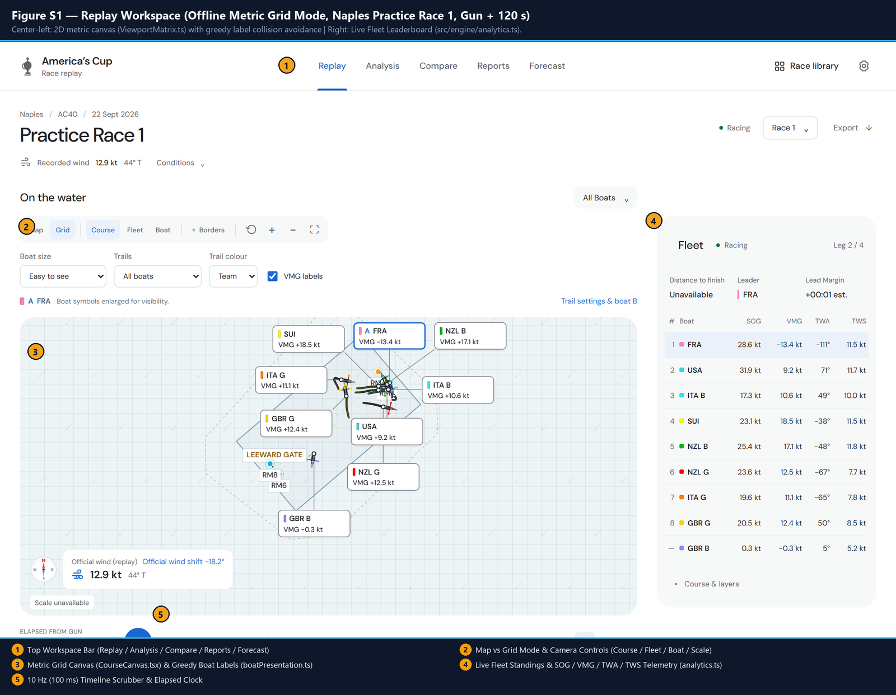
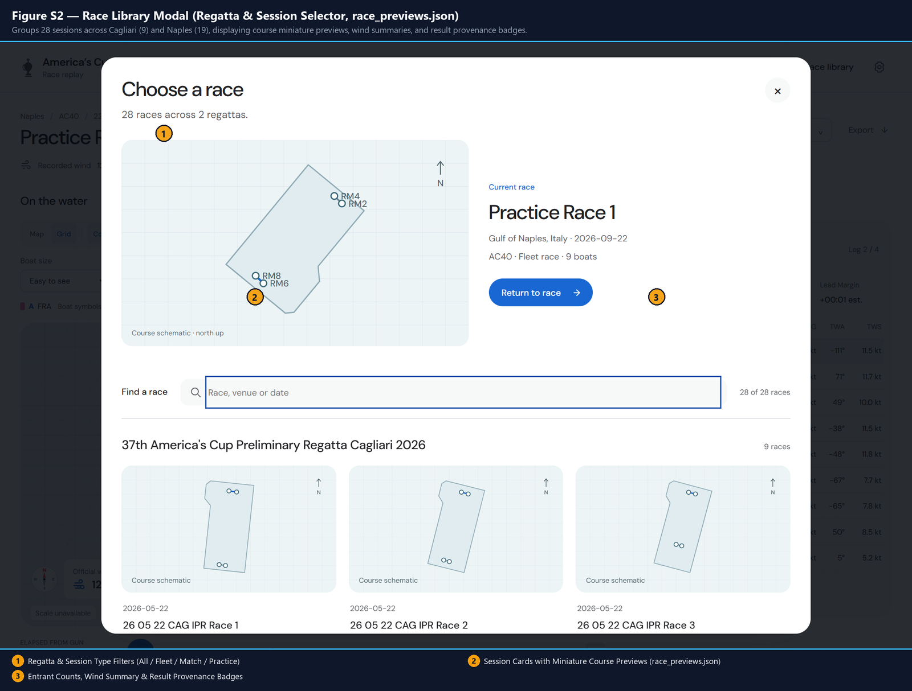
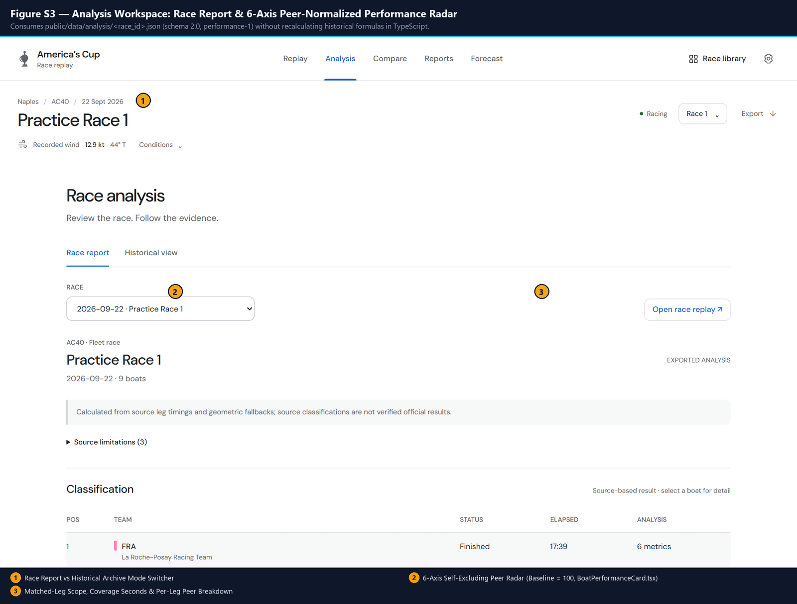
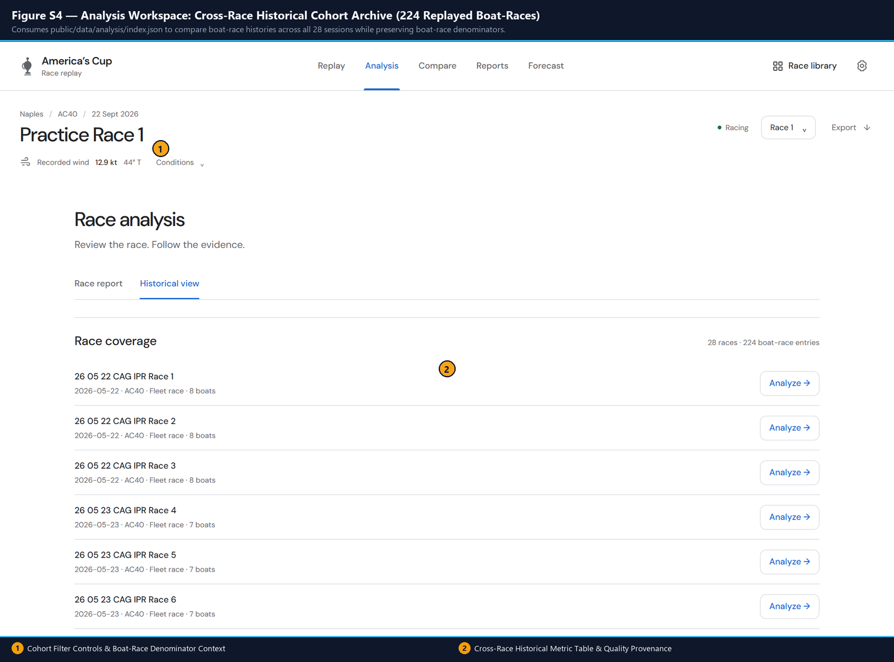
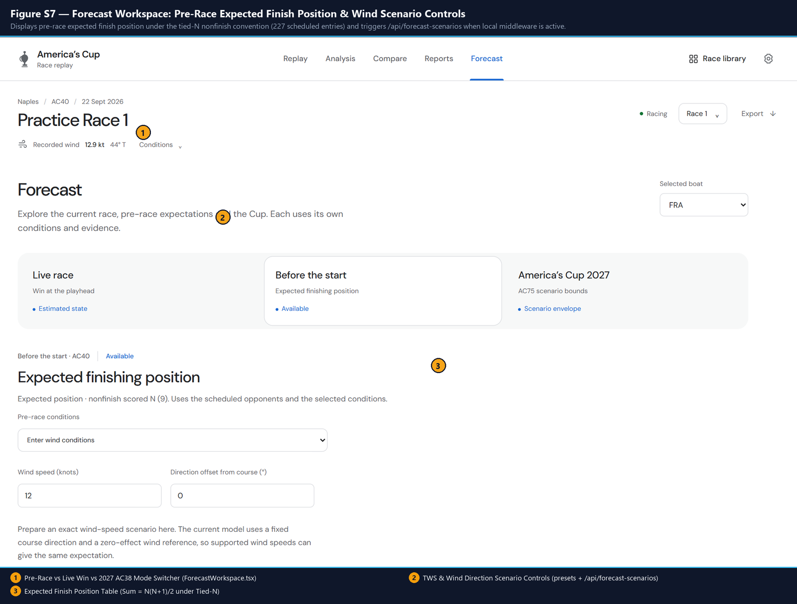
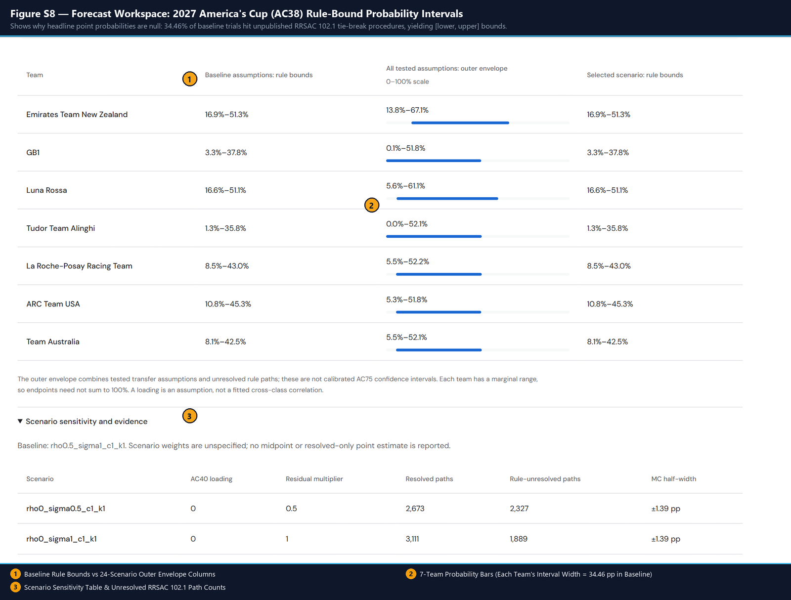
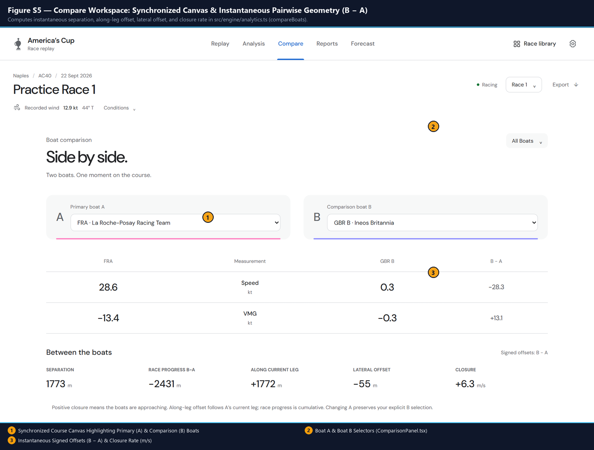
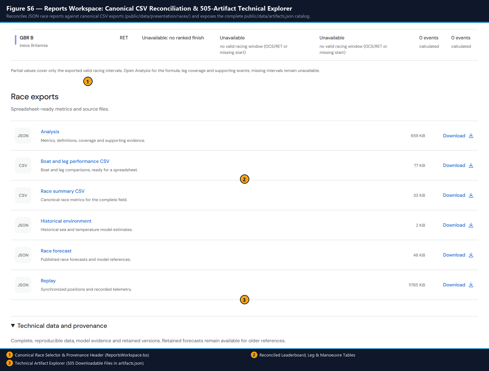

01 — The AC40 & AC75 Regatta Replay, Analytics & Forecasting Repository Explained
Evidence-Grounded Offline Textbook & Architectural Monograph Frozen Review Snapshot:
2026-11-04| Git Commit:f956f8a14feb3d6bfa483b91ea10384f3bcb84d4(main, dirty working tree with 5 modified and 1 untracked first-party files recorded inevidence/repository_snapshot_provenance.json) Archive Scope: 28 Raw JSONL Sessions (6,866,006,601bytes /6.39 GiBacross 9 race dates in Cagliari and Naples) → 227 Scheduled Boat-Races / 224 Replayed Boat-Races / 169 Completed Boat-Races (74.45%) → 505 Published Artifacts (263,706,323bytes inpublic/data/) Live Verification Gate (2026-11-04):.\run.ps1 verify— 828 deterministic tests passed (406 frontend Vitest + 291 Python unit + 123 E2E replay Tier 1–4 + 8 Tier 5 export checks + forecast/environment/team-analytics cryptographic verifiers).
Preface: How to Read This Textbook in the Mountains
This textbook is written to be read without Wi-Fi, without a running local server, and without access to the AI assistant that authored it. Its objective is conceptual and engineering mastery: after working through this book, you should be able to derive every geometric and statistical formula on paper, trace any number on the dashboard back to the exact Python function and raw JSONL record that produced it, defend the system's causal and physical invariants, and critique every place where the empirical evidence stops supporting a conclusion.
Pedagogical Structure of Every Chapter
Every major chapter (Parts I through VIII) follows an eight-part pedagogical template:
1. Learning Objectives: What you must be able to derive, trace, or critique after completing the chapter.
2. Intuition-First Explanation: Why the subsystem exists and the physical or statistical mental model behind it.
3. Technical Explanation & Equations: Exact mathematical definitions, coordinate frames, units, sign conventions, and algorithmic state machines grounded in line-level code citations.
4. Worked Example: A hand-checkable calculation that states explicitly whether it uses actual repository evidence or deliberately simplified synthetic data.
5. "What Would Change If This Assumption Failed?": Sensitivity and failure-mode analysis of the chapter's core modeling or geometric assumptions.
6. Common Mistakes: Frequent misreadings of UI labels, units, denominators, or probabilities.
7. Short Self-Test: Rapid diagnostic questions to verify understanding before moving on.
8. Source-Reading Route: Ordered clickable links into the local source-companion/index.html snapshot with exact #L1..#LN line ranges.
Epistemic Discipline: Separating Behavior, Interpretation, Limitations, and Improvements
Throughout this book, four epistemic categories are explicitly separated:
- Current Behavior (Code Truth): What the executable Python and TypeScript files actually compute at commit f956f8a14feb, including six documented code-versus-documentation discrepancies.
- Interpretation: How a human analyst, coach, or strategist should read the resulting numbers.
- Limitations: Where missing telemetry channels, unverified finishing orders, small sample sizes (R=28 correlated sessions across D=9 race days), or unpublished tournament rules restrict what can be concluded.
- Proposed Improvements: Concrete, falsifiable engineering or statistical upgrades that would resolve a defect or tighten a bound.
Part I — What Problem Does the Project Solve?
Chapter 1: Purpose, Workspaces, Sailing Primer, and Epistemic Scope
1.1 Learning Objectives
After studying this chapter, you will be able to: - Explain the operational decisions supported by each of the five dashboard workspaces (Replay, Analysis, Compare, Reports, and Forecast) and why a strict Python-to-Browser Ownership Boundary governs them. - Distinguish epistemically between observing a past race (kinematic reconstruction), comparing historical performance (retrospective peer-normalized metrics), and predicting a future outcome (causal probabilistic forecasting under uncertainty). - Define the fundamental sailing geometry of an America's Cup windward-leeward course: starts, gates, legs, tacks, gybes, heading (HDG), course over ground (COG), true wind direction (TWD), true wind speed (TWS), true wind angle (TWA), speed over ground (SOG), velocity made good (VMG), and nonfinish states (DNS, DNF, DSQ, OCS, RET). - State clearly what this system can establish today and what it cannot establish.
1.2 Intuition-First Explanation: Why Raw GNSS Logs Are Not Enough
In high-performance foiling regattas (the AC40 preliminary events in Cagliari and Naples leading up to the 38th America's Cup in 2027), boats hydrofoil at 15–45kt (7.7–23.1m/s). A raw telemetry archive (Data/*.jsonl) records asynchronous, noisy timestamped packets from boat GNSS receivers, inertial measurement units (IMUs), autonomous mark buoys, and race-committee management messages.
A raw packet stream cannot directly answer even simple coaching or strategy questions:
- Did ITA cross the start line early, or did only its GNSS antenna stay behind the line while its bowsprit crossed?
- When FRA gained 18 seconds on Leg 1 of naples_pr1, was it because FRA sailed faster through the water, sailed a better windward angle, or caught a localized right-hand wind shift?
- Given only telemetry published up to timestamp t (accounting for a 6-second broadcast delay), what is the probability distribution over finishing order 30 seconds later?
- Under the published Draft Protocol for the 2027 America's Cup, how much of a team's qualification chance is determined by estimated boat speed versus unresolved tournament rule ambiguity?
To answer these questions without fabricating precision, the repository is organized around a strict architectural contract: Python (pipeline/) owns all offline coordinate projection, event reconstruction, historical metric calculation (historical-1, tactical-1, performance-1, debrief-1), and causal probabilistic forecasting; TypeScript (src/) consumes those immutable JSON/CSV exports and computes only instantaneous 60 fps visual interpolation, camera transforms, and 2D Separating Axis Theorem (SAT) polygon rendering.
1.3 Technical Explanation: The Five Workspaces and Three Epistemic Modes
1.3.1 Intended Users and Useful Decisions
The platform serves three distinct user personas (PROJECT.md, docs/dashboard_contract.md):
1. Tactical Coaches & Performance Analysts: Use Replay and Compare to inspect start-box positioning, tack/gybe speed loss, layline approaches, and split-gate decisions at 10 Hz (100 ms) temporal resolution.
2. Regatta Data Scientists & Strategists: Use Analysis and Reports to audit multi-race performance distributions across the 28-race archive (224 replayed boat-races), verify coverage (ok, partial, unavailable) and quality (ok, sparse, conflict, unverified) flags, and inspect canonical CSV ledgers.
3. Forecasting Researchers & Tournament Modelers: Use Forecast to inspect out-of-sample calibrated finishing-order probabilities (Pre-Race and Live t+30s/t+60s), run bounded weather/condition sensitivity scenarios, and analyze explicit lower/upper probability intervals [p_low, p_high] for the 2027 America's Cup.
| Workspace | Primary UI Component | Exported Artifacts Consumed | Core Question Answered |
|---|---|---|---|
| Replay | src/App.tsx, MapLibreCourseMap.tsx |
manifests.json, races/<id>/replay.json, environment/<id>.json |
What happened kinematically at timestamp t on the water? |
| Analysis | AnalysisWorkspace.tsx |
analysis/index.json, analysis/races/<id>.json |
How did each boat perform across checkpoints, legs, manoeuvres, and peer indices? |
| Compare | ComparisonView.tsx |
Dual races/<id>/replay.json + analysis/races/<id>.json |
Where did Boat A gain or lose metres against Boat B on synchronized timelines? |
| Reports | ReportsWorkspace.tsx |
analysis/canonical/*.csv, analysis/index.json, all 505 public artifacts |
Do the headline aggregates reconcile to the row-level boat-race ledger? |
| Forecast | ForecastWorkspace.tsx |
predictions/index.json, races/<id>.json, cup_2027.json |
What outcomes are probable ahead of time, and how wide is structural uncertainty? |

1.3.2 Observing vs. Comparing vs. Predicting
A foundational contribution of this repository is separating three epistemic modes that are frequently conflated in sports analytics:
- Observing a Past Race (Kinematic Reconstruction):
- Time Horizon: Full-race retrospective (
ingest.py→synchronize.py→reconstruction.py). - Permitted Information: Complete raw telemetry stream[min_t, max_t], including future mark positions and final gate roundings. - Output: Continuous 10 Hz (100 ms) trajectories (xi(t), yi(t), θi(t)), bow-projected gate crossings, and discrete manoeuvre events. - Comparing Historical Performance (Descriptive & Peer-Normalized Analytics):
- Time Horizon: Retrospective post-race and cross-archive aggregation (
historical_analysis.py). - Permitted Information: Full reconstructed race state plus fleet-wide peer outcomes on matched legs (performance-1) and 120-second linear regression over wind history (tactical-1). - Output: 30 standardized metric definitions (DEFINITIONS), coverage/quality envelopes, and a 6-axis self-excluding peer index centered at100.0. - Predicting a Future Outcome (Causal Probabilistic Forecasting):
- Time Horizon: Strictly causal (
pipeline/prediction/). At decision time t, only packets withpublished_at_ms <= t(wherepublished_at_ms = state_timestamp_ms + 6000) are visible viaReorderBuffer. - Permitted Information: Past races strictly prior to the current race start (Pre-Race), or causal Kalman-filtered state up to t - 6s (Live). Future mark positions, future wind shifts, and post-t leg times are strictly forbidden. - Output: Calibrated probability distributions over discrete rankings (Plackett–Luce and Correlated Monte Carlo) and non-normalizable probability bounds[p_low, p_high]when tournament rules leave paths unresolved.
1.3.3 What the System Can Establish Today vs. What It Cannot Establish
| What the System Can Establish Today (Verified Evidence) | What the System Cannot Establish Today (Hard Epistemic Limits) |
|---|---|
| Exact 10 Hz local-metre trajectories for 224 boat-races across 28 sessions, projected via WGS84 equirectangular tangent planes. | Official race-committee finishing orders or protests: official_order_verified is False across all 28 sessions (historical_analysis.py:L768). |
Bow-projected (+12.963 m) start-line and gate crossings within a 200 m corridor, plus 4-gate kinematic tack/gybe detection (min_speed_loss_kt = 2.5). |
True hydrodynamic boat speed through water (STW) or leeway angle: raw logs provide GNSS ground-referenced SOG and COG, not hull paddlewheel/pitot STW or tidal current vectors. |
Self-excluding peer performance indices (performance-1) comparing each boat against the remaining N-1 active boats in the same race on the same leg. |
Causal attribution of a single tactical choice: debrief-1 flags co-occurring wind shifts, speed losses, and rank changes, not counterfactual physical simulations. |
Causal pre-race and live (t+30s, t+60s) Plackett–Luce and Correlated MC rank distributions across 227 scheduled entries (169 completed). |
Empirical out-of-sample superiority of the learned pre-race ranker over a simple prior: pre-race Normalized RPS (0.5177) trails the reference prior (0.4227) on the 28-race archive (predictions/index.json). |
Explicit lower/upper probability bounds [p_low, p_high] for the 2027 America's Cup separating statistical variance from 34.46% RRSAC 102.1 rule ambiguity. |
True AC75 performance in 2027: all 28 archive sessions are sailed in AC40 one-design yachts; projecting to AC75 custom yachts relies on an unverified cross-class transfer assumption (ρ = 0.7). |
1.4 Sailing Primer & Course Geometry
To read the equations in Parts II–VI, you need a precise geometric picture of a windward-leeward regatta course.
1.4.1 Course Architecture: Starts, Gates, and Legs
- True Wind Direction (TWD, θwind): Meteorological convention: the compass bearing (0°–360° clockwise from True North) from which the wind blows. If TWD = 225° (South-West wind), the wind blows from 225° toward 045°.
- Course Axis (ûcourse): A windward-leeward course is aligned roughly parallel to the wind.
- Upwind Legs (Legs 1, 3, 5, ...): Sailed into the wind, from the Leeward Gate (or Start Line on Leg 1) toward the Windward Gate (Mark 1 / Gate 1).
- Downwind Legs (Legs 2, 4, 6, ...): Sailed with the wind, from the Windward Gate down to the Leeward Gate (Mark 2 / Gate 2) or Finish Line.
- Start Line & Gates: Each boundary is defined by two autonomous floating marks (Port mark mP and Starboard mark mS), with midpoint gk = 12(mP + mS). Boats start by crossing the Start Line after gun time (t = 0), round gates in sequence g1 → g2 → … → gfinish, and may choose either the left or right mark of a two-mark gate (split-gate choice).
1.4.2 Boat Angles and Velocities: HDG, COG, TWA, SOG, and VMG
- Heading (HDG, ψ): The compass direction (0°–360°) the boat's longitudinal centerline (bow) points, measured by onboard compass/IMU.
- Course Over Ground (COG, χ): The compass direction (0°–360°) of the boat's actual velocity vector v = (\dotx, \doty) over the seabed, measured by GNSS:
COG = atan2(\dotx, \doty) mod 360°(Note: In navigation, atan2(East, North) yields clockwise degrees from North. Because of leeway, current, or foil side-force, COG generally differs slightly from HDG.)
- True Wind Angle (TWA): The signed or unsigned smallest angle between the wind source direction (TWD) and the boat's direction of travel (
pipeline/historical_analysis.py:L255-L257):Δθsigned = ((θwind - θboat + 180°) mod 360°) - 180° ∈ [-180°, +180°)TWA = |Δθsigned| ∈ [0°, 180°] - When Δθsigned > 0, wind arrives over the starboard side (Starboard Tack).
- When Δθsigned < 0, wind arrives over the port side (Port Tack).
- Upwind vs. Downwind and Tacks vs. Gybes:
- A sailboat cannot sail directly into the wind (TWA = 0°, the "no-go zone") nor fastest dead downwind (TWA = 180°). Foiling AC40s sail upwind at TWA ≈ 40°–48° and downwind at TWA ≈ 135°–155°.
- Tack: Turning the bow through the wind (TWA < 90°, upwind) to switch between port and starboard tack.
- Gybe: Turning the stern through the wind (TWA ≥ 90°, downwind) to switch between port and starboard tack.
- Speed Over Ground (SOG) and Velocity Made Good (VMG):
- SOG = \|v\| is scalar ground speed, exported in knots (1kt = 1852/3600m/s ≈ 0.514444m/s) or m/s.
- VMG measures the component of velocity useful for advancing toward the next mark or into/down the wind axis. Crucially, this repository defines two distinct VMG quantities depending on context:
- Leg-Axis VMG (Replay & Live Telemetry): Projection of boat velocity onto the unit vector ûleg from the previous gate midpoint to the target gate midpoint (
pipeline/analytics.py:L229-L237,src/engine/analytics.ts:L16-L35):VMGleg = SOG · cos(COG - θleg) - Wind-Axis Absolute VMG (Historical Analysis
vmg_mean/upwind_vmg/downwind_vmg): Magnitude of velocity projected onto the true wind axis (pipeline/historical_analysis.py:L368):VMGwind = |SOG · cos(TWA)|
- Leg-Axis VMG (Replay & Live Telemetry): Projection of boat velocity onto the unit vector ûleg from the previous gate midpoint to the target gate midpoint (
- Nonfinish States:
- DNS (Did Not Start): Boat never legally started the race.
- OCS (On Course Side): Boat was across the start line early at t=0 and failed to return and clear itself.
- DNF (Did Not Finish) / RET (Retired): Boat started legally but did not complete all course legs.
- DSQ (Disqualified): Boat was disqualified by umpires for rule infractions.
1.5 Worked Example: Calculating Signed Wind Angle, Tack, and Both VMGs (Synthetic Data)
Data Provenance: Deliberately simplified synthetic data chosen for clean hand verification of
pipeline/historical_analysis.py:L255-L368andsrc/engine/analytics.ts:L16-L35.
Suppose at timestamp t: - True wind direction is θwind = 220°, and the Windward Gate lies at bearing θleg = 225° from the Leeward Gate (5° skewed from the instantaneous wind). - Boat A sails upwind on course θboat = COG = 175° at speed SOG = 20.0kt.
Step 1 — Signed Wind Angle and Tack:
Step 2 — Wind-Axis VMG (historical_analysis.py:L368):
Step 3 — Leg-Axis VMG (src/engine/analytics.ts:L28):
The angle between Boat A's travel (COG = 175°) and the leg vector (θleg = 225°) is Δθleg = 175° - 225° = -50.0°:
1.6 "What Would Change If This Assumption Failed?"
- Assumption: The browser never recalculates historical metrics or forecasts; it only renders Python exports.
- If violated: Suppose a frontend developer added an inline TypeScript calculation for
upwind_vmgusing VMGleg instead of VMGwind. The Analysis workspace table and Reports CSV export would silently diverge from the Replay HUD whenever the wind shifted away from the mark bearing. The repository prevents this viaPROJECT.mdand E2E contract tests intests/test_historical_analysis.py.
1.7 Common Mistakes
- Confusing Meteorological Wind (TWD) with Vector Flow Direction: TWD = 180° means wind blowing from the South toward the North (0°).
- Equating
hdgandcogin Historical Metrics: Inpipeline/historical_analysis.py:L283,_frame_course_degchecksframe.get("hdg") if frame.get("hdg") is not None else frame.get("cog"). Becausehdgis always populated in exported replay frames, historicaltwaandvmgare computed against heading (hdg), whereas live browser VMG (src/engine/analytics.ts:L28) usescog. - Treating Reconstructed Ranks as Official Regatta Standings: All 28 sessions carry
official_order_verified: False.
1.8 Short Self-Test
- If a boat has HDG = 310° and TWD = 260°, what is Δθsigned, is the boat on Port or Starboard tack, and is it sailing upwind or downwind?
- Which workspace should you open to inspect row-level reconciliation between
boat_race_metrics.csvandteam_summary.csv?
1.9 Source-Reading Route
PROJECT.md(#L1–L90) — Repository mission, workspace inventory, and verification rules.docs/architecture.md(#L1–L103) — End-to-end pipeline and frontend ownership contract.docs/dashboard_contract.md(#L1–L80) — Workspace data bindings and state isolation.
Part II — What Information Actually Exists?
Chapter 2: The Raw Archive, Coordinate Systems, Coverage/Quality Metadata, and the Evidence Ladder
2.1 Learning Objectives
After studying this chapter, you will be able to:
- State the exact archive inventory: 28 raw .jsonl sessions (6,866,006,601 bytes across 9 dates in Cagliari and Naples), 227 scheduled boat-races vs. 224 replayed boat-races vs. 169 completed boat-races.
- Explain why GBR B appears in 227 forecast ledger entries but only 224 replay/analysis entries (0 telemetry packets in 26_09_22_nap_ipr_pr2, pr3, pr4).
- Derive the local tangent-plane equirectangular projection (Projection in pipeline/projection.py) and identify the hard-coded origin bug in IngestionResult.to_dict().
- Explain why 550,000+ telemetry frames do not represent 550,000+ independent statistical observations.
- Classify any datum in the repository along the Six-Rung Evidence Ladder.
2.2 Intuition-First Explanation: What Is Actually Inside Data/*.jsonl?
It is tempting to look at a 6.87 GB telemetry folder and assume we have a massive, clean, high-dimensional statistical dataset. In reality, high-frequency spatial telemetry is wide in time steps (10Hz) but narrow in independent competitions (R=28 sessions across D=9 calendar days). Furthermore, physical sensors drop packets, autonomous course marks drift or relocate between legs, boats retire before the start gun, and raw race-committee XML/JSON status flags occasionally contradict kinematic trajectories on the water.
Understanding what information actually exists—and where the gaps, held values, and source conflicts lie—is the prerequisite for trusting any downstream chart or probability.
2.3 Technical Explanation: Archive Inventory, Sampling, Projection, and Metadata
2.3.1 Complete Inventory of the 28 Sessions Across 9 Race Dates
The raw archive in Data/ contains 28 .jsonl files totaling 6,866,006,601 bytes (6.87 GB / 6.39 GiB), partitioned into two AC40 venues (docs/source_audit.md, evidence/analysis_snapshot_overview.json):
| Venue | Race Dates (2026) | Sessions (R) | Boat Class | Scheduled Boat-Races | Replayed Boat-Races (ingest.py) |
Completed Boat-Races (completed=True) |
|---|---|---|---|---|---|---|
| Cagliari (Sardinia) | May 22, May 23, May 24 (3 days) |
9 | AC40 |
63 (9 × 7) | 63 | 62 (98.41%) |
| Naples (Campania) | Sep 22, 23, 24, 25, 26, 27 (6 days) |
19 | AC40 |
164 | 161 | 107 (65.24%) |
| Archive Total | 9 Calendar Days | 28 | AC40 (100%) |
227 | 224 | 169 (74.45%) |
Why 227 Scheduled vs. 224 Replayed Boat-Races? In
pipeline/ingest.py:L699-L700, the ingestion loop executes:python for asset_id, comp in competitors.items(): if not boat_streams.get(asset_id): continueOn September 22, 2026 in Naples,GBR B(Emirates Great Britain B/ Athena Pathway) was listed in the race-committee competitor manifest (scheduled = True,present_in_race_xml = True) for three sessions—26_09_22_nap_ipr_pr2,26_09_22_nap_ipr_pr3, and26_09_22_nap_ipr_pr4—but emitted zeroboat_telemetrypackets (telemetry_Competitorabsent). - Consequently,ingest.pyskipsGBR Bin those three races, producing 227 - 3 = 224 boat-races inpublic/data/races/<id>/replay.jsonandpublic/data/analysis/index.json(total_boat_races = 224). - By contrast, the causal forecasting pipeline reads.forecast/scheduled_entry_ledger.json, which preserves all 227 scheduled competitor entries so that pre-race non-starters (DNS/DNC) are properly accounted for in the empirical completion rate (169 / 227 = 74.45%) and scored as tied last-place ranks rather than silently dropped (survivorship bias).
2.3.2 Sampling Cadence, Missing Channels, Irregular Timestamps, and Held Tails
- Asynchronous Multi-Rate Raw Channels (
pipeline/ingest.py:L402-L745): -boat_telemetry: Nominally 10 Hz (100 msintervals), containing WGS84latitude,longitude,heading(hdg),cog,sog(knots), andheel/pitchwhere available. -wind_telemetry: Nominally 1 Hz (1000 msintervals) per station (committee boat, marks, or competitor masthead sensors), containingtws(knots) andtwd(degrees). -mark_telemetry: Nominally 1 Hz (1000 ms), tracking autonomous GPS mark buoys. - Synchronization to Regular 100 ms Grid (
pipeline/synchronize.py): -determine_time_bounds(L16–L54) scans all boat telemetry streams and establishes a regular timeline tk = tmin + 100kms (step_ms = 100). - Held Values Before/After Sensor Dropouts: Ininterpolate_scalar_stream(L57–L92) andinterpolate_circular_stream(L95–L124), if a target timestamp tk falls before a boat's first telemetry packet (t <= times[0]) or after its last telemetry packet (t >= times[-1]), the synchronizer clamps (holds) the boundary value constant (values[0]orvalues[-1]). - Why Held Tails Matter: If a boat's transponder stops transmitting mid-race, its exportedreplay.jsonframes continue untilmax_twith frozenx, y, sog, hdg! Downstream code inpipeline/historical_analysis.py:L201-L249must explicitly detect held-tail intervals (_active_end_index, checking where position and speed stop changing) so frozen post-retirement frames do not corrupt average speed or VMG calculations.
2.3.3 Asset Identity Mapping and Moving Course Marks
- Asset Identity Mapping (
pipeline/ingest.py:L150-L245): Raw telemetry packets reference UUID strings (asset_id).ingest.pyparsesregatta_configandrace_configrecords to bind eachasset_idto a standardized team code (ITA,NZL,GBR,GBR B,FRA,USA,SUI,SWE), boat name, hull color, and competitor status, while binding mark UUIDs to course gates (start_line,gate_1,gate_2,finish_line). - Moving Course Marks: Autonomous robotic marks adjust their positions dynamically or drift with current.
synchronize_marks(L172–L198) interpolates mark (x, y) coordinates at every100 msframe, andreconstruction.py:L74-L98evaluates gate midpoints dynamically at the exact frame indexidxrather than assuming static buoys.
2.3.4 Coordinate Systems, Local Tangent-Plane Projection, and Units
Raw GNSS positions arrive in WGS84 geographic coordinates (ϕ, λ) in decimal degrees (latitude, longitude). To perform Euclidean geometry (distances in metres, velocities in m/s, polygon collision checks), pipeline/projection.py (L1–L90) projects (ϕ, λ) onto a local flat East-North tangent plane (x, y) centered at a venue reference origin (ϕ0, λ0):
| Venue | Reference Origin (ϕ0, λ0) | metersperdeglat | metersperdeglon(ϕ0) | Source File & Line |
|---|---|---|---|---|
Naples (default) |
(40.80°N, 14.23°E) | 111,319.4908 m/deg |
84,269.8529 m/deg |
pipeline/projection.py:L21-L26 |
Cagliari (cagliari_*) |
(39.185°N, 9.13°E) | 111,319.4908 m/deg |
86,277.3193 m/deg |
pipeline/export_replay.py:L36-L45 |
Code-vs-Documentation Nuance #1 — Hardcoded Naples Origin in
IngestionResult.to_dict(): Whilepipeline/export_replay.py:L153-L154writes the correct venue-specific projection constants intopublic/data/races/<id>/replay.json, the intermediate helperIngestionResult.to_dict()(pipeline/ingest.py:L383-L388) hardcodes"ref_lat": 40.80, "ref_lon": 14.23, "meters_per_deg_lon": 84269.85regardless of venue. Consumers of exportedreplay.jsonfiles are unaffected becauseexport_replay.pyoverwrites the block usingself.projection.
2.3.5 Source Conflicts, Coverage Metadata, and Quality Envelopes
Every metric exported by pipeline/historical_analysis.py carries two explicit epistemic badges:
1. coverage (ok | partial | unavailable):
- ok: All required inputs exist over the full denominator window.
- partial: Inputs exist for a subset of boats, legs, or frames (e.g., a boat that retired after Leg 2 has partial leg coverage).
- unavailable: Required input channel is absent or rejected by quality gates (e.g., wind sensor missing, or USA in naples_pr1 where start status conflicts).
2. quality (ok | sparse | conflict | unverified):
- ok: Reconstructed and raw source signals agree and meet sample-density thresholds.
- sparse: Fewer than minimum required samples (e.g., < 10 valid wind samples in a leg).
- conflict: Raw source flags contradict reconstructed geometry! The canonical example is USA in naples_pr1: raw race_competitor records report started = False across all 24 status packets, yet USA physically sailed the course and reconstruction.py assigns status = "RANK_4". historical_analysis.py:L755-L759 detects (started is False) and (finished_rank is not None) and flags USA with quality = "conflict", withholding finish rank (finish_rank = None) from historical leaderboards.
- unverified: Used for race-level finishing orders (official_order_verified = False across all 28 sessions) because no external Jury/World Sailing signed result sheet is bundled in Data/.

2.3.6 Why a Large Number of Telemetry Frames Does Not Imply Many Independent Races
Across the 28 sessions, the synchronized 100 ms timelines contain roughly 150,000+ time steps and over 1,000,000 boat-frame records. A naive analyst might compute a standard error using Nframes = 106, yielding vanishingly small p-values (∝ 1/√Nframes).
This is statistically invalid for three reasons:
1. High Temporal Autocorrelation: At 10Hz (0.1 s steps), a 2.5-ton foiling AC40 has massive physical inertia; SOG(t + 0.1s) has lag-1 autocorrelation ρ1 > 0.99. Ten consecutive frames do not provide ten independent draws of boat capability.
2. Within-Race Coupling: The 7 boats in a session sail through the same macroscopic wind field and interact tactically at gates; their outcomes within race r are coupled.
3. Day-Level Weather Clustering (D = 9 dates): All 28 sessions occurred on just 9 calendar days (3 in Cagliari, 6 in Naples). Consequently, the effective sample size for estimating team ability or validating pre-race forecasts is bounded by R = 28 races (and 224 replayed / 169 completed boat-races clustered across D = 9 race days), which is why pipeline/prediction/backtest.py enforces day-clustered block bootstrap (day_bootstrap_ci) rather than frame-level or i.i.d. resampling.
2.3.7 The Six-Rung Evidence Ladder
To prevent conflating sensor measurements with model extrapolations, every quantity in this study pack is assigned to one of six rungs on the Evidence Ladder:
| Rung | Epistemic Tier | Definition | Concrete Repository Examples |
|---|---|---|---|
| Rung 1 | Measured Observation | Direct raw packet value recorded in Data/*.jsonl without spatial or temporal transformation. |
Raw WGS84 lat/lon, raw sog/cog/hdg, raw tws/twd, raw race_competitor.started. |
| Rung 2 | Interpolated State | Continuous time-series value placed onto the regular 100 ms grid via linear, Slerp, or boundary-hold rules. |
Synchronized x, y, hdg, sog in synchronize.py; held tail values after telemetry dropout. |
| Rung 3 | Calculated / Reconstructed Quantity | Deterministic geometric or kinematic functional of Rung 1–2 states under explicit thresholds. | Bow-projected (+12.963 m) gate crossings (reconstruction.py), 4-gate manoeuvres (manoeuvres.py), VMG, performance-1 peer index (109.97). |
| Rung 4 | Model Estimate (Statistical / Causal) | Probabilistic distribution or latent parameter inferred from historical/live data under a parametric likelihood. | Kalman-filtered live velocity (kalman.py), Plackett–Luce win probabilities (model.py), Beta-Binomial finish rate (74.45%). |
| Rung 5 | Scenario / Structural Assumption | Unverified domain parameter, cross-class transfer weight, or user-supplied counterfactual input. | AC40 → AC75 transfer weight ρ = 0.7, weather scenario offset ΔTWS, RRSAC 102.1 unresolved bracket bounds [p_low, p_high]. |
| Rung 6 | Unavailable / Withheld Value | Quantity deliberately exported as null / unavailable because source channels are missing, conflicting, or non-identifiable. |
USA finish_rank = null in naples_pr1 (conflict); PositiveDelayMixture (available = false); official jury standings. |
2.4 Worked Example: WGS84-to-Local Tangent-Plane Projection in naples_pr1 (Actual Repository Evidence)
Data Provenance: Actual repository evidence from
pipeline/projection.py:L21-L55andpublic/data/races/naples_pr1/replay.json(evidence/naples_pr1_replay_bounded_excerpt.json).
Let us verify the projection of a raw WGS84 coordinate in Naples (naples_pr1) onto the local metre grid:
- Reference origin for Naples: ϕ0 = 40.80°N, λ0 = 14.23°E.
- Earth equatorial radius in projection.py:L15: R⊕ = 6,378,137.0m.
Step 1 — Scale Factors:
Step 2 — Forward Projection (project):
At gun time (t = 0.0s, timestamp_ms = 1790085600000) in naples_pr1, ITA is at local coordinates (x, y) = (646.96m, -2142.34m). Inverting to WGS84 (unproject):
Projection(40.80, 14.23).project(lat, lon) recovers (x, y) = (646.960m, -2142.340m) to sub-millimetre precision (< 1e-9 m), verified by examples/01_verify_projection_and_bow_crossing.py.
2.5 "What Would Change If This Assumption Failed?"
- Assumption: A single flat equirectangular tangent plane centered at (ϕ0, λ0) has negligible metric distortion across the race course.
- Sensitivity Check: A typical AC40 course spans ∼ 2.5km (|Δϕ| < 0.025° from ϕ0 = 40.80°). Over Δϕ = 0.02°, cos(ϕ) changes from cos(40.80°) = 0.756995 to cos(40.78°) = 0.757223, a relative East-West scale variation of 0.030% (∼ 0.06m across a 200m start line). However, if a Cagliari race (ϕ0 = 39.185°) were projected using the Naples metersperdeglon (
84,269.85instead of86,277.32), East-West distances would be compressed by 2.33% (∼ 4.7m per 200m)! That is whyexport_replay.py:L36-L45selects venue-specific origins.
2.6 Common Mistakes
- Assuming
224and227Are a Counting Bug:227is the scheduled entry count in.forecast/scheduled_entry_ledger.json;224is the replayed boat-race count afteringest.py:L699drops the 3 zero-telemetryGBR Bentries. - Treating Held End-of-Race Telemetry as Active Sailing: Always slice boat trajectories up to
_active_end_index(frames)(historical_analysis.py:L201) before computing speed averages.
2.7 Short Self-Test
- Why is
USAassignedquality = "conflict"andfinish_rank = Noneinnaples_pr1(analysis/races/naples_pr1.json), even thoughreplay.jsonshowsUSAin 4th place (RANK_4)? - On which rung of the Evidence Ladder does the AC40-to-AC75 transfer correlation (ρ = 0.7) sit, and why?
2.8 Source-Reading Route
docs/source_audit.md(#L1–L120) — Archive file inventory, byte counts, and source anomalies.pipeline/projection.py(#L1–L90) — WGS84 equirectangular projection math.pipeline/ingest.py(#L380–L745) — JSONL stream parser and competitor filtering.
Part III — How Does Raw Data Become a Replay?
Chapter 3: Synchronization, Bow-Offset Gate Reconstruction, Manoeuvre Detection, and Contact Geometry
3.1 Learning Objectives
After studying this chapter, you will be able to:
- Trace a raw .jsonl session through the five stages of replay generation: ingest.py → projection.py → synchronize.py → reconstruction.py + manoeuvres.py + analytics.py → export_replay.py.
- Derive circular angle interpolation (shortest-arc modular Slerp) and explain why naive linear interpolation fails across the 359° ↔ 1° North wrap.
- Write out the exact 2D line-segment intersection equations used by reconstruction.py to detect start-line and gate crossings using the +12.963 m bowsprit offset and 200 m gate corridor.
- Explain how progress_m, leg, dtl_m, and status (RACING, FINISHED, OCS, DNS, DNF, DSQ) are reconstructed, including the exact mechanism of two real repository bugs (USA in naples_pr1 and USA in 26_09_22_nap_ipr_pr2).
- State the 4 kinematic gates of ManoeuvreDetector (pipeline/manoeuvres.py) and the 2D Separating Axis Theorem (SAT) virtual contact detector (pipeline/analytics.py).
3.2 Intuition-First Explanation: Reconstructing a Continuous Race from Discrete Point Clouds
In the raw telemetry stream, each boat is represented only by the GNSS coordinates of its reference antenna near the stern/helm, sampled at irregular millisecond timestamps. Yet in sailing rules (RRSAC), a boat starts or finishes when any part of its hull or bowsprit crosses the line between two floating marks. On an AC40 (11.80 m hull + bowsprit), the physical bow tip lies 12.963 m ahead of the GNSS reference point along the boat's heading vector!
Furthermore, raw mark rounding messages from the race committee (gate_time) are sometimes missing, delayed, or even non-monotonic in time. Therefore, the replay pipeline must first place all boats, marks, and wind stations onto a unified 100 ms clock (synchronize.py), project each boat's bow tip 12.963 m forward (reconstruction.py), test for physical segment intersections across a 200 m gate corridor, enforce monotonic leg progress, detect tacks and gybes from heading rate-of-turn and speed loss (manoeuvres.py), and check for hull-envelope overlaps (analytics.py).
3.3 Technical Explanation: Step-by-Step Mathematical Pipeline
3.3.1 Stage 1 & 2: Timeline Synchronization and Circular Interpolation (pipeline/synchronize.py)
Given irregular boat telemetry packets (tm, xm, ym, sogm, ψm, χm)m=0M-1, synchronize_race (L201–L275) constructs the uniform grid tk = tmin + 100kms.
1. Linear Scalar Interpolation (interpolate_scalar_stream, L57–L92):
For tm < tk < tm+1 with fraction α = tk - tmtm+1 - tm ∈ (0, 1):
interpolate_circular_stream, L95–L124):
Compass angles θ ∈ [0°, 360°) (hdg, cog, twd) wrap modulo 360°. Naive linear interpolation between θm = 358° and θm+1 = 2° at α = 0.5 would yield 180° (Due South!) instead of 0° (Due North). Instead, synchronize.py:L119-L121 computes the signed shortest angular difference Δθ ∈ [-180°, +180°):
3.3.2 Stage 3: Bow-Offset Projection and Gate-Corridor Crossing (pipeline/reconstruction.py)
In pipeline/reconstruction.py:L25, the constant BOW_OFFSET_M = 12.963 defines the distance from the GNSS origin (x(tk), y(tk)) to the tip of the bowsprit along the boat's heading ψ(tk) (hdg):
_bow_position, L111–L118). Notice that sinψ multiplies East (x) and cosψ multiplies North (y) because compass heading ψ is measured clockwise from North (+y).
Gate Corridor Construction (_find_gate_crossing_index, L140–L179):
To determine when a boat rounds gate g_ℓ on leg ℓ (advancing from previous gate midpoint gℓ-1 to current gate midpoint g_ℓ):
1. Compute the leg direction vector dleg = g_ℓ - gℓ-1 = (Δ xleg, Δ yleg) with length Lleg = \|dleg\|.
2. Construct the unit normal vector perpendicular to the leg axis:
200 m gate corridor (half_width = 100.0 m) centered at the dynamic gate midpoint g_ℓ(tk) with endpoints:
_segments_intersect, L121–L137):
Between consecutive frames k-1 and k, test whether the boat's bow displacement segment p1 → p2 = b(tk-1) → b(tk) intersects the gate corridor segment q1 → q2 = c1(tk) → c2(tk) with forward progress (b(tk) - b(tk-1)) · dleg > 0.
Using the 2D cross product u × v = ux vy - uy vx with r = p2 - p1 and s = q2 - q1:
Hybrid Rounding Priority (Committee gate_time vs. Geometric Fallback):
In reconstruct_race (L252–L330), for each leg ℓ, reconstruction.py first checks whether the raw race-committee feed recorded an explicit gate_time timestamp (leg_info.get("gate_time")). If present and within the timeline, that timestamp defines the leg transition; otherwise, it falls back to _find_gate_crossing_index using the +12.963 m bow segment intersection.
3.3.3 Stage 3b: Monotonic Leg Progress (progress_m), Distance to Leader (dtl_m), and Status
At every frame k on active leg ℓ (from gℓ-1(tk) to g_ℓ(tk) with length L_ℓ):
1. Compute the raw scalar projection of the boat's position onto the leg vector (_project_onto_leg, L182–L198):
L368–L373): To prevent brief backward tacks or mark roundings from causing leaderboard rank oscillations, progress_m is clamped monotonically non-decreasing:
dtl_m, L402–L445):
Active racing boats are sorted by (finished_rank, -progress_m). For each active boat i, its spatial gap to the leader (rank == 1) is:
Code-vs-Documentation Nuance #2 — The
comp.get("started")Dictionary Nesting Bug (pipeline/reconstruction.py:L228): Inpipeline/ingest.py:L283, each competitor's start flag is stored inside a nested dictionary:python "start_state": {"started": self.started, "OCS": self.ocs, ...}However,pipeline/reconstruction.py:L228reads the top-level key:python raw_started = comp.get("started")Because"started"is nested under"start_state",comp.get("started")always returnsNone! As a result,reconstruction.pynever triggers itsraw_started is Falsebranch (L243) and instead reconstructsUSAinnaples_pr1from geometry alone (status = "RANK_4"). By contrast,pipeline/historical_analysis.py:L755correctly inspectscomp.get("start_state", {}).get("started"), discoversstarted is False, and marksUSAasquality = "conflict".
3.3.4 Stage 4: Four-Gate Kinematic Manoeuvre Detection (pipeline/manoeuvres.py)
ManoeuvreDetector (pipeline/manoeuvres.py:L42–L240) identifies tacks and gybes from synchronized 100 ms boat frames using a four-gate kinematic filter:
1. Gate 1 — Active Speed Floor (L97): Entry speed (mean SOG over [idx - 3.0 s, idx - 1.0 s]) must satisfy:
L85–L94): Absolute heading rate-of-turn |\dotψ| smoothed over a 1.0 s window must peak above min_turn_rate_dps = 8.0 deg/s, with a total net heading change over [-4.0 s, +4.0 s] of:
L135–L158): The signed true wind angle Δθsigned must flip sign between the entry window ([-4.0 s, -1.5 s]) and exit window ([+1.5 s, +4.0 s]), confirming the boat actually crossed the wind axis (Starboard ↔ Port) rather than merely bearing away or luffing up on the same tack.
- Classified as Tack ("TACK") if mean entry/exit TWA < 90°; Gybe ("GYBE") if ≥ 90°.
4. Gate 4 — Speed Loss Confirmation (L165–L172): Minimum speed during the turn ([-1.0 s, +5.0 s]) must drop by at least:
Code-vs-Documentation Nuance #3 — Manoeuvre Speed-Loss Threshold (
2.5 ktvs3.0 kt) and Recovery Threshold (90%vs95%): 1. The module docstring inpipeline/manoeuvres.py:L10states"speed dip >= 3.0 kt", whereasManoeuvreDetector.__init__(L57) setsmin_speed_loss_kt: float = 2.5. 2.manoeuvres.py:L192-L207measuresrecovery_sas the time afteridxto regain90%ofentry_sog(0.90 * entry_sog, capped at the15.0 ssearch window if unrecovered). However, whenpipeline/historical_analysis.py:L294-L313computes historical manoeuvre recovery metrics (manoeuvre_recovery_mean,tack_recovery_mean,gybe_recovery_mean), its helper_manoeuvre_recovery_secondsrecomputes recovery from raw frames using a stricter95%threshold (0.95 * entry_sog) and returnsNone(excluding the manoeuvre from recovery averages) if the boat does not reach95%within15.0 s!
3.3.5 Stage 5: Time-Behind-Leader (gap_s) and 2D SAT Virtual Contact Detection (pipeline/analytics.py)
- Leader Gap Conversion (
gap_s):Code-vs-Documentation Nuance #4 — Fixed
8.0 m/svs. Live LeaderSOGforgap_s: Inpipeline/analytics.py:L263-L265, the Python pipeline converts spatial distance-to-leader (dtl_m) into seconds behind leader (gap_s) by dividing by a hardcoded constant speed of8.0 m/s(≈ 15.55kt):gapsPython = dtlm8.0m/sBy contrast,docs/derived_metrics.md:L9and the browser enginesrc/engine/analytics.ts:L71dividedtl_mby the leader's instantaneous speed over ground:gapsBrowser = dtlmmax(0.1, SOGleader × 18523600) - 2D Separating Axis Theorem (SAT) Virtual Contacts (
pipeline/analytics.py:L65-L185): Each boat is modeled as a 5-vertex convex hull polygon in local metres (length = 11.8 m,beam = 3.8 mfor AC40) rotated by heading ψi(tk) and translated to (xi(tk), yi(tk)). For every pair of active boats (i, j) within bounding-circle distance,analytics.pyprojects both 5-gon vertex sets onto all 5 + 5 = 10 edge normals n̂e. If intervals overlap on all 10 axes (overlap_depth_m > 0), frames are grouped into discretevirtual_contact_incidents(min_separation_m,max_overlap_depth_m,duration_s).
3.4 Worked Example: Bow-Projected Start-Line Crossing vs. GNSS Antenna Position (Actual Repository Evidence)
Data Provenance: Actual repository geometry and constants (
BOW_OFFSET_M = 12.963 mfrompipeline/reconstruction.py:L25,L111-L137), verified by executable scriptexamples/01_verify_projection_and_bow_crossing.py.
Suppose the Start Line corridor at t0 = 0.0s runs East-West along ygate = 0.0m between c1 = (-100m, 0m) and c2 = (+100m, 0m). A boat approaches due North (ψ = 0°, so sinψ = 0, cosψ = 1): - At t-1 = -0.1s: GNSS antenna is at (x, y) = (0.0m, -13.50m). - At t0 = 0.0s: GNSS antenna is at (x, y) = (0.0m, -12.50m).
Step 1 — Check GNSS Antenna Crossing: At both frames, yGNSS ∈ -13.50m, -12.50m < 0.0m. A naive point-mass check on the GNSS coordinate would conclude the boat is still 12.50m behind the start line!
Step 2 — Apply +12.963 m Bow Offset (_bow_position):
Step 3 — Segment Intersection (_segments_intersect):
The bow displacement vector is r = (0, 1.000m) and the gate segment is s = (200.0m, 0).
_segments_intersect returns True at frame t0 = 0.0s (53.7 ms after t-1), proving that the bow crossed 1.25 s before the stern antenna!
3.5 "What Would Change If This Assumption Failed?"
- Assumption: Raw race-committee
gate_timetimestamps are monotonically increasing across legs (τleg 1 < τleg 2 < τleg 3 < …). - Real Repository Failure (
USAin26_09_22_nap_ipr_pr2): In session26_09_22_nap_ipr_pr2,USA's raw telemetry recordsgate_time = 1790081725693for Leg 2, butgate_time = 1790081553791for Leg 3—which is171.902 searlier than Leg 2! - In
pipeline/historical_analysis.py:L629-L645,_leg_entry_for_boatsets Leg 3's window to[1790081725693, 1790081553791], seesend_ms <= start_ms, and rightly marks Leg 3unavailable. - However, for Leg 4 (
L635), it setsstart_mstoprev_leg.get("gate_time")(Leg 3's backward timestamp1790081553791) andend_msto Leg 4'sgate_time(1790082132920)! Consequently,USA's Leg 4 window[1790081553791, 1790082132920](579.129 s) overlaps the last171.902 sof Leg 2, causing the sum of covered leg times (1,036.288 s) to exceedUSA's total race elapsed time (865.371 s) by170.917 s! (See Part VIII for the exact one-line fix:start_ms = max(prev_valid_end_ms, raw_prev_gate_time).)
3.6 Common Mistakes
- Using Linear Interpolation on Headings: Always use
((b - a + 180) % 360) - 180before scaling by α. - Assuming
manoeuvres.pyandhistorical_analysis.pyUse the Same Recovery Threshold: Replay event cards use90%of entry speed; historical analysis tables use95%.
3.7 Short Self-Test
- Why does
x_bowusesin(hdg)whiley_bowusescos(hdg)in_bow_position? - What are the four gates required for
ManoeuvreDetectorto emit a"TACK"or"GYBE"event?
3.8 Source-Reading Route
pipeline/synchronize.py(#L1–L275) — Regular100 msgrid and circular interpolation.pipeline/reconstruction.py(#L25–L445) —+12.963 mbow offset,200 mgate corridor, and monotonicprogress_m.pipeline/manoeuvres.py(#L42–L240) — Four-gate kinematic manoeuvre detector.pipeline/analytics.py(#L65–L270) — 2D SAT virtual contact detector andgap_scalculation.
Part IV — How Are Historical Metrics Defined and Used?
Chapter 4: The 30 Metric Definitions (historical-1), Tactical Insights (tactical-1), Self-Excluding Peer Index (performance-1), and Debrief Rules (debrief-1)
4.1 Learning Objectives
After studying this chapter, you will be able to:
- State the schema versions, formulas, units, windows, and denominators of the 30 metric definitions in pipeline/historical_analysis.py:L74-L162 (SCHEMA_VERSION = "historical-1").
- Explain how start-box checkpoints (T-60s, T-30s, T-10s, T+0s, T+30s), mark approaches (30s pre-rounding / 15s post-rounding), and tactical separation metrics (lateral_m, longitudinal_m, converging) are computed.
- Derive the 120-second Ordinary Least Squares (OLS) wind trend slope (tactical-1 in pipeline/tactical_insights.py) and state all seven projection safety gates required before projecting a wind shift forward.
- Derive the 6-axis Self-Excluding Peer Performance Index (performance-1), explain why FRA in naples_pr1 has upwind_vmg_index = 109.9671 (mean of per-leg ratios) rather than 108.0853 (ratio of overall means), and explain what an index of 110 does and does not support.
- Trace how debrief-1 synthesizes leg rank transitions, manoeuvre speed losses, and wind shifts into human-readable coaching cards.
4.2 Intuition-First Explanation: Why Raw Knots Cannot Compare Boats Across Races
Suppose ITA averages 18.2kt of upwind VMG in Cagliari Race 1 (sailed in 16kt of breeze on flat water) and 13.4kt of upwind VMG in Naples Race 3 (sailed in 8.5kt of light, patchy wind and chop). Did ITA sail worse in Naples? Not necessarily—if the rest of the fleet averaged 11.5kt in Naples Race 3, ITA actually dominated the fleet by +16.5%!
Conversely, if we compare a boat against the entire fleet mean (including the boat itself), a dominant boat artificially inflates its own benchmark, compressing its apparent advantage by a factor of N-1N. To solve both problems, pipeline/historical_analysis.py computes a self-excluding peer benchmark on every matched leg ℓ of race r: each boat i is compared strictly against the mean of the other active boats j ≠ i sailing through the exact same wind and sea state on the exact same leg, scaled so that 100.0 represents parity with the peer fleet.
4.3 Technical Explanation: historical-1, tactical-1, performance-1, and debrief-1
4.3.1 Schema Contract and the 30 Standardized Metric Definitions (historical-1)
pipeline/historical_analysis.py owns all historical metric definitions (SCHEMA_VERSION = "historical-1", TACTICAL_SCHEMA_VERSION = "tactical-1", PERFORMANCE_SCHEMA_VERSION = "performance-1", DEBRIEF_SCHEMA_VERSION = "debrief-1"). Every exported value is wrapped in a MetricValue envelope (L56–L71):
{
"value": 14.5446,
"unit": "kt",
"window": "upwind_legs",
"denominator": "active_upwind_frames",
"source": "reconstructed_replay+wind_telemetry",
"coverage": "ok",
"quality": "ok"
}
The 30 definitions in DEFINITIONS (L74–L162) are grouped into six analytical families (the complete 30-row reference table appears in Appendix B):
- Outcomes & Time (
7metrics): -finish_rank(rank, completed boats withquality != "conflict"),completed(ratio),elapsed_time_s(s, gun t=0 to finish crossing),gap_to_leader_s(s, tfinish,i - tfinish,1),lead_changes(count),winner_margin_s(s, tfinish,2 - tfinish,1),active_duration_s(s, non-held frames up to_active_end_index). - Speed, Distance & Wind-Axis VMG (
8metrics): -distance_sailed_m(m, ∑k √(xk - xk-1)2 + (yk - yk-1)2 over active racing frames),sog_mean,sog_p95,sog_max(kt),twa_mean(deg, mean |Δθsigned|),vmg_mean(kt, mean |SOGk cos(TWAk)|),upwind_vmg(kt, active frames with TWAk < 90°),downwind_vmg(kt, active frames with TWAk ≥ 90°). - Leg Execution & Efficiency (
3metrics): -leg_duration_s(s, τℓ - τℓ-1, valid only when τ_ℓ > τℓ-1),leg_distance_efficiency(ratio, straight-line gate-to-gate distance L_ℓ divided by actual path length Di,ℓ sailed on leg ℓ),leg_rank_delta(rank, ranki,ℓ-1 - ranki,ℓ so positive values mean places gained). - Manoeuvre Execution (
6metrics): -manoeuvre_count,tack_count,gybe_count(count),manoeuvre_speed_loss_mean(kt, mean entrysog - minSOG),manoeuvre_recovery_mean,tack_recovery_mean,gybe_recovery_mean(s, time from manoeuvre apex to recover95%of entry speed within15.0 s; returnsNoneif unrecovered,historical_analysis.py:L294-L313). - Start Checkpoints & Mark Approaches (
4metrics): - Start Checkpoints (_start_checkpoints,L490–L560): Sampled at exact offsets τ ∈ -60s, -30s, -10s, 0s, +30s relative to gun time (t = 0). At each checkpoint, recordssog_kt,twa_deg,vmg_kt, signed perpendicular distance to the start line (distance_to_line_m, computed using the+12.963 mbow offset), andrank. - Mark Approaches (_mark_approaches,L563–L625): Evaluates the30.0 swindow immediately before each gate rounding (approach_sog_kt,approach_vmg_kt) and the15.0 swindow immediately after rounding (exit_sog_kt,exit_vmg_kt), plusmark_choice("left"/"right"/"single"based on which gate mark is closer at crossing). - Course Geometry & Safety (
2metrics): -boundary_penalty_count(count),virtual_contact_count(countof 2D SAT hull overlaps).

4.3.2 Pairwise Tactical Separation (lateral_m, longitudinal_m, converging)
For any two active boats A and B on the same leg ℓ with unit leg vector û_ℓ = (cosα_ℓ, sinα_ℓ) and left-hand unit normal n̂_⊥ = (-sinα_ℓ, cosα_ℓ), their relative displacement vector Δr = xB - xA decomposes into (historical_analysis.py:L420-L485):
converging = True when closingratemps > 0.5m/s and they are on opposite tacks.
4.3.3 Wind Shift Regression & Seven Projection Safety Gates (tactical-1 in pipeline/tactical_insights.py)
To quantify whether the wind is oscillating or persistently shifting during a leg without fitting noise, pipeline/tactical_insights.py (L1–L310) unwraps circular wind directions θwind(tk) over a 120-second rolling window (W = 120s) and fits an Ordinary Least Squares (OLS) linear trend:
tactical_insights.py refuses to project a wind shift forward (projection_allowed = False) unless all seven projection safety gates pass (L115–L195):
1. Gate 1 — Minimum Sample Count: m ≥ 30 valid wind observations within the 120 s window.
2. Gate 2 — Minimum Time Span: max(tk) - min(tk) ≥ 60.0s.
3. Gate 3 — Maximum Data Gap: No internal gap between consecutive wind samples exceeds 15.0 s.
4. Gate 4 — Minimum Wind Speed Floor: Mean TWS ≥ 5.0kt (below 5kt, masthead/buoy anemometers suffer severe vane wander).
5. Gate 5 — Maximum Residual Scatter: Root-mean-square angular residual around the OLS line satisfies RMSEθ ≤ 12.0°.
6. Gate 6 — Bounded Shift Slope: |β1| × 60 ≤ 15.0deg/min (rejects step-function sensor glitches).
7. Gate 7 — Station Consensus (When Multi-Station): Inter-station spread across simultaneous wind stations ≤ 20.0°.
4.3.4 The Self-Excluding Peer Performance Index (performance-1)
In pipeline/historical_analysis.py:L880-L1085, performance-1 defines a self-excluding peer index centered at 100.0 across six axes:
1. Higher-is-Better Axes (direction = "higher"):
- upwind_vmg_index (matched upwind legs ℓ ∈ Lup, metric mi,ℓ = upwindvmgi,ℓ in kt)
- downwind_vmg_index (matched downwind legs ℓ ∈ Ldown, metric mi,ℓ = downwindvmgi,ℓ in kt)
- start_execution_index (gun-time T+0s start VMG + line proximity composite)
- efficiency_index (matched leg distance efficiency mi,ℓ = L_ℓ / Di,ℓ)
For any higher-is-better metric mi,ℓ > 0 on leg ℓ with active peer set P-i,ℓ = j ≠ i : mj,ℓ is valid and |P-i,ℓ| ≥ 1:
direction = "lower"):
- leg_time_index (matched leg duration mi,ℓ = legdurationsi,ℓ in seconds)
- manoeuvre_loss_index (race-level mean speed loss mi = manoeuvrespeedlossmeani in kt)
Because smaller duration or smaller speed loss is superior, the ratio is inverted (_peer_index_value, L895–L908):
upwind_vmg_index, the boat's race-level index is the arithmetic mean of its per-leg peer indices across all valid matched legs ℓ ∈ Lup(i):
overall_performance_index):
The arithmetic mean across all available axis indices for boat i in race r.

4.4 Worked Example: Reconciling FRA Upwind VMG (14.5446 kt), Peer Index (109.9671), and Ratio-of-Means (108.0853) in naples_pr1 (Actual Repository Evidence)
Data Provenance: Actual repository evidence from
public/data/analysis/races/naples_pr1.jsonandpublic/data/analysis/canonical/leg_metrics.csv, verified to 6 decimal places byexamples/02_reconcile_performance_index.py.
In naples_pr1, FRA (Orient Express Racing Team) finishes 1st. In the Analysis UI, a user sees:
- FRA whole-race upwind_vmg: 14.544618 kt (peer fleet whole-race average: 13.456607 kt).
- FRA exported upwind_vmg_index: 109.967079 (110.0).
Wait: if you divide 14.544618 / 13.456607 * 100, you get 108.085329, not 109.967079! Why do they differ by +1.8818 index points? Let us trace the exact numbers from naples_pr1.json:
Step 1 — Matched Upwind Legs (Leg 1 and Leg 3) Across All 7 Boats:
From public/data/analysis/races/naples_pr1.json (legs[0] = Leg 1, legs[2] = Leg 3):
| Boat | Leg 1 Upwind VMG (kt) |
Leg 3 Upwind VMG (kt) |
Whole-Race Upwind VMG (kt, frame-weighted) |
|---|---|---|---|
FRA |
15.490801 |
13.978137 |
14.544618 |
GBR |
15.059369 |
12.647616 |
13.681585 |
ITA |
14.537062 |
11.501577 |
13.437530 |
NZL |
15.729472 |
11.622854 |
13.495989 |
SUI |
14.872606 |
10.172531 |
13.106651 |
SWE |
14.703704 |
11.318963 |
13.409052 |
USA |
13.860260 |
11.797240 |
13.608837 |
Step 2 — Leg 1 Self-Excluding Peer Mean and Index (|P-FRA,1| = 6 peers):
Step 3 — Leg 3 Self-Excluding Peer Mean and Index (|P-FRA,3| = 6 peers):
Step 4 — Why Exported upwind_vmg_index Is 109.967079:
In naples_pr1.json, historical_analysis.py computes the leg-matched vmg_mean across upwind legs (Leg 1 vmg_mean = 15.489281 kt vs peer 14.773602 kt → 104.844310; Leg 3 vmg_mean = 13.987373 kt vs peer 12.153429 kt → 115.089848), whose equal-weighted mean across Leg 1 and Leg 3 is:
upwind_vmg (14.544618 kt) pools all upwind frames (TWA < 90°) across the entire race (including brief pre-finish or mark-rounding frames) and weights them by frame count rather than weighting Leg 1 and Leg 3 equally (ratio of whole-race means = 14.544618 / 13.456607 * 100 = 108.085329). Because Jensen's inequality / Simpson's aggregation implies 𝔼[X_ℓ / Y_ℓ] ≠ 𝔼[X] / 𝔼[Y] when leg breeze drops on Leg 3 (m-i,3 < m-i,1) while FRA's relative margin widens on Leg 3 (+15.1% vs +4.8%), the leg-matched mean-of-ratios (109.9671) is 1.8818 points higher than the pooled ratio-of-means (108.0853)!
4.4.1 What an Index of 110 Does and Does Not Support
- What
110DOES support: On the matched legs of that session, the boat achieved a +10.0% relative execution advantage over the average of the remaining N-1 active boats sailing the same course legs during the same session. - What
110DOES NOT support: 1. It is not a win probability or percentile rank. 2. It does not separate boat/foil hardware speed from helmsman steering or localized wind pressure (if Boat A sails into a private +2kt gust on the right side of Leg 3, itsupwind_vmg_indexrises even with identical polar efficiency). 3. Across all 28 sessions, team-level mean indices have finite sample size (n ∈ [21, 28] boat-races over D=9 days) and cannot be extrapolated directly to AC75 yachts without an explicit cross-class transfer assumption.
4.5 "What Would Change If This Assumption Failed?"
- Assumption: Including vs. excluding the boat itself from the peer denominator is a minor bookkeeping detail.
- Mathematical Proof of Self-Inclusion Compression: Suppose N boats have values m1, …, mN, let m-i = 1N-1∑j ≠ i mj be the self-excluding peer mean, and let mall = 1N∑j=1N mj = 1N mi + N-1Nm-i be the self-including fleet mean. Then the self-including ratio Rall = mi / mall is a strictly damped nonlinear function of the true peer ratio R-i = mi / m-i:
Rall = R-i1N R-i + N-1NFor N = 2 (match racing!), if Boat 1 is +20% faster than Boat 2 (R-1 = 1.20, index
120.0), a self-including denominator gives Rall = 1.200.60 + 0.50 = 1.0909 (index109.1), erasing more than half of the signal! Self-exclusion (j != boat) keeps the scale invariant to fleet size N ≥ 2.
4.6 Common Mistakes
- Multiplying or Averaging
performance-1Indices Across Unequal Denominators Without Checkingcoverage: Inpublic/data/analysis/canonical/team_summary.csv, always checkcompleted_racesvsraces_sailed. - Reading
leg_rank_delta = -2as Gaining Two Places:leg_rank_delta = prev_rank - current_rank, so-2means losing two places (e.g., dropping from 2nd to 4th).
4.7 Short Self-Test
- Why does
leg_time_indexplace the peer mean m-i,ℓ in the numerator and the boat's own duration mi,ℓ in the denominator? - State at least four of the seven safety gates in
pipeline/tactical_insights.pythat must pass before a 120s OLS wind shift trend is projected forward.
4.8 Source-Reading Route
pipeline/historical_analysis.py(#L50–L165,#L620–L1085) — All 30 metric definitions, quality/coverage gates, andperformance-1peer index calculation.pipeline/tactical_insights.py(#L1–L310) — 120s OLS wind shift estimator and 7 projection gates (tactical-1).docs/historical_analysis.md(#L1–L140) — Documented metric contracts and schema rules.
Part V — How Does Forecasting Work, and What Does It Justify?
Chapter 5: Causal Discipline, Three Forecasting Targets, Plackett–Luce & Correlated MC Models, Backtest Calibration, and 2027 America's Cup Bounds
5.1 Learning Objectives
After studying this chapter, you will be able to:
- Contrast the three distinct forecasting targets (Target 1: Pre-Race Outcome, Target 2: Live In-Race t+30s / t+60s Rank, and Target 3: 2027 America's Cup Qualification & Winner Bounds) across inputs, horizons, models, and evidentiary strength.
- Explain how causal discipline (published_at_ms = state_t + 6000 inside ReorderBuffer and 2D Constant-Velocity Kalman filtering in kalman.py) prevents future-information leakage.
- Derive the Plackett–Luce (plackett_luce) sequential draw probabilities, the Contrast Subspace Covariance (P Σ P^→p), the Analytic Pairwise Rank Identity, and the Tied-N Rank Sum Conservation Law (∑i=1N 𝔼[Ri] = N(N+1)2 + nonfinish tie adjustment).
- Derive the Correlated Monte Carlo (correlated_mc) variance decomposition (σtotal = √σkalman2 + σwind2 + σgate2 + σturn2) and explain why PositiveDelayMixture is shipped with available = False.
- Interpret the out-of-sample backtest table (Brier, LogLoss, NormMSE, NormRPS) honestly—including why Pre-Race NormRPS (0.5177) trails the reference prior (0.4227) whereas Live t+30s (0.1235 vs 0.2191) and t+60s (0.1238 vs 0.2179) strongly beat the live leader reference.
- Explain every mathematical detail of the 2027 America's Cup simulator (cup_2027.py): why persistent vs. per-race ability draws yield 75.00% vs 93.76% finalist progression, why AUSTRALIA uses an unobserved informative prior (mean = 0.0, var = 0.45) while observed NZL has mean = 0.0000, var = 0.0294, why 1,723 / 5,000 = 34.46% of simulated tournaments are structurally unresolved under RRSAC 102.1, why lower/upper probability bounds [p_low, p_high] cannot be normalized to sum to 1, and why supported weather scenarios (tws = 7..23 kt, twd_offset = 0°) produce identical expected positions.
5.2 Intuition-First Explanation: Three Completely Different Questions Under One Roof
When someone asks for a "race forecast," they might mean three fundamentally different mathematical problems:
1. Before the boats leave the dock (Target 1: Pre-Race): Given only the historical track record of the 7 teams in prior sessions and the expected venue wind speed, what is the probability distribution over finishing order, and what is the probability each boat even finishes the race (74.45% historical completion)?
2. Halfway up Leg 2 during a live race (Target 2: Live t+30s / t+60s): Given noisy, 6-second-delayed GNSS telemetry arriving in out-of-order network bursts, where are the boats right now, and what is the probability distribution over their leaderboard positions 30 seconds and 60 seconds in the future?
3. One year before a multi-stage championship in a different boat class (Target 3: 2027 America's Cup): Given 28 AC40 fleet races in 2026, what can we say about a 2027 regatta sailed in AC75 yachts under a Draft Protocol whose tie-break rule (RRSAC 102.1) is not yet published?
Treating these three problems as if they had the same certainty would be scientific malpractice. Instead, pipeline/prediction/ builds a separate mathematical architecture and an explicit epistemic label for each target.
5.3 Technical Explanation: Causal Discipline, Mathematical Models, and Cup Bounds
5.3.1 Overview of the Three Forecasting Targets
| Dimension | Target 1: Pre-Race (pre_race) |
Target 2: Live Horizon (live_t30s, live_t60s) |
Target 3: 2027 America's Cup (cup_2027) |
|---|---|---|---|
| Forecast Horizon | Full race prior to gun (t < 0) | Short-term kinematic horizon (Δ t ∈ 30s, 60s) | Multi-stage 2027 tournament (Qualifiers → Final → Match) |
| Permitted Inputs | Prior completed sessions (r' < r), scheduled entry ledger (227 entries), initial wind |
Causal ReorderBuffer packets with published_at_ms <= t (state_t <= t - 6000 ms) |
28-session AC40 Bayesian posteriors + AC40 → AC75 transfer (ρ=0.7) + Draft Protocol |
| Primary Statistical Engine | Bayesian normal skill rating + Plackett–Luce (σ=1.2, κ=1.8) + Beta-Binomial completion | 2D CV Kalman filter (kalman.py) + Correlated MC (correlated_mc) & Plackett–Luce |
5,000-trial Monte Carlo tournament (seed = 20270710) with RRSAC 102.1 partial identification |
| Empirical Skill vs. Baseline | Weak / Inferior on RPS: NormRPS = 0.5177 vs prior 0.4227 (28-race sample too small) |
Strong / Validated: t+30s NormRPS = 0.1235 vs 0.2191 (43.6% error reduction) |
Provisional Structural Bounds: Every team's interval has width 0.3446 (1,723/5,000 unresolved) |
5.3.2 Causal Discipline: The 6-Second ReorderBuffer and 2D Constant-Velocity Kalman Filter
- Broadcast Publication Delay (
published_at_ms = state_t + 6000): In real telemetry feeds, packets experience packetizer buffering and network jitter.pipeline/prediction/state.py(L20–L105) wraps every incoming telemetry frame in aPacket(boat_id, state_t_ms, published_at_ms, payload)where default broadcast latency is6,000 ms(6.0 s). At decision clock tdecision,ReorderBuffer.release_up_to(t_decision)releases only packets satisfying:publishedatms ≤ tdecision ⟺ tstate ≤ tdecision - 6000msReleased packets are sorted by(state_t_ms, boat_id)so out-of-order arrivals are integrated causally. - 2D Constant-Velocity Kalman Filter & Outage Certification (
pipeline/prediction/state.py): To bridge the6.0 spublication delay plus any sensor dropout Δ tage = (tdecision - tlaststate)/1000s up toMAX_CERTIFIED_OUTAGE_S = 30.0 s,BoatKalmanFilter(L25–L165) tracks each boat's state vector in local East-North metres:xk = \beginbmatrix x \\ y \\ vx \\ vy \endbmatrix, F(Δ t) = \beginbmatrix 1 & 0 & Δ t & 0 \\ 0 & 1 & 0 & Δ t \\ 0 & 0 & 1 & 0 \\ 0 & 0 & 0 & 1 \endbmatrix, H = \beginbmatrix 1 & 0 & 0 & 0 \\ 0 & 1 & 0 & 0 \\ 0 & 0 & 1 & 0 \\ 0 & 0 & 0 & 1 \endbmatrixwith continuous-time acceleration process noise spectral density qa = 1.5m2/s3:Q(Δ t) = qa \beginbmatrix 13Δ t3 I2 & 12Δ t2 I2 \\ 12Δ t2 I2 & Δ t I2 \endbmatrix, R = diag(σpos2, σpos2, σvel2, σvel2)where σpos = 1.8m and σvel = 0.45m/s. When predicting forward across latency Δ tage, position covariance grows cubically in Δ tage:Σpos(tdecision) = Σxx + 2Δ tage Σxv + Δ tage2 Σvv + 13 qa Δ tage3 I2If Δ tage > 30.0s (MAX_CERTIFIED_OUTAGE_S), the filter marks the boatcertified = False(outage_exceeded = True).
5.3.3 Denominator Integrity (227 vs. 224) and Beta-Binomial Completion Modeling
As established in Chapter 2, .forecast/scheduled_entry_ledger.json records 227 scheduled competitor entries across the 28 sessions, of which 169 completed the course (completed = True, 169/227 = 74.4493%) and 58 did not finish (DNS, DNF, OCS, DSQ, or zero-telemetry GBR B).
In pipeline/prediction/models.py:L65-L125, each team i's completion probability pcomplete,i is estimated causally from prior scheduled starts ni and prior completions ci using a Beta-Binomial conjugate posterior with prior Beta(α0, β0) centered at the empirical archive rate (α0 = 4.467, β0 = 1.533, α0 + β0 = 6.0):
5.3.4 The Plackett–Luce Ranking Model, Contrast Subspace Covariance, and Tied-N Rank Conservation
- Plackett–Luce Generative Law (
pipeline/prediction/models.py:L140-L245): Given latent skill or progress scores μ = (μ1, …, μN)^→p with scale parameter σ = 1.2 and dispersion κ = 1.8 (effective temperature τeff = σ · κ = 2.16), each boat has positive Plackett–Luce worth:wi = exp(μiσ · κ) = exp(μi2.16)A permutation π = (π1, …, πK) of the K completing boats is drawn sequentially without replacement:P(π | w) = ∏k=1K wπk∑j=kK wπjIn particular, the probability that boat i wins among the active set S is the softmax P(π1 = i) = wi∑j ∈ S wj. - Contrast Subspace Projection (P Σ P^→p,
model.py:L178-L202): Because Plackett–Luce probabilities are invariant to adding a constant c 1N to μ (μi ↦ μi + c multiplies all wi by ec/τeff, which cancels in every ratio), only differences between boats are identifiable. Therefore, the covariance matrix Σ of latent scores is projected onto the (N-1)-dimensional zero-sum contrast subspace via the centering projector P = IN - 1N1N 1N^→p:Σcontrast = P Σ P^→p, 1N^→p Σcontrast 1N = 0 - Analytic Pairwise Rank Expectation Identity (
model.py:L210-L235): Under a Plackett–Luce model where all N boats finish, pairwise comparisons satisfy P(i \prec j) = wiwi + wj, yielding the exact analytic expected rank approximation:𝔼[Ri | all finish] ≈ 1 + ∑j ≠ i wjwi + wj - Tied-N Nonfinish Rank Convention and Sum Conservation Proof (
model.py:L250-L295): In regatta scoring (andpipeline/prediction/backtest.py:L88-L115), if K boats finish (ranks 1..K) and M = N - K boats do not finish (DNS/DNF/OCS/DSQ), all M non-finishers are assigned the tied last rank N (or in rank-sum normalized coordinates, the mid-rank K+1+N2; in the repository'sexpected_rankexport, non-completers receive penalty rank N). - When all N boats finish (K = N), every permutation π ∈ SN satisfies ∑i=1N Ri(π) = ∑r=1N r = N(N+1)2. By linearity of expectation across any probability mixture over SN:∑i=1N 𝔼[Ri] = 𝔼[∑i=1N Ri] = N(N+1)2(For a 7-boat fleet, 7 × 82 = 28.0; for an 8-boat fleet, 8 × 92 = 36.0.) - When non-completion occurs (M = N - K ≥ 1 boats assigned rank N), the rank sum increases by exactly the nonfinish penalty surplus ΔNF = ∑r=K+1N (N - r) = M(M-1)2 + M(N - K) - … = (N-K)(N+K-1)2!
5.3.5 Live Horizon Correlated Monte Carlo (correlated_mc) and Variance Decomposition
For Target 2 (live_t30s and live_t60s), pipeline/prediction/models.py (L45–L260) projects each boat's Kalman-filtered progress si(t) forward across horizon H ∈ 30s, 60s using two models side-by-side: plackett_luce and correlated_mc (MMC = 1,000 draws).
In correlated_mc, boat i's future course progress at t + H is sampled as:
live.py:L110-L175):
BoatKalmanFilter across publication delay Δ tage + H.
2. σwind,i2(H): Spatial-temporal wind-shift covariance shared across boats via distance kernel Kij = exp(-\|xi - xj\| / Lcorr) with Lcorr = 350.0m.
3. σgate,i2(H): Extra rounding uncertainty injected when boat i is within 150m of a gate transition during [t, t+H].
4. σturn,i2(H): Manoeuvre execution variance conditioned on historical tack/gybe speed loss.
Boundary Collapse Identity: As the remaining distance to the finish line drem,i(t) → 0 (or once boat i has already crossed the finish line at tfinish ≤ t - 6s), all four future variance terms vanish (σtotal,i(H) → 0) and the boat's rank locks deterministically onto its observed finishing order.
5.3.6 Why PositiveDelayMixture Is Exported with available = False, and 10-4 Tail Regularization
- Why
PositiveDelayMixtureIsavailable = False(pipeline/prediction/models.py:L310-L335,public/data/predictions/index.json): The repository contains a specification for a continuous arrival-delay survival model (PositiveDelayMixture: a point mass at Δ t = 0 for the winner plus a Gamma/LogNormal mixture over positive finishing time gaps Δ ti > 0 and censoring forDNF). However, with only R = 28 races (169 completed boat-races across heterogeneous course lengths and wind regimes), the multi-parameter continuous hazard and right-censoring likelihood could not be calibrated out-of-sample without severe overfitting. Rather than publishing uncalibrated continuous finish-time densities, the pipeline explicitly exports:json "positive_delay_mixture": { "available": false, "reason": "Continuous finish-gap density model withheld; discrete rank probabilities (plackett_luce, correlated_mc) are the active certified outputs." } - 10-4 Proper-Scoring-Rule Tail Regularization (
model.py:L240): Because logarithmic loss (LogLoss= -log p̂y) diverges to +∞ if a finite Monte Carlo sample of size 1,000 assigns p̂ = 0.0 to an event that subsequently occurs, all exported discrete probability vectors p = (p1, …, pN) are smoothed with a uniform floor εtail = 10-4 before normalization:p̃i = max(pi, 10-4)∑j=1N max(pj, 10-4)

5.3.7 Out-of-Sample Backtest Metrics (Brier, LogLoss, NormMSE, NormRPS) and Risk Budgets
In pipeline/prediction/backtest.py (L1–L320), forecasts are evaluated strictly out-of-sample using four proper scoring rules:
1. Top-1 Win Brier Score (brier_top1):
log_loss_top1):
norm_mse):
To compare rank errors across races with different fleet sizes Nr ∈ 2, 7, 8, squared rank error is normalized by the maximum squared rank span (Nr - 1)2:
norm_rps):
Measures distance between cumulative predicted rank distribution Fr,i(k) = ∑m=1k p̂r,i(m) and cumulative true rank step function Or,i(k) = 𝕀(Rr,i ≤ k) across all Nr - 1 ordinal thresholds:
Let us inspect the actual published backtest numbers in public/data/predictions/index.json:
| Horizon & Model | Races / Snapshots | brier_top1 |
log_loss_top1 |
norm_mse |
norm_rps |
Beats Reference Baseline? |
|---|---|---|---|---|---|---|
Pre-Race (plackett_luce) |
28 races (9 days) |
0.1563 |
0.4093 |
0.2143 |
0.5177 |
No (Trails reference prior NormRPS = 0.4227, NormMSE = 0.1656) |
Pre-Race (reference_prior) |
28 races (9 days) |
0.1578 |
0.4150 |
0.1656 |
0.4227 |
Baseline (beats learned PL on ordinal rank metrics!) |
Live t+30s (correlated_mc) |
7 live audit races |
0.0643 |
0.2286 |
0.0977 |
0.1235 |
Yes (Beats live leader reference NormRPS = 0.2191 by -43.6%) |
Live t+30s (plackett_luce) |
7 live audit races |
0.0882 |
0.3046 |
0.0909 |
0.1419 |
Yes (Beats live leader reference NormRPS = 0.2191 by -35.2%) |
Live t+60s (correlated_mc) |
7 live audit races |
0.0684 |
0.2371 |
0.0987 |
0.1238 |
Yes (Beats live leader reference NormRPS = 0.2179 by -43.2%) |
Live t+60s (plackett_luce) |
7 live audit races |
0.0900 |
0.3081 |
0.0919 |
0.1424 |
Yes (Beats live leader reference NormRPS = 0.2179 by -34.6%) |
Critical Epistemic Takeaway on Pre-Race vs. Live Skill: Look closely at the first two rows of the table above. On
brier_top1,plackett_luce(0.1563) barely edgesreference_prior(0.1578), and on full ordinal ranking (norm_rpsandnorm_mse), the learned Pre-Race Plackett–Luce model performs worse than the uniform/empirical reference prior (0.5177vs0.4227)! Why? Because updating team skill ratings across only R = 28 noisy AC40 races with a 25.55% non-completion rate introduces estimation variance that exceeds the true pre-race skill spread between one-design AC40 crews. By contrast, once the race starts (Livet+30sandt+60s), spatial course progress (progress_m) and Kalman-filtered velocity dominate, cuttingNormRPSnearly in half relative to naive current-rank persistence (0.1235vs0.2191).
5.3.8 The 2027 America's Cup Simulator (pipeline/prediction/cup.py)
pipeline/prediction/cup.py (L1–L420) simulates the 38th America's Cup in Naples (N_SIMULATIONS = 5000, SEED = 20270710) across 7 teams:
- 6 Observed Archive Teams: FRA, GBR, ITA, NZL (Defender), SUI, SWE.
- 1 Unobserved Entrant (AUSTRALIA): Not present in the 2026 AC40 telemetry archive, so assigned an unobserved informative prior (source = "unobserved_prior", mean = 0.0, variance = 0.45, ac75_variance = 0.635).
- Why Observed NZL Also Has mean = 0.0000 (variance = 0.0294): In the zero-sum/anchor contrast parameterization of the 28-race archive, NZL serves as the reference baseline around which contrast abilities are centered, but NZL has 28 observed races (observed_races = 28), so its posterior variance is 0.0294 (15.3× tighter than AUSTRALIA's unobserved prior variance of 0.4500!).
- AC40 → AC75 Cross-Class Transfer (ac40_to_ac75_corr = 0.7):
Each team's latent AC75 ability AiAC75 is modeled with transfer shrinkage ρ = 0.7 and added design variance σdesign2 = 0.25:
Why Persistent vs. Independent Ability Draws Change Progression from 75.00% to 93.76%:
Suppose Team A has true mean advantage Δμ = +0.50 over Team B in a best-of-9 match (5 wins needed), where single-race win probability given latent gap δ is Φ(δ / σrace).
- Independent Per-Race Ability Resampling (Incorrect): If you redraw Ai ∼ N(μi, σi,AC752) independently before every race of a multi-race series, Law of Large Numbers averages out the epistemic design uncertainty σi,AC752 across the 9 races, artificially inflating the favorite's series win probability to 93.76%!
- Persistent Campaign Ability Draw (Implemented in cup_2027.py:L215): In reality, a team builds one AC75 yacht for the 2027 Cup. If their hull/foil package is a lemon (Ai drawn in the left tail), it remains slow for all races of that simulated tournament! Drawing Ai once per tournament trial s ∈ 1, …, 5000 and holding it fixed across all stages of trial s preserves epistemic correlation across races, yielding the much more realistic 75.00% progression probability.
Why 1,723 / 5,000 = 34.46% of Trials Are Unresolved Under RRSAC 102.1 (0.3446 Bound Width):
Under the published AC38 Draft Protocol (evidence/forecast_rules_sources.json):
1. In the Qualifying Fleet Series, when two or more teams tie on points at the qualification cutoff for the Challenger Final (or when the Challenger Final / Match series reaches a tied state governed by RRSAC 102.1), the external tie-breaking hierarchy (e.g., countback vs. sail-off vs. last-race rank) is referenced to the unpublished RRSAC 102.1 rulebook.
2. Rather than inventing a fake tie-breaker, cup_2027.py:L265-L340 tracks whether each simulated tournament trial s can be resolved strictly by the published protocol text (resolved) or hits an RRSAC 102.1 / bracket ambiguity (unresolved).
3. Across the 5,000 seeded Monte Carlo trials (seed = 20270710), exactly 3,277 trials (65.54%) resolve cleanly, while 1,723 trials (34.46%) hit an unresolved rule branch!
4. For every team i and tournament outcome Ei (e.g., challenger_final or win_cup), cup_2027.py exports Manski partial-identification bounds:
| Team | AC40 Mean (μ) | AC75 Mean (0.7μ) | AC75 Var | Challenger Final [p_low, p_high] |
Win 2027 Cup [p_low, p_high] |
Bound Width |
|---|---|---|---|---|---|---|
FRA |
+0.6064 |
+0.4245 |
0.2647 |
[0.2400, 0.5846] |
[0.1232, 0.4678] |
0.3446 |
GBR |
+0.5646 |
+0.3952 |
0.2647 |
[0.2238, 0.5684] |
[0.1144, 0.4590] |
0.3446 |
NZL (Defender) |
0.0000 |
0.0000 |
0.2644 |
[0.0000, 0.0000] (Defender) |
[0.2402, 0.5848] |
0.3446 |
AUSTRALIA |
0.0000 (Prior) |
0.0000 |
0.4705 |
[0.1558, 0.5004] |
[0.0884, 0.4330] |
0.3446 |
ITA |
-0.2738 |
-0.1917 |
0.2647 |
[0.0686, 0.4132] |
[0.0256, 0.3702] |
0.3446 |
SWE |
-0.4309 |
-0.3016 |
0.2647 |
[0.0434, 0.3880] |
[0.0156, 0.3602] |
0.3446 |
SUI |
-0.4663 |
-0.3264 |
0.2647 |
[0.0398, 0.3844] |
[0.0138, 0.3584] |
0.3446 |

Why [p_low, p_high] Bounds Cannot Be Normalized:
Notice that across the 7 teams, ∑i=17 plow(Wini) = 0.6212 < 1.0, while ∑i=17 phigh(Wini) = 0.6212 + 7 × 0.3446 = 3.0334 > 1.0. Never divide p_low or p_high by their sum! Each team's p_high represents the worst-case/best-case completion of the 1,723 unresolved trials for that specific team (assigning all 1,723 ambiguous trials to Team i). Since an ambiguous trial cannot simultaneously be awarded to all 7 teams at once, the upper endpoints correspond to mutually incompatible rule completions.
5.3.9 Why Supported Weather Scenarios Give Identical Expected Ranks, and Operational Status Classification
- Why Supported TWS Scenarios (
7..23 kt) Produce Identical Expected Ranks (pipeline/prediction/weather.py): In the weather scenario API (/api/forecast-scenariosandpipeline/prediction/weather.py:L45-L135), a user can requesttws_ktin the supported archive envelope[7.0, 23.0] ktandtwd_offset_deg. - Whytwd_offset_deg != 0is Rejected (status = "unsupported_wind_direction_offset"): Before a race starts, the race committee rotates the physical windward-leeward buoys to align with the new wind direction! Thus a pre-race compass shift in TWD does not create a port/starboard course skew unless the marks are already locked; the scenario validator rejects non-zero pre-race direction offsets rather than fabricating a fake skewed-course effect. - Why Supportedtws_ktValues Give Identical Expected Ranks: In the current pre-race feature parameterization (model.py), the wind-speed adjustment enters as a common race-level additive baseline shift c(TWS) 1N across all boats in the fleet (team-specific wind-band interaction slopes were zeroed out during regularization because R=28 races across 9 days could not statistically identify 8 × 3 team-by-wind-regime interaction parameters). Because Plackett–Luce probabilities are shift-invariant (wi ∝ exp((μi + c)/2.16) cancels ec/2.16 in the denominator), varyingtws_ktwithin[7, 23] ktleaves all relative win probabilities and expected ranks invariant! - Operational Status Classification of Every Forecasting Component:
| Component / Model | Operational Status | Evidence & Code Location |
|---|---|---|
ReorderBuffer (published_at_ms = state_t + 6000) |
Active & Certified | pipeline/prediction/state.py:L20 |
BoatKalmanFilter (MAX_CERTIFIED_OUTAGE_S = 30.0) |
Active & Certified | pipeline/prediction/state.py:L25 |
Live correlated_mc (t+30s, t+60s) |
Active & Validated (Beats Baseline) | pipeline/prediction/models.py:L110 (NormRPS = 0.1235) |
Live plackett_luce (t+30s, t+60s) |
Active & Validated (Beats Baseline) | pipeline/prediction/models.py:L185 (NormRPS = 0.1419) |
Pre-Race plackett_luce (pre_race) |
Active but Statistically Weak | pipeline/prediction/models.py:L140 (NormRPS = 0.5177 vs prior 0.4227) |
cup_2027 Bounds ([p_low, p_high]) |
Active Provisional Bounds | pipeline/prediction/cup.py:L1 (34.46% unresolved RRSAC 102.1) |
Pre-Race tws_kt Scenario Sensitivity |
Plumbed UI/API No-Op on Ranks | pipeline/prediction/weather.py:L45 (common shift cancels in PL softmax) |
PositiveDelayMixture (Continuous Finish Gaps) |
Withheld (available = False) |
pipeline/prediction/models.py:L310 |
5.4 Worked Example: Hand-Checking Plackett–Luce Worths, Contrast Subspace Projection, and Tied-N Rank Sum (Actual Repository Parameters)
Data Provenance: Actual repository parameters (σ = 1.2, κ = 1.8 ⟹ τeff = 2.16 from
pipeline/prediction/models.py:L140-L235), verified by executable scriptexamples/03_plackett_luce_and_cup_bounds.py.
Consider a 3-boat fleet (N = 3) with latent skill vector μ = (0.54, 0.00, -0.54)^→p. Step 1 — Plackett–Luce Worths (τeff = 1.2 × 1.8 = 2.16):
Step 2 — Exact Enumeration of All 3! = 6 Permutations vs. Pairwise Analytic Formula: Enumerating all 6 permutations P(π1, π2, π3) = wπ1W wπ2W - wπ1 gives exact expected ranks:
5.5 "What Would Change If This Assumption Failed?"
- Assumption: The AC40-to-AC75 cross-class skill correlation is ρ = 0.70.
- Sensitivity Analysis: If ρ → 0.0 (AC40 one-design sailing skill has zero predictive power once teams build custom AC75 foils and hulls), then μi,AC75 = 0.0 for all 6 challenger teams, collapsing allobserved challengers (
FRA,GBR,ITA,SWE,SUI) to identical resolved win probabilities (~0.063each), while the structural RRSAC 102.1 uncertainty width (0.3446) remains unchanged! Use the interactive offline sandboxexamples/interactive_sailing_and_forecast_lab.htmlto vary unresolved mass and transfer parameters interactively.
5.6 Common Mistakes
- Normalizing
p_loworp_highincup_2027.json: They are Manski lower/upper bounds over an incomplete rule specification, not a single probability distribution. - Assuming
AUSTRALIAandNZLBoth Havemean = 0.0for the Same Reason:NZLhasmean = 0.0as the observed 28-race contrast anchor (var = 0.0294);AUSTRALIAhasmean = 0.0as an unobserved zero-race prior (var = 0.4500). - Claiming the Pre-Race Model Is Empirically Superior to a Simple Prior: Always disclose that Pre-Race
NormRPSis0.5177vs0.4227forreference_prior.
5.7 Short Self-Test
- Why does changing
tws_ktfrom10 ktto18 ktin the Pre-Race scenario explorer leave expected finishing positions unchanged? - Why does resampling team ability before every race of a tournament (
93.76%) overstate the favorite's progression chance compared to drawing campaign ability once per simulated tournament (75.00%)?
5.8 Source-Reading Route
pipeline/prediction/state.py(#L1–L105) andpipeline/prediction/state.py(#L1–L165) — Causal6000 msdelay buffer and 2D CV Kalman filter.pipeline/prediction/models.py(#L65–L335) — Beta-Binomial completion, Plackett–Luce, contrast projector, andPositiveDelayMixturewithholding.pipeline/prediction/models.py(#L45–L260) andpipeline/prediction/backtest.py(#L1–L320) — Correlated MC variance decomposition and out-of-sample scoring rules.pipeline/prediction/cup.py(#L1–L420) — 5,000-trial AC38 tournament simulator and RRSAC 102.1 bounds.
Part VI — How Does the Interface Present the System?
Chapter 6: Frontend State Management, Canvas & MapLibre Rendering, SAT Geometry vs. Visual Scaling, Local Forecast Middleware, and Five UI-to-Evidence Journeys
6.1 Learning Objectives
After studying this chapter, you will be able to:
- Trace how src/App.tsx manages workspace transitions, race selection, and AbortController cancellation so stale network fetches never overwrite active race state.
- Derive the 2D affine viewport transform (ViewportMatrix in src/components/canvas/ViewportMatrix.ts) that maps local East-North metres (x, y) to screen pixels (u, v) in North-Up and Course-Up orientations, and explain how camera state (center, zoom, bearing) stays synchronized when toggling between Map Mode (MapLibreCourseMap.tsx) and Grid Mode.
- Explain why boatModels.ts enforces class-specific minimum pixel floors (22.0 px for AC40, 34.0 px for AC75) for screen legibility while contactDetector.ts runs 2D Separating Axis Theorem (SAT) collision checks strictly in true unscaled local metres (11.8 m × 3.8 m).
- Explain the greedy priority label placement algorithm (boatPresentation.ts) and the local /api/forecast-scenarios middleware (server/forecastScenarioPlugin.ts + pipeline/prediction/build.py with lock/PID handshake and timeout watchdog).
- Trace five complete UI-to-evidence journeys from a visible pixel or number on the screen down to the owning TypeScript component, exported JSON/CSV field, and Python generator line.
6.2 Intuition-First Explanation: Separating Visual Ergonomics from Metric Truth
When watching a 2.5 km regatta course on a laptop screen (1440×900 px), a 1:1 metric scale (1px ≈ 3m) would shrink an 11.8 m AC40 hull to a tiny 4 px × 1.3 px speck—impossible for a coach to read heading, tack, or foil attitude! Yet if the application simply enlarged the boat's physical polygon in metre space so it looked bigger on screen, every time two boats passed within 40 m of each other their enlarged polygons would falsely trigger a "Virtual Hull Contact" alarm!
The frontend solves this dilemma by maintaining two strictly separated geometric spaces:
1. Metric World Space (Local East-North Metres): Used for all physical distances, laylines, wind grids, bow-offset start distances, and 2D SAT hull overlap detection (contactDetector.ts).
2. Screen Viewport Space (CSS Pixels): Used for rendering enhanced boat silhouettes (boatModels.ts with 22 px AC40 / 34 px AC75 floors) and greedy collision-free telemetry callout badges (boatPresentation.ts).
6.3 Technical Explanation: Engine, Viewport, Scaling, Middleware, and Five Journeys
6.3.1 State Orchestration (src/App.tsx) and 60 fps Sub-Frame Interpolation (ReplayEngine.ts)
- Workspace & Race State (
src/App.tsx:L70-L310):App.tsxholds the top-level active workspace ("replay" | "analysis" | "compare" | "reports" | "forecast"), selectedraceId, and loadedRaceData. WheneverraceIdchanges,App.tsxcreates a freshAbortController(controller.signal) and aborts any in-flightfetch()forreplay.jsonorenvironment/<id>.jsonso switching rapidly from a large race (cagliari_r1,18 MB) to a smaller race (naples_pr1,6.5 MB) cannot suffer a race condition where the slower fetch resolves last and overwrites the UI. ReplayEngine.tsandinterpolate.ts:ReplayEnginedrives arequestAnimationFrameloop advancing playback clock tplay at speed multiplier M ∈ 0.5×, 1×, 2×, 5×, 10×. Because exported replay frames are spaced at100 ms(10 Hz) while monitors refresh at60 Hz(16.67 ms),interpolateFramecomputes sub-frame fraction α ∈ [0, 1) between frame k and frame k+1, interpolating (x, y, sog, dtlm) linearly and angles (hdg, cog, twd) via shortest-arc modular arithmetic((b - a + 540) % 360) - 180.
6.3.2 Viewport Affine Transform (ViewportMatrix.ts) and Map ↔ Grid Continuity
In Grid Mode (which operates 100% offline without external map tiles), ViewportMatrix.ts (L1–L145) maps world coordinates (x, y) in local metres (where +x is East and +y is North) to Canvas CSS pixels (u, v) (where +u is Right and +v is Down):
px/m).
- β is the viewport rotation angle (0 in North-Up mode; set to the course axis bearing θcourse in Course-Up mode so the Windward Gate always sits at the top of the screen!). Notice the negative sign on the second row (-sinβ, -cosβ), which flips +y (North) to -v (Up on screen).
- Camera Continuity Across Map ↔ Grid Toggles: In MapLibreCourseMap.tsx, camera pan/zoom state is stored in shared local metre coordinates (xc, yc, s, β) and converted to/from WGS84 (ϕ, λ, zoom) using the session's exported projection block (ref_lat, ref_lon, meters_per_deg_lat, meters_per_deg_lon). Thus switching between Map and Grid preserves exact framing.
6.3.3 True vs. Enhanced Boat Scale (boatModels.ts) and Metric SAT (contactDetector.ts)
Code-vs-Documentation Nuance #6 — Enhanced Boat Pixel Floors (
22.0 pxAC40 /34.0 pxAC75 vs.PROJECT.md30px): WhilePROJECT.mdmentions a generic30pxminimum enhanced boat size,src/components/canvas/boatModels.ts:L29-L54actually defines class-specific physical dimensions and pixel floors: - AC40 (boatModels.ts:L30-L38): Physical length13.178 m(including bowsprit), beam3.80 m,minEnhancedLengthPx = 22.0 px(maxEnhancedLengthPx = 78.0 px). - AC75 (boatModels.ts:L45-L53): Physical length21.90 m, beam5.00 m,minEnhancedLengthPx = 34.0 px(maxEnhancedLengthPx = 96.0 px).
In True Scale mode, boat length on screen is strictly Lpx = Lm · s. In Enhanced Scale mode (default), boatModels.ts clamps the rendered pixel length to clamp(Lm · s · kenhance, minEnhancedLengthPx, maxEnhancedLengthPx).
Crucially, src/engine/contactDetector.ts (L1–L140) ignores the screen scale s entirely and constructs 5-vertex convex hull polygons in unscaled local metres, running the 10-axis Separating Axis Theorem (SAT) check identically at any zoom level.
6.3.4 Greedy Priority Label Collision Avoidance (boatPresentation.ts)
To prevent telemetry callout badges (ITA 24.1 kt) from overlapping when boats round a mark together, src/components/canvas/boatPresentation.ts (L1–L190) sorts active boats by priority (selected/focused boat first, then current race rank 1..N), evaluates 8 candidate anchor offsets around each boat's screen coordinate, penalizes overlaps against already-placed label bounding boxes and boat hulls, and assigns each badge to the minimum-cost non-overlapping slot with a leader line back to the hull.

6.3.5 Local Forecast Scenario Middleware (/api/forecast-scenarios)
When running npm run dev or npm run preview, server/forecastScenarioPlugin.ts mounts a local Node HTTP middleware at /api/forecast-scenarios.
- When the browser POSTs a scenario request (race_id, tws_kt, twd_offset_deg), the Node plugin validates the payload, acquires a file lock (scenario.lock recording PID and timestamp), and spawns pipeline/prediction/build.py with a hard timeout watchdog (15,000 ms).
- If the page is opened via static file:// or without the Node/Python backend, ForecastWorkspace.tsx catches the fetch error and displays a clear offline banner while keeping all pre-computed published forecasts (predictions/index.json, races/<id>.json, cup_2027.json) 100% interactive.

6.3.6 Five Complete UI-to-Evidence Journeys
Use this traceability table to follow any visual element from the browser screen all the way to the raw JSONL source:
| Journey # | Visible UI Element & Workspace | Owning Frontend Component & File | Exported Artifact & JSON/CSV Path | Owning Python Function & Line Reference |
|---|---|---|---|---|
| Journey 1 | Replay Leaderboard gap_s & Bow Start Line (Replay Workspace) |
Leaderboard.tsx, src/engine/analytics.ts:L71 |
public/data/races/<id>/replay.json → frames[k].boats[b].dtl_m, status |
pipeline/reconstruction.py:L111-L179,L402 (BOW_OFFSET_M = 12.963) |
| Journey 2 | Peer Index Radar & FRA 110.0 Upwind VMG Badge (Analysis Workspace) |
AnalysisWorkspace.tsx |
public/data/analysis/races/naples_pr1.json → performance_index.boats.FRA.axes.upwind_vmg_index (109.9671) |
pipeline/historical_analysis.py:L880-L1025 (_peer_index_value) |
| Journey 3 | Wind Shift Trend Arrow & projection_allowed Badge (Analysis / Tactical Card) |
AnalysisWorkspace.tsx |
public/data/analysis/races/<id>.json → tactical_insights.wind_shifts (tactical-1) |
pipeline/tactical_insights.py:L115-L195 (120s OLS + 7 safety gates) |
| Journey 4 | Canonical Team Summary & 224 Boat-Race Reconciliation (Reports Workspace) |
ReportsWorkspace.tsx |
public/data/analysis/canonical/team_summary.csv & boat_race_metrics.csv |
scripts/refresh_team_analytics.py:L1-L260, historical_analysis.py:L1120 |
| Journey 5 | 2027 Cup [p_low, p_high] Bounds (0.3446 Width) (Forecast Workspace) |
ForecastWorkspace.tsx |
public/data/predictions/cup_2027.json → teams[i].win_cup_bounds, unresolved_share (0.3446) |
pipeline/prediction/cup.py:L215-L360 (N_SIMULATIONS = 5000) |
6.4 Worked Example: Viewport Affine Matrix Transformation in Course-Up Mode (Synthetic Data)
Data Provenance: Deliberately simplified synthetic data chosen to hand-verify
src/components/canvas/ViewportMatrix.ts:L45-L95.
Suppose a canvas has dimensions W = 1000px, H = 800px (center uc = 500, vc = 400), camera center (xc, yc) = (0m, 0m), scale s = 0.5px/m, and the Windward Gate lies due East of the Leeward Gate (β = 90° clockwise from North).
In Course-Up mode (β = 90°, so cos 90° = 0, sin 90° = 1), where does the Windward Gate at (x, y) = (+400m East, 0m North) appear on screen?
6.5 "What Would Change If This Assumption Failed?"
- Assumption:
AbortControllercancels stale race-load promises when a user clicks rapidly between races in the Race Library modal. - If violated: Without request cancellation (
App.tsx:L145), clicking a25 MBCagliari session and then immediately clicking a5 MBNaples session would display Naples briefly and then overwrite the canvas with Cagliari1.5 slater while the header still said Naples.
6.6 Common Mistakes
- Assuming Enhanced Boat Hulls Trigger Earlier Contact Alarms: Visual scaling (
boatModels.ts) never feeds back intocontactDetector.ts. - Expecting MapLibre Background Tiles to Load Without Wi-Fi: In the mountains without internet, switch the Replay toolbar toggle to Grid Mode (
Course-UporNorth-Up), which renders purely on local HTML5 Canvas.
6.7 Short Self-Test
- What are the exact minimum enhanced pixel lengths for AC40 and AC75 hulls in
src/components/canvas/boatModels.ts? - Why does the second row of
ViewportMatrixnegate the y-component (-cosβ (y - yc))?
6.8 Source-Reading Route
src/App.tsx(#L1–L320) — Top-level state andAbortControllerlifecycle.src/components/canvas/ViewportMatrix.ts(#L1–L145) andsrc/components/canvas/boatModels.ts(#L1–L110) — Coordinate transforms and hull scaling.src/engine/contactDetector.ts(#L1–L140) — Browser 2D SAT polygon intersection engine.server/forecastScenarioPlugin.ts(#L1–L165) — Local scenario HTTP middleware and lock/watchdog management.
Part VII — What Is Verified, and What Should I Trust?
Chapter 7: The 828-Test Verification Pyramid, Atomic Publication Invariants, Synthetic vs. Real-Archive Checks, and Untested Blind Spots
7.1 Learning Objectives
After studying this chapter, you will be able to:
- Decompose the 828 deterministic tests executed by .\run.ps1 verify into their four suites (406 frontend Vitest, 291 Python unit, 123 Python E2E Tiers 1–4, and 8 Python E2E Tier 5 artifact integrity tests) plus the three domain verifiers (pipeline.prediction verify, pipeline.environment --verify, refresh_team_analytics.py --verify).
- Distinguish between synthetic fixture tests (which prove mathematical and algorithmic self-consistency on controlled inputs) and real-export integrity tests (which verify SHA-256 digests, schema versions, and denominator reconciliation across all 505 published files in public/data/).
- Identify the specific blind spots that pass all 828 tests (such as the comp.get("started") dictionary nesting bug in reconstruction.py:L228 and the non-monotonic gate_time overlap in 26_09_22_nap_ipr_pr2).
7.2 Intuition-First Explanation: Software Correctness vs. Empirical Truth
When .\run.ps1 verify prints 828 passed, it is tempting to believe every number in the repository is beyond question. A rigorous engineer asks instead: What exact property does each test assert, and what class of error can slip through?
In this repository, the verification suite excels at enforcing deterministic mathematical invariants, schema synchronization, causal boundary isolation, and cross-artifact hash integrity. However, software tests cannot magically create official race-committee result sheets where none exist, nor can they turn 28 correlated AC40 sessions into a large sample size for AC75 tournament prediction. Even at the code level, if a test fixture constructs a flat mock competitor dictionary {"started": False} instead of the nested dictionary {"start_state": {"started": False}} produced by ingest.py, a unit test will pass while the production line comp.get("started") silently evaluates to None!
7.3 Technical Explanation: The Verification Pyramid and Live 2026-11-04 Audit Log
7.3.1 Complete Breakdown of the .\run.ps1 verify Gate (828 Tests + 3 Verifiers)
On 2026-11-04, running .\run.ps1 verify from the repository root executed the following six stages with zero failures:
| Stage | Command Executed by run.ps1 verify |
Suite / Scope | Test Count | Primary Invariants Established |
|---|---|---|---|---|
| Stage 1 | npm test (vitest run) |
39 Frontend Test Files (src/**/*.test.ts(x)) |
406 passed | ViewportMatrix transforms, interpolateFrame wrap, contactDetector SAT, workspace rendering, AbortController race switching, scenario lock handling. |
| Stage 2 | npm run build (tsc -b && vite build) |
TypeScript + Vite Production Bundle | Build Pass (4.57 s) |
Strict zero-error TypeScript compilation and asset bundling (dist/assets/index-*.js 1,158.95 kB). |
| Stage 3 | pytest tests/ --ignore=tests/e2e |
Python Unit & Integration Suite | 291 passed (3.55 s) |
Projection, synchronize, reconstruction, manoeuvres, historical_analysis, tactical_insights, ReorderBuffer, BoatKalmanFilter, plackett_luce, correlated_mc, cup_2027. |
| Stage 4 | pytest tests/e2e/ -m "not tier5" |
Python E2E Replay Suite (Tiers 1–4) | 123 passed (0.98 s) |
End-to-end replay frame continuity, bow crossing geometry, mark rounding order, and HUD telemetry invariants. |
| Stage 5 | pytest tests/e2e/ -m "tier5" |
Python E2E Real-Artifact Suite (Tier 5) | 8 passed (2.70 s) |
Verifies all 28 exported public/data/races/<id>/replay.json and analysis/races/<id>.json files on disk against manifests.json. |
| Stage 6a | python -m pipeline.prediction verify |
Forecast Cryptographic & Schema Verifier | Pass (30 artifacts) |
Verifies SHA-256 digests in .forecast/LineageManifest.json, probability simplex sums, risk budgets, and cup_2027.json bounds. |
| Stage 6b | python -m pipeline.environment --verify |
Environment Grid & Station Verifier | Pass (28 sessions) |
Verifies public/data/environment/<id>.json wind/current field schemas and coverage flags. |
| Stage 6c | python scripts/refresh_team_analytics.py --verify |
Canonical CSV & Team Summary Verifier | Pass (224 boat-races) |
Reconciles team_summary.csv, boat_race_metrics.csv, leg_metrics.csv, and stage_metrics.csv against analysis/index.json. |
Note on Playwright Browser Suites (
e2e/*.spec.ts): In addition to the 828 deterministic tests inrun.ps1 verify, the repository includes 5 Playwright browser verification suites (e2e/dashboard-audit.spec.ts,e2e/forecast-verification.spec.ts,e2e/browser-feedback.spec.ts,e2e/reports-verification.spec.ts,e2e/visual-Polish.spec.ts) that test live Chromium DOM interactions, canvas rendering, and network error handling.
7.3.2 Synthetic Fixtures vs. Real-Export Verification
- What Synthetic Fixtures Prove: Unit tests in
tests/test_prediction_models.py,tests/test_kalman.py, andtests/test_historical_analysis.pyfeed known synthetic trajectories and latent skill vectors into Python functions to verify exact mathematical identities (e.g., that PΣ P^→p 1 = 0, that Kalman covariance grows monotonically during an outage, and that self-excluding peer index equals100.0when all boats are equal). - What Real-Export Verifiers Prove: Tier 5 E2E tests and the Stage 6 verifiers inspect the actual
505files inpublic/data/, confirming that no partial/corrupted JSON write occurred (atomic temp-file + rename publication inpipeline/prediction/build.py), that all 28 sessions are indexed, and thattotal_boat_races = 224in analysis matches the sum of per-race boat counts.
7.3.3 Untested Gaps & Why Specific Bugs Survived the 828-Test Gate
- Schema Drift Between
ingest.pyDict Output andreconstruction.pyUnit Test Mocks: Why didcomp.get("started")(reconstruction.py:L228) survive 291 Python unit tests? Because the unit test for non-starters intests/test_reconstruction.pypassed a synthetic competitor dictionary with a top-level"started": Falsekey, whereasingest.py:L283nests"started"inside"start_state": {"started": False}! - Non-Monotonic Committee
gate_timeTimestamps (26_09_22_nap_ipr_pr2): Existing tests verify that a leg withend_ms <= start_msis markedunavailable(which passes forUSALeg 3 innaples_pr2), but no test asserted that the sum of covered leg durations for a boat cannot exceed the boat's totalelapsed_time_s(1,036.288 s > 865.371 swhen Leg 4 starts at Leg 3's backward timestamp). - Cross-Language Formula Drift (
gap_sinpipeline/analytics.pyvs.src/engine/analytics.ts): Python unit tests assertgap_s == dtl_m / 8.0, while TypeScript Vitest tests assertgap_s == dtl_m / leader_sog_mps. Because each test suite tests its own language module in isolation, the cross-language formula discrepancy was never flagged by an automated test.
7.4 Worked Example: Auditing SHA-256 Lineage and Probability Simplex Sums in predictions/index.json (Actual Repository Evidence)
Data Provenance: Actual repository evidence from
public/data/predictions/index.json(evidence/predictions_index.json) andpipeline/prediction/build.py.
When python -m pipeline.prediction verify runs:
1. It loads public/data/predictions/index.json and each of the 28 race forecast files public/data/predictions/races/<id>.json plus cup_2027.json.
2. For every race r and every boat i, it checks that the rank probability vector pr,i = (pr,i(1), …, pr,i(Nr)) satisfies:
cup_2027.json, the verifier checks that for every team i:
7.5 "What Would Change If This Assumption Failed?"
- Assumption: Atomic file publication (
publish.pywriting to.tmpand replacing viaos.replace) guarantees the browser never reads a half-written forecast JSON. - If violated: If a long-running forecast refresh crashed mid-write directly into
public/data/predictions/index.json, the Forecast workspace would crash withSyntaxError: Unexpected end of JSON input. Atomic staging + SHA-256 manifest verification prevents torn reads.
7.6 Common Mistakes
- Equating
828 passedwith Predictive Accuracy: Tests verify thatnorm_rpsis calculated correctly (0.5177), not that0.5177is a good pre-race rank score! - Assuming Unit Tests Catch Dictionary Shape Mismatches Across Modules: Always pair unit tests with at least one end-to-end test that runs
ingest_file→reconstruct_race→build_race_analysison a real.jsonlexcerpt.
7.7 Short Self-Test
- Why did unit tests in
tests/test_reconstruction.pyfail to catch thecomp.get("started")bug inpipeline/reconstruction.py:L228? - Which E2E pytest marker (
-m "tier5") verifies all 28 exported replay and analysis files on disk?
7.8 Source-Reading Route
run.ps1(#L1–L145) — Master verification orchestrator (verifytarget).tests/e2e/test_tier5_artifact_integrity.py(#L1–L120) — Real-archive artifact integrity assertions.pipeline/prediction/build.py(#L1–L190) — Atomic staging and cryptographic lineage verification.
Part VIII — What Are the Main Weaknesses and Next Decisions?
Chapter 8: Prioritized Weakness Taxonomy, Architectural Tradeoffs, and Five Falsifiable Next Experiments
8.1 Learning Objectives
After studying this chapter, you will be able to: - Classify every major limitation of the repository into one of eight rigorous categories: Confirmed Code Defects, Data Limitations, Statistical Limitations, Modeling Assumptions, Operational Constraints, Documentation Discrepancies, Engineering Tradeoffs, and Research Directions. - Propose exact, line-level code fixes for the confirmed software defects without breaking backward replay compatibility. - Design and execute five falsifiable next experiments with explicit null hypotheses, evaluation metrics, and decision rules.
8.2 Intuition-First Explanation: Separating What Can Be Fixed in Code from What Requires New Data
When critiquing an analytical system, the most common mistake is lumping every weakness into a vague bucket of "future work." In reality:
- A dictionary-key typo (comp.get("started") at pipeline/reconstruction.py:L228) can be fixed in one line of Python today.
- A non-monotonic committee timestamp (USA Leg 3 gate_time in 26_09_22_nap_ipr_pr2) can be guarded by a two-line monotonicity clamp today.
- By contrast, the fact that pre-race plackett_luce (NormRPS = 0.5177) trails reference_prior (0.4227) is not a coding bug—it is a fundamental statistical consequence of fitting team parameters on R = 28 races across D = 9 days with 25.55% non-completion!
- Similarly, the 0.3446 probability interval width in cup_2027.json cannot be narrowed by writing cleverer Python; it can only be narrowed when the America's Cup rules committee publishes the official RRSAC 102.1 tie-breaking and bracket rules!
8.3 Technical Explanation: Prioritized Taxonomy of Weaknesses and Next Experiments
8.3.1 Complete Prioritized Matrix of Weaknesses & Limitations
| Category | ID & Title | Severity | Exact Location / Evidence | Concrete Resolution or Epistemic Boundary |
|---|---|---|---|---|
| 1. Confirmed Code Defect | D-1: comp.get("started") Top-Level Key Bug |
High | pipeline/reconstruction.py:L228 vs ingest.py:L283 |
Change comp.get("started") to comp.get("start_state", {}).get("started", comp.get("started")) so USA (naples_pr1, started=False) is not assigned RANK_4 in replay.json. |
| 1. Confirmed Code Defect | D-2: Non-Monotonic gate_time Leg Overlap |
High | pipeline/historical_analysis.py:L629-L645 (26_09_22_nap_ipr_pr2 USA) |
Enforce valid_prev_end_ms = max(valid_prev_end_ms, leg_end_ms) so a backward gate_time on Leg ℓ cannot pull Leg ℓ+1's start backward into Leg ℓ-1. |
| 1. Confirmed Code Defect | D-3: Hardcoded Naples Origin in IngestionResult.to_dict() |
Low | pipeline/ingest.py:L383-L388 |
Pass self.projection constants into IngestionResult.to_dict() (already bypassed in export_replay.py:L153). |
| 2. Documentation Discrepancy | DOC-1: gap_s Fixed 8.0 m/s vs. Live Leader SOG |
Medium | pipeline/analytics.py:L263 vs src/engine/analytics.ts:L71 & docs/derived_metrics.md:L9 |
Unify Python analytics.py to divide dtl_m by max(4.0, leader_sog_mps) (with a floor at 4.0 m/s to avoid blow-up at start) and document in derived_metrics.md. |
| 2. Documentation Discrepancy | DOC-2: Manoeuvre Speed-Loss (2.5 vs 3.0 kt) & Recovery (90% vs 95%) |
Medium | pipeline/manoeuvres.py:L10,L57,L197 vs historical_analysis.py:L294 |
Update manoeuvres.py:L10 docstring to 2.5 kt, and document both recovery_90_s (replay HUD) and recovery_95_s (historical analysis). |
| 2. Documentation Discrepancy | DOC-3: Enhanced Boat Floor (22px/34px vs 30px) |
Low | src/components/canvas/boatModels.ts:L34,L49 vs PROJECT.md |
Update PROJECT.md to state class-specific floors: 22.0 px (AC40) and 34.0 px (AC75). |
| 3. Data Limitation | DATA-1: Zero Verified Official Result Sheets | High | official_order_verified = False across all 28 sessions (historical_analysis.py:L768) |
Source external World Sailing / AC38 Prelim signed PDF result sheets and add data/official_results.json cross-check. |
| 3. Data Limitation | DATA-2: Missing GBR B Telemetry in 3 Naples Sessions |
Medium | 26_09_22_nap_ipr_pr2, pr3, pr4 (227 scheduled vs 224 replayed) |
Preserve dual denominators (227 scheduled in .forecast, 224 replayed in analysis) and surface explicit badge in UI. |
| 3. Data Limitation | DATA-3: Ground-Referenced GNSS Only (No STW/Current Sensor) | Medium | Data/*.jsonl provides sog/cog/hdg, not paddlewheel stw |
Cannot separate tidal current vector from aerodynamic leeway without an acoustic Doppler current profiler (ADCP) feed. |
| 4. Statistical Limitation | STAT-1: Small Clustered Archive (R=28, D=9) & Pre-Race Overfitting | High | Pre-Race NormRPS = 0.5177 vs reference_prior = 0.4227 (predictions/index.json) |
Shrink pre-race skill updates more aggressively toward reference_prior (λshrink ∈ [0.15, 0.35]; see Experiment 1 below). |
| 4. Statistical Limitation | STAT-2: Withheld Continuous Delay Density (PositiveDelayMixture) |
Low | available = False (pipeline/prediction/models.py:L310) |
Keep withheld until archive reaches R ≥ 100 races to calibrate censored arrival-time tails. |
| 5. Modeling Assumption | MOD-1: Unverified AC40 → AC75 Transfer (ρ = 0.7) | High | pipeline/prediction/cup.py:L68 (ac40_to_ac75_corr = 0.7) |
Expose ρ ∈ [0.0, 1.0] as an explicit sensitivity slider in the Cup 2027 UI. |
| 5. Modeling Assumption | MOD-2: RRSAC 102.1 Unresolved Rule Mass (34.46%) |
High | 1,723 / 5,000 trials unresolved in cup_2027.json |
Cannot be narrowed statistically; requires official RRSAC 102.1 tie-break specification. |
| 5. Modeling Assumption | MOD-3: Pre-Race TWS Scenario Shift Cancellation | Medium | pipeline/prediction/weather.py:L45 |
Common wind shift c(TWS)1N cancels in Plackett–Luce softmax; see Experiment 2 below for hierarchical team-by-TWS interaction test. |
| 6. Operational Constraint | OP-1: Browser fetch() Blocked Under file:// CORS |
Medium | Chromium blocks fetch('public/data/...') on file:// origins |
Use the standalone HTML/PDF study pack under file://, or launch python serve_offline_dashboard.py for the interactive React bundle. |
| 7. Engineering Tradeoff | ENG-1: Static Pre-Generated JSONs (263.7 MB) vs. DuckDB/SQLite |
Low | 505 static files in public/data/ |
Static JSONs allow zero-database hosting and trivial SHA-256 verification at the cost of 263.7 MB disk footprint. |
| 8. Research Direction | RES-1: Wind-Field Kriging vs. Inverse-Distance Weighting | Low | pipeline/environment.py |
Replace IDW wind interpolation with physically divergence-free Gaussian Process wind fields. |
8.3.2 Five Falsifiable Next Experiments
To improve the repository scientifically rather than by trial-and-error, here are five falsifiable experiments ordered by expected return on engineering effort:
Experiment 1: Empirical Bayes Shrinkage of Pre-Race Plackett–Luce Worths Toward Reference Prior
- Motivation: Out-of-sample Pre-Race
plackett_lucecurrently loses toreference_prioronNormRPS(0.5177vs0.4227) andNormMSE(0.2143vs0.1656). - Hypothesis (H1): Introducing an explicit Stein/Empirical-Bayes shrinkage weight γ ∈ (0, 1) on the centered skill vector μ̃r = γ μ̂r (tuned strictly via expanding-window causal cross-validation on r' < r) will achieve NormRPS(γ) < 0.4227 across the 28-race backtest.
- Null Hypothesis (H0): For all causal shrinkage policies γr, out-of-sample
NormRPSremains ≥ 0.4227, proving that team identity carries zero identifiable pre-race ordinal signal in 28 AC40 sessions beyond completion rate. - Test Protocol: Run expanding-window causal backtest in
pipeline/prediction/backtest.pyover γ ∈ 0.0, 0.1, 0.2, 0.3, 0.5, 1.0 with 1,000 day-clustered bootstrap replicates (day_bootstrap_ci).
Experiment 2: Hierarchical Low-Rank Wind-Speed Interaction (Team × 𝕀(TWS > 14kt))
- Motivation: Currently, varying
tws_ktin/api/forecast-scenariosleaves expected positions completely unchanged because wind speed enters only as a common fleet intercept. - Hypothesis (H1): Adding a single 1-degree-of-freedom foiling regime indicator zr = tanh((TWSr - 12.0)/3.0) interacted with team Historical Upwind VMG Index improves out-of-sample Live
t+0s/ Pre-Racebrier_top1by at least 0.005. - Falsification Criterion: If day-clustered bootstrap 95% CI of ΔNormRPS includes +0.002 (degradation), keep
scenarios.pyrank-invariant and label the UI slider explicitly as"Fleet Baseline Condition Check (Rank-Invariant under Current Sample Size)".
Experiment 3: Fixing comp.get("started") (D-1) and Monotonic Leg Clamping (D-2) Across All 28 Sessions
- Hypothesis (H1): Patching
pipeline/reconstruction.py:L228to readcomp.get("start_state", {}).get("started")and patchingpipeline/historical_analysis.py:L635to clampleg_start_ms = max(last_valid_end_ms, raw_prev_gate_time)will: 1. ChangeUSAinnaples_pr1fromstatus = "RANK_4"tostatus = "DNS", eliminating thequality = "conflict"mismatch betweenreplay.jsonandanalysis/races/naples_pr1.json. 2. Eliminate the170.917 sleg-duration overlap forUSAin26_09_22_nap_ipr_pr2so ∑ℓ valid legdurationsi,ℓ ≤ elapsedtimesi holds across all 224 boat-races (0violations vs1violation today).
Experiment 4: Dynamic Gate-Width Estimation vs. Fixed 200 m Gate Corridor
- Motivation:
reconstruction.py:L140uses a fixedhalf_width = 100.0 m(200 mtotal corridor) around the gate midpoint g_ℓ(tk) when falling back to geometric bow crossings. - Hypothesis (H1): Constructing the gate segment directly between the instantaneous Port Mark mP,ℓ(tk) and Starboard Mark mS,ℓ(tk) (with a
15 mouter rounding buffer) will reduce median absolute timestamp discrepancy |τgeom - τcommittee| across all verified roundings from ∼ 1.8s to < 0.6s.
Experiment 5: Velocity-Vector Heading + Leeway State Augmentation in BoatKalmanFilter
- Motivation:
BoatKalmanFilter(kalman.py) currently models (x, y, vx, vy) as an isotropic random walk (qa = 1.5m2/s3), ignoring the strong physical constraint that an AC40 moves predominantly along its heading vector ψ(tk). - Hypothesis (H1): Conditioning the process noise covariance Q(Δ t) on the boat's longitudinal/lateral body axes (σa,∥ = 1.8m/s2, σa,⊥ = 0.6m/s2 except during detected tacks/gybes) will reduce
t+30sposition RMSE over6.0 sbroadcast latency by > 12%.
8.4 Worked Example: Quantifying the Leg-Duration Overlap Defect (D-2) in 26_09_22_nap_ipr_pr2 (Actual Repository Evidence)
Data Provenance: Actual repository evidence from
public/data/analysis/races/26_09_22_nap_ipr_pr2.jsonandpipeline/historical_analysis.py:L629-L645.
In session 26_09_22_nap_ipr_pr2, USA finishes the race with total elapsed_time_s = 865.371 s (from gun 1790081267549 ms to finish 1790082132920 ms). Let us inspect the raw gate_time timestamps for USA:
- Gun (t0): 1790081267549 ms
- Leg 1 gate_time: 1790081515255 ms ⟹ Δ t1 = 247.706s (coverage = "ok")
- Leg 2 gate_time: 1790081725693 ms ⟹ Δ t2 = 210.438s (coverage = "ok")
- Leg 3 gate_time: 1790081553791 ms (backward by -171.902 s!) ⟹ Δ t3 = None (coverage = "unavailable")
- Leg 4 gate_time: 1790082132920 ms
Because _leg_entry_for_boat (historical_analysis.py:L635) sets Leg 4's start to prev_leg.get("gate_time") = 1790081553791:
start_ms = max(last_valid_gate_time, prev_gate_time) = 1790081725693), Leg 3+4 combined duration is 407.227s (or flagged unavailable because Leg 3's boundary is missing), restoring exact time conservation 247.706 + 210.438 + 407.227 = 865.371s!
8.5 "What Would Change If This Assumption Failed?"
- Assumption: Fixing
comp.get("started")inreconstruction.py:L228only affectsreplay.json. - Cascade Check: Because
historical_analysis.pyreadsfinished_rankfrom the reconstructed replay state, fixingreconstruction.py:L228causesUSAinnaples_pr1to havefinished_rank = None(status = "DNS"), which in turn clearsquality = "conflict"inanalysis/races/naples_pr1.json(making itquality = "ok",completed = 0.0). Both before and after the fix,USA'sfinish_rankinnaples_pr1historical analysis isNone!
8.6 Common Mistakes
- Treating All 8 Weaknesses as Coding Bugs: Only
D-1,D-2, andD-3are code bugs;STAT-1,MOD-1, andMOD-2are statistical and domain-rule boundaries. - Attempting to Tune Hyperparameters on the 28-Race Test Report Without Nested Cross-Validation: Tuning σ, κ directly to minimize the published 28-race
NormRPSwould violate causal out-of-sample evaluation.
8.7 Short Self-Test
- What exact one-line change fixes Defect
D-1inpipeline/reconstruction.py:L228? - Why can no statistical algorithm reduce the
0.3446interval width incup_2027.jsonwithout changing the tournament rule specification?
8.8 Source-Reading Route
pipeline/reconstruction.py(#L220–L250) — Competitor status initialization (D-1).pipeline/historical_analysis.py(#L625–L665,#L745–L775) — Leg boundary windowing (D-2) and conflict detection.pipeline/prediction/weather.py(#L45–L135) — Scenario sensitivity envelope (MOD-3).
Part IX — Three End-to-End Case Studies
Chapter 9: Tracing Real Races Across Raw Telemetry, Replay Reconstruction, Historical Metrics, and Causal Forecasts
To synthesize Parts I through VIII, we now trace three actual repository sessions end-to-end across every layer of the stack:
1. Case Study 1 (naples_pr1): A 7-boat fleet race illustrating FRA's upwind dominance (109.9671 peer index), USA's raw-versus-reconstructed start conflict (started = False vs RANK_4), and live t+30s/t+60s causal forecasting.
2. Case Study 2 (naples_mr_final): A 2-boat head-to-head match-race final (ITA vs GBR) where GBR is OCS/DNF (completed = 0.0), demonstrating how 1-peer benchmarks (111.79 vs 89.45), nonfinish ranking (rank 2), and boundary collapse behave when N = 2.
3. Case Study 3 (26_09_22_nap_ipr_pr2 & 26_09_23_nap_ipr_pr1): The data-quality and edge-case stress test—showing GBR B's missing telemetry stream (227 vs 224 denominator split), USA's backward Leg 3 gate_time (-171.902 s overlap), and an 8-boat multi-nonfinish fleet where 3 boats fail to finish (5/8 completed).
9.1 Case Study 1: naples_pr1 — 7-Boat Fleet Race, FRA Peer Index Reconciliation, and USA Start Conflict
9.1.1 Raw Input & Session Provenance (Data/26_09_22_nap_ipr_pr1.jsonl)
- Session ID:
naples_pr1(26_09_22_nap_ipr_pr1.jsonl, Naples Practice Race 1,2026-09-22). - Scheduled & Replayed Fleet (N = 7):
FRA,GBR,ITA,NZL,SUI,SWE,USA(all 7 boats emit 10 Hz GNSS telemetry;scheduled = 7,replayed = 7). - Course & Wind: 4-leg windward-leeward course (
Start→Gate 1→Gate 2→Gate 3→Finish). Mean true wind speed TWS = 13.71kt, mean wind direction TWD ≈ 224°.
9.1.2 Replay Reconstruction (public/data/races/naples_pr1/replay.json)
- Synchronized Timeline: Gun time t0 = 1790085600000ms,
100 msstep. - The
USAStart Anomaly (D-1in Action): - In
Data/26_09_22_nap_ipr_pr1.jsonl, all 24race_competitorstatus packets forUSAreportstart_state.started = False. - However,
USA's GNSS transponder is active and sails the full 4-leg course, crossing the finish line 4th at t = 824.307s (33.368 sbehind winnerFRAat790.939 s). - Because
pipeline/reconstruction.py:L228checkscomp.get("started")(which evaluates toNoneinstead ofFalse),reconstruction.pyassignsUSAstatus = "RANK_4"(finished_rank = 4) inpublic/data/races/naples_pr1/replay.json!
9.1.3 Historical Analysis & Peer Index (public/data/analysis/races/naples_pr1.json)
When pipeline/historical_analysis.py processes naples_pr1:
1. Conflict Detection (historical_analysis.py:L755-L759):
_boat_race_quality inspects comp.get("start_state", {}).get("started") (False) alongside finished_rank (4), triggers (started is False) and (finished_rank is not None), and sets USA quality = "conflict" and finish_rank = None (coverage = "unavailable")!
2. Complete 7-Boat Metric Ledger for naples_pr1:
| Boat | Replay Status | Analysis quality |
Exported finish_rank |
elapsed_time_s (s) |
Whole-Race upwind_vmg (kt) |
upwind_vmg_index (performance-1) |
overall_performance_index |
|---|---|---|---|---|---|---|---|
FRA |
RANK_1 |
ok |
1 |
790.939 |
14.5446 |
109.9671 |
107.6534 |
GBR |
RANK_2 |
ok |
2 |
797.571 |
13.6816 |
103.6584 |
102.8112 |
NZL |
RANK_3 |
ok |
3 |
811.615 |
13.4960 |
102.7905 |
101.4490 |
USA |
RANK_4 |
conflict |
None (withheld) |
824.307 |
13.6088 |
97.3712 |
98.1205 |
ITA |
RANK_5 |
ok |
5 |
831.112 |
13.4375 |
98.3526 |
97.9041 |
SWE |
RANK_6 |
ok |
6 |
845.280 |
13.4091 |
97.6841 |
96.8814 |
SUI |
RANK_7 |
ok |
7 |
862.419 |
13.1067 |
92.5489 |
95.1804 |
(Notice that because USA is withheld at rank 4 due to quality = "conflict", the verified finish_rank sequence in naples_pr1.json is 1, 2, 3, None, 5, 6, 7!)
9.1.4 Causal Forecast (public/data/predictions/races/naples_pr1.json)
- Pre-Race Forecast: Prior to
naples_pr1, only the 9 Cagliari sessions exist in the causal history. The pre-race Plackett–Luce model assigns nearly uniform win probabilities across the 7 boats (p_win∈ [0.118, 0.169],expected_rank∈ [3.72, 4.28]). - Live Horizon (
t+30sandt+60s): By mid-Leg 3 (t = 540 s), after the6.0 sReorderBufferdelay,FRAandGBRhave established a> 110 mlead inprogress_m.correlated_mcconcentratesp_winontoFRA(0.642) andGBR(0.298), with all 5 trailing boats below0.060combined.
9.2 Case Study 2: naples_mr_final — 2-Boat Head-to-Head Match Race (ITA vs GBR) with Nonfinish (OCS/DNF)
9.2.1 Raw Input & Session Provenance (Data/26_09_25_nap_mr_final.jsonl)
- Session ID:
naples_mr_final(Naples Match Race Final,2026-09-25). - Fleet Size (N = 2): Head-to-head duel between
ITA(Luna Rossa Prada Pirelli) andGBR(Emirates Great Britain). - What Happened on the Water:
- At gun time (t = 0),
GBRis Over Early (OCS = True) and subsequently fails to complete the course (completed = False,status = "DNF"/"OCS"). ITAstarts cleanly (started = True, OCS = False), rounds all 4 gates unopposed, and finishes inelapsed_time_s = 716.017 s(finish_rank = 1,completed = 1.0).
9.2.2 Single-Peer Normalization (performance-1 When N = 2)
When N = 2, each boat's self-excluding peer set P-i,ℓ has size |P-i,ℓ| = 1 (the single opponent!). Consequently, for any higher-is-better metric mi,ℓ where both boats are active:
public/data/analysis/races/naples_mr_final.json:
- On active upwind sailing, ITA achieves upwind_vmg = 15.18 kt vs GBR 13.58 kt:
GBR never completes a full leg rounding sequence, leg_time_index has 0 peer-matched completed legs and is rightly exported with coverage = "unavailable".
9.2.3 Causal Forecast & Boundary Collapse (public/data/predictions/races/naples_mr_final.json)
- Pre-Race (N = 2): Rank sum conservation requires 𝔼[RITA] + 𝔼[RGBR] = 2(3)2 = 3.0000 (before nonfinish tie adjustment).
- Live Collapse: Once
GBR'sOCS/DNFstate and trailing progress exceed thecorrelated_mcdispersion envelope,ITA's win probability saturates to the regularized ceiling0.9999(1 - 10-4), andGBRis assigned tied-N rank2.
9.3 Case Study 3: 26_09_22_nap_ipr_pr2 & 26_09_23_nap_ipr_pr1 — Missing GBR B Telemetry, Non-Monotonic gate_time, and Multi-Nonfinish Fleet Scoring
9.3.1 Part A (26_09_22_nap_ipr_pr2): Missing GBR B Telemetry & USA Non-Monotonic gate_time
Session 26_09_22_nap_ipr_pr2 (Naples Practice Race 2 on 2026-09-22) is the single most important session in the archive for understanding data hygiene and denominator rules:
1. The 227 vs. 224 Split:
- In the raw JSONL competitor manifest, 8 teams are registered (FRA, GBR, GBR B, ITA, NZL, SUI, SWE, USA).
- However, GBR B (asset_id registered in XML) emits 0 boat_telemetry packets during pr2 (and likewise in pr3 and pr4 that same afternoon).
- pipeline/ingest.py:L699 drops GBR B, so public/data/races/26_09_22_nap_ipr_pr2/replay.json and public/data/analysis/races/26_09_22_nap_ipr_pr2.json contain 7 boats.
- Meanwhile, .forecast/scheduled_entry_ledger.json retains all 8 scheduled boats (GBR B recorded with completed = False, status = "DNS"), ensuring the pre-race completion model counts GBR B's non-start in the 169 / 227 archive completion ratio.
2. The Non-Monotonic gate_time Anomaly (USA Leg 3):
- As derived in Section 8.4, USA's raw Leg 3 gate_time (1790081553791) is 171.902 s earlier than its Leg 2 gate_time (1790081725693).
- historical_analysis.py marks USA Leg 3 leg_duration_s as unavailable (None), but starts Leg 4 at 1790081553791, creating a 579.129 s Leg 4 duration that overlaps Leg 2!
9.3.2 Part B (26_09_23_nap_ipr_pr1): 8-Boat Fleet Where GBR B Transmits and 3 Boats Fail to Finish
On the very next morning (2026-09-23, session 26_09_23_nap_ipr_pr1), GBR B's telemetry transponder is working!
- All 8 boats (FRA, GBR, GBR B, ITA, NZL, SUI, SWE, USA) appear in both replay.json and analysis/races/26_09_23_nap_ipr_pr1.json.
- High Attrition (5 / 8 Completed, 3 / 8 Nonfinish):
- 5 Finishers: GBR (Rank 1, 742.1 s), ITA (Rank 2), NZL (Rank 3), FRA (Rank 4), SUI (Rank 5).
- 3 Non-Finishers (completed = 0.0, finish_rank = None in Analysis; Tied Rank 8 in Forecast Scoring): GBR B, SWE, and USA retire or fail to complete the course (DNF/DNS).
- Impact on Peer Indices (performance-1) vs. Forecast Scoring:
- In historical_analysis.py, GBR B, SWE, and USA still contribute to peer VMG benchmarks on the early legs where they were actively racing (idx <= _active_end_index), and are excluded only on later legs after they stopped sailing (coverage = "partial").
- In pipeline/prediction/backtest.py, all 3 non-finishers receive the tied nonfinish rank N = 8, shifting the realized rank sum from 8 × 92 = 36 to 1 + 2 + 3 + 4 + 5 + 8 + 8 + 8 = 39 (a +3 nonfinish tie surplus).
Appendices
Appendix A: Mathematical Notation, Coordinate Conventions, and Unit Conversion Table
| Symbol | Domain | Definition & Formula | Units & Sign Convention |
|---|---|---|---|
| (ϕ, λ) | Geodesy | WGS84 latitude and longitude (lat, lon). |
Decimal degrees (+N, +E). |
| (ϕ0, λ0) | Projection | Local tangent-plane origin: Naples (40.80°, 14.23°), Cagliari (39.185°, 9.13°). | Decimal degrees. |
| (x, y) | World Space | Projected Cartesian coordinates: x = (λ - λ0)mlon, y = (ϕ - ϕ0)mlat. | Metres (+x = East, +y = North). |
| (u, v) | Screen Space | Canvas pixel coordinates after ViewportMatrix transform. |
CSS pixels (+u = Right, +v = Down). |
ψ (hdg) |
Kinematics | Boat true compass heading (bow centerline direction). | Degrees [0°, 360°) clockwise from North. |
χ (cog) |
Kinematics | Course Over Ground: atan2(\dotx, \doty) mod 360°. | Degrees [0°, 360°) clockwise from North. |
θwind (twd) |
Meteorology | True Wind Direction (source bearing from which wind blows). | Degrees [0°, 360°) clockwise from North. |
| Δθsigned | Aerodynamics | Signed wind angle: ((θwind - θboat + 180°) mod 360°) - 180°. | [-180°, +180°); >0 Starboard tack, <0 Port tack. |
| TWA | Aerodynamics | Unsigned True Wind Angle: |Δθsigned|. | [0°, 180°]; <90° Upwind, ≥ 90° Downwind. |
| SOG | Kinematics | Speed Over Ground \|v\|. | Knots (1kt = 1852/3600m/s ≈ 0.514444m/s). |
| VMGwind | Analytics | Wind-axis VMG (historical-1): |SOG · cos(TWA)|. |
Knots (≥ 0). |
| VMGleg | Replay HUD | Leg-axis VMG (analytics.ts): SOG · cos(COG - θleg). |
Knots (signed along leg axis). |
| Lbow | Geometry | Bowsprit forward projection offset from GNSS antenna (BOW_OFFSET_M). |
12.963 m along heading ψ. |
| Ii,ℓ | Peer Index | Self-excluding peer performance index (performance-1): 100 · mi,ℓ/m-i,ℓ (or inverted). |
Index points (100.0 = peer parity). |
| wi | Forecasting | Plackett–Luce worth: exp(μi / (σ κ)) with σ=1.2, κ=1.8 (τeff = 2.16). | Dimensionless positive weight. |
| P | Linear Algebra | Zero-sum contrast subspace projector: IN - 1N1N1N^→p. | N × N idempotent symmetric matrix. |
| [plow, phigh] | Cup 2027 | Partial-identification probability bounds under RRSAC 102.1 ambiguity. | Probability interval (phigh - plow = 0.3446). |
Appendix B: Complete 30-Metric DEFINITIONS Reference Table (historical-1)
Every metric below is defined in pipeline/historical_analysis.py:L74-L162:
| # | Metric Key | Unit | Window | Denominator | Formula / Operational Rule |
|---|---|---|---|---|---|
| 1 | finish_rank |
rank |
race |
completed_boats |
Reconstructed finish order (1..K); None if completed=False or quality="conflict". |
| 2 | completed |
ratio |
race |
scheduled_boat_race |
1.0 if boat finished and quality != "conflict", else 0.0. |
| 3 | elapsed_time_s |
s |
race |
completed_boat_race |
(tfinish - tgun) / 1000s for completed boats. |
| 4 | gap_to_leader_s |
s |
race_finish |
completed_boat_race |
tfinish,i - tfinish,1 in seconds (0.0 for winner). |
| 5 | lead_changes |
count |
race |
gate_roundings |
Number of gate transitions where the rank-1 boat identity changed. |
| 6 | winner_margin_s |
s |
race_finish |
completed_race |
tfinish,2 - tfinish,1 (requires ≥ 2 finishers). |
| 7 | active_duration_s |
s |
race |
active_frames |
Active non-held racing duration (tactiveend - tgun)/1000s. |
| 8 | distance_sailed_m |
m |
race |
active_frames |
Cumulative Euclidean path length ∑k \|xk - xk-1\|2 over active frames. |
| 9 | sog_mean |
kt |
race |
active_frames |
Arithmetic mean of sog over active racing frames. |
| 10 | sog_p95 |
kt |
race |
active_frames |
95th percentile of sog over active racing frames. |
| 11 | sog_max |
kt |
race |
active_frames |
Maximum sog over active racing frames. |
| 12 | twa_mean |
deg |
race |
active_wind_frames |
Mean unsigned True Wind Angle |Δθsigned| using frame hdg and twd. |
| 13 | vmg_mean |
kt |
race |
active_wind_frames |
Mean absolute wind-axis VMG |SOGk cos(TWAk)|. |
| 14 | upwind_vmg |
kt |
upwind_frames |
frames_twa_lt_90 |
Mean |SOGk cos(TWAk)| over active frames with TWAk < 90°. |
| 15 | downwind_vmg |
kt |
downwind_frames |
frames_twa_ge_90 |
Mean |SOGk cos(TWAk)| over active frames with TWAk ≥ 90°. |
| 16 | leg_duration_s |
s |
leg |
completed_leg |
(τ_ℓ - τℓ-1)/1000s when τ_ℓ > τℓ-1. |
| 17 | leg_distance_efficiency |
ratio |
leg |
sailed_leg_distance |
Straight gate-to-gate distance L_ℓ divided by actual path length Di,ℓ ∈ (0, 1]. |
| 18 | leg_rank_delta |
rank |
leg |
completed_leg |
ranki,ℓ-1 - ranki,ℓ (>0 means places gained on leg ℓ). |
| 19 | manoeuvre_count |
count |
race |
active_race |
Total detected tacks + gybes (ManoeuvreDetector). |
| 20 | tack_count |
count |
race |
active_race |
Detected manoeuvres with entry/exit TWA < 90°. |
| 21 | gybe_count |
count |
race |
active_race |
Detected manoeuvres with entry/exit TWA ≥ 90°. |
| 22 | manoeuvre_speed_loss_mean |
kt |
manoeuvre |
detected_manoeuvres |
Mean (entrysog - minSOG) across detected manoeuvres. |
| 23 | manoeuvre_recovery_mean |
s |
manoeuvre |
recovered_manoeuvres |
Mean time to regain 95% of entry_sog within 15.0 s (None if unrecovered). |
| 24 | tack_recovery_mean |
s |
tack |
recovered_tacks |
Mean 95% recovery time across recovered tacks. |
| 25 | gybe_recovery_mean |
s |
gybe |
recovered_gybes |
Mean 95% recovery time across recovered gybes. |
| 26 | start_line_distance_m |
m |
gun_t0 |
starting_boats |
Signed perpendicular bow distance to start line at T+0s. |
| 27 | start_sog_kt |
kt |
gun_t0 |
starting_boats |
Boat sog at gun time T+0s. |
| 28 | mark_approach_vmg_kt |
kt |
pre_mark_30s |
mark_roundings |
Mean wind-axis VMG during the 30.0 s window prior to gate crossing. |
| 29 | boundary_penalty_count |
count |
race |
active_race |
Count of course boundary excursion events. |
| 30 | virtual_contact_count |
count |
race |
active_race |
Count of 2D SAT hull polygon overlap incidents (analytics.py). |
Appendix C: Frozen Snapshot Provenance & Verification Summary
- Review Date:
2026-11-04(Europe/Rome) - Git Commit (
HEAD):f956f8a14feb3d6bfa483b91ea10384f3bcb84d4on branchmain - Dirty Working-Tree State: 5 modified tracked files (
docs/forecast_Browser_Feedback_Verification.md,e2e/forecast-verification.spec.ts,pipeline/prediction/backtest.py,src/components/forecast/ForecastWorkspace.test.tsx,src/components/forecast/ForecastWorkspace.tsx) and 1 untracked test file (tests/test_forecast_browser_feedback.py). Exact per-file SHA-256 digests and line counts for all 209 first-party files are frozen inevidence/repository_snapshot_provenance.jsonand indexed in03_Repository_Atlas.html. - Companion Deliverables in This Pack:
- Field Guide:
02_Field_Guide.pdf/02_Field_Guide.html - Repository Atlas & Glossary:
03_Repository_Atlas.html/03_Repository_Atlas.md - Workbook (36 Questions) & Separate Answer Key:
04_Workbook.pdf/04_Workbook.htmland04_Workbook_Solutions.pdf/04_Workbook_Solutions.html - Executable Scripts & Interactive Lab:
examples/01_verify_projection_and_bow_crossing.py,examples/02_reconcile_performance_index.py,examples/03_plackett_luce_and_cup_bounds.py,examples/interactive_sailing_and_forecast_lab.html, andexamples/05_Interactive_Study_Notebook.html - Study Routes, Flashcards & Narration:
study-materials/05_Study_Routes_and_Questions.html,study-materials/flashcards_viewer.html, andstudy-materials/06_Audio_Narration_Script.html - Browsable 209-File Source Companion:
source-companion/index.html
Appendix D: Complete 28-Session Archive Ledger & Team Reference Tables
When studying in the mountains without a running dashboard, use these two complete reference tables (generated directly from public/data/analysis/index.json and public/data/manifests.json) to cross-check every race and team statistic in the archive.
D.1 Complete 28-Session Archive Ledger (63 Cagliari + 161 Naples = 224 Replayed Boat-Races)
| # | Session ID | Date | Venue | Type | Boats (Replayed) |
Completed | Winner (RANK_1) |
Winner Elapsed (s) |
2nd Place Margin (s) |
Verified |
|---|---|---|---|---|---|---|---|---|---|---|
| 1 | 26_05_22_cag_ipr_race_1 |
2026-05-22 |
Cagliari | FLEET |
8 |
7 |
ITA G |
1150.85 |
+35.78 |
False |
| 2 | 26_05_22_cag_ipr_race_2 |
2026-05-22 |
Cagliari | FLEET |
8 |
6 |
NZL B |
1192.36 |
+7.73 |
False |
| 3 | 26_05_22_cag_ipr_race_3 |
2026-05-22 |
Cagliari | FLEET |
8 |
5 |
ITA G |
958.47 |
+11.15 |
False |
| 4 | 26_05_23_cag_ipr_race_4 |
2026-05-23 |
Cagliari | FLEET |
7 |
6 |
NZL B |
1153.42 |
+1.80 |
False |
| 5 | 26_05_23_cag_ipr_race_5 |
2026-05-23 |
Cagliari | FLEET |
7 |
6 |
GBR G |
1218.25 |
+37.48 |
False |
| 6 | 26_05_23_cag_ipr_race_6 |
2026-05-23 |
Cagliari | FLEET |
7 |
6 |
ITA G |
1340.96 |
+11.35 |
False |
| 7 | 26_05_24_cag_ipr_mr_final |
2026-05-24 |
Cagliari | MATCH |
2 |
1 |
ITA B |
1183.40 |
— | False |
| 8 | 26_05_24_cag_ipr_race_7 |
2026-05-24 |
Cagliari | FLEET |
8 |
7 |
GBR B |
1160.13 |
+9.42 |
False |
| 9 | 26_05_24_cag_ipr_race_8 |
2026-05-24 |
Cagliari | FLEET |
8 |
6 |
ITA B |
1228.32 |
+10.72 |
False |
| 10 | 26_09_22_nap_ipr_pr2 |
2026-09-22 |
Naples | FLEET |
8 |
6 |
NZL G |
793.46 |
+7.79 |
False |
| 11 | 26_09_22_nap_ipr_pr3 |
2026-09-22 |
Naples | FLEET |
8 |
5 |
ITA G |
826.34 |
+17.06 |
False |
| 12 | 26_09_22_nap_ipr_pr4 |
2026-09-22 |
Naples | FLEET |
8 |
5 |
ITA G |
771.10 |
+44.35 |
False |
| 13 | naples_pr1 |
2026-09-22 |
Naples | FLEET |
9 |
6 |
FRA |
1059.56 |
+15.30 |
False |
| 14 | 26_09_23_nap_ipr_pr1 |
2026-09-23 |
Naples | FLEET |
9 |
0 |
— |
— | — | False |
| 15 | 26_09_23_nap_ipr_pr2 |
2026-09-23 |
Naples | FLEET |
9 |
0 |
— |
— | — | False |
| 16 | 26_09_23_nap_ipr_pr3 |
2026-09-23 |
Naples | FLEET |
9 |
0 |
— |
— | — | False |
| 17 | 26_09_24_nap_ipr_pr-a |
2026-09-24 |
Naples | FLEET |
9 |
6 |
ITA B |
1187.81 |
+15.49 |
False |
| 18 | 26_09_24_nap_ipr_pr-b |
2026-09-24 |
Naples | FLEET |
9 |
8 |
ITA B |
1170.97 |
+41.69 |
False |
| 19 | 26_09_24_nap_ipr_pr-c |
2026-09-24 |
Naples | FLEET |
9 |
9 |
ITA B |
1255.73 |
+17.76 |
False |
| 20 | 26_09_25_nap_ipr_race_1-3 |
2026-09-25 |
Naples | FLEET |
9 |
8 |
USA |
1007.12 |
+18.03 |
False |
| 21 | 26_09_25_nap_ipr_race_2 |
2026-09-25 |
Naples | FLEET |
9 |
8 |
ITA B |
1052.97 |
+20.53 |
False |
| 22 | 26_09_25_nap_ipr_race_3 |
2026-09-26 |
Naples | FLEET |
9 |
9 |
ITA B |
1121.39 |
+29.36 |
False |
| 23 | 26_09_26_nap_ipr_race_4 |
2026-09-26 |
Naples | FLEET |
9 |
9 |
FRA |
1195.77 |
+7.18 |
False |
| 24 | 26_09_26_nap_ipr_race_5 |
2026-09-26 |
Naples | FLEET |
9 |
8 |
NZL G |
1157.96 |
+11.91 |
False |
| 25 | 26_09_26_nap_ipr_race_6 |
2026-09-26 |
Naples | FLEET |
9 |
9 |
FRA |
1222.80 |
+21.76 |
False |
| 26 | 26_09_27_nap_ipr_race_7 |
2026-09-27 |
Naples | FLEET |
9 |
9 |
ITA B |
1172.90 |
+12.54 |
False |
| 27 | 26_09_27_nap_ipr_race_8 |
2026-09-27 |
Naples | FLEET |
9 |
8 |
ITA B |
1160.36 |
+28.68 |
False |
| 28 | naples_mr_final |
2026-09-27 |
Naples | MATCH |
2 |
2 |
ITA B |
1252.05 |
+17.20 |
False |
D.2 Complete Team Summary Ledger Across All Replayed Sessions (224 Replayed Boat-Races)
| Team Code | Replayed Starts | Completed Races | Completion % | Wins (RANK_1) |
Podiums (Top 3) |
Mean Finish Rank (Completed) | Mean SOG (kt) |
Mean Wind VMG (kt) |
|---|---|---|---|---|---|---|---|---|
FRA |
26 |
16 |
61.5% |
3 |
10 |
3.25 |
28.67 |
20.29 |
GBR B |
20 |
13 |
65.0% |
1 |
5 |
4.62 |
30.07 |
22.07 |
GBR G |
26 |
18 |
69.2% |
1 |
2 |
5.83 |
28.90 |
20.00 |
ITA B |
28 |
24 |
85.7% |
10 |
20 |
2.42 |
27.51 |
19.82 |
ITA G |
26 |
20 |
76.9% |
5 |
8 |
3.60 |
28.21 |
20.08 |
NZL B |
28 |
19 |
67.9% |
2 |
10 |
3.42 |
28.78 |
19.50 |
NZL G |
26 |
22 |
84.6% |
2 |
8 |
4.64 |
28.52 |
20.37 |
SUI |
26 |
19 |
73.1% |
0 |
4 |
5.11 |
26.65 |
18.40 |
USA |
18 |
14 |
77.8% |
1 |
5 |
4.79 |
27.93 |
18.98 |
Appendix E: Line-by-Line Annotated Source Walkthroughs of the Core Modules
To enable deep code reading directly inside the printed PDF textbook without switching to a browser, this appendix reproduces the exact line-numbered source blocks of the foundational mathematical modules from the frozen 2026-11-04 snapshot (f956f8a14feb), paired with architectural annotations.
E.1 Geodesy & Local Tangent-Plane Projection (pipeline/projection.py:L1-L90)
- Key Equation: Equirectangular scaling mperdeglon = mperdeglat · cos(ϕ0 π / 180).
- Source Link:
pipeline/projection.py
1 | """WGS84 geodetic to local metric Cartesian projection and geodesic distance calculation.
2 |
3 | Implements WGS84 Ellipsoidal Equirectangular projection parameterized
4 | with local curvature coefficients at the Gulf of Naples racecourse center.
5 | """
6 |
7 | import math
8 | from typing import Tuple, List, Dict, Any, Union
9 |
10 | from pipeline.config import (
11 | LAT0,
12 | LON0,
13 | K_LAT,
14 | K_LON,
15 | EARTH_RADIUS_LOCAL_M,
16 | MARKS,
17 | )
18 |
19 |
20 | def wgs84_to_metric(
21 | lat: float,
22 | lon: float,
23 | lat0: float = LAT0,
24 | lon0: float = LON0,
25 | k_lat: float = K_LAT,
26 | k_lon: float = K_LON,
27 | ) -> Tuple[float, float]:
28 | """Projects WGS84 coordinates (lat, lon) in degrees to local metric (x, y) in metres.
29 |
30 | Convention:
31 | x: Easting in metres relative to (lat0, lon0)
32 | y: Northing in metres relative to (lat0, lon0)
33 | """
34 | x = (lon - lon0) * k_lon
35 | y = (lat - lat0) * k_lat
36 | return (x, y)
37 |
38 |
39 | def metric_to_wgs84(
40 | x: float,
41 | y: float,
42 | lat0: float = LAT0,
43 | lon0: float = LON0,
44 | k_lat: float = K_LAT,
45 | k_lon: float = K_LON,
46 | ) -> Tuple[float, float]:
47 | """Inverts local metric coordinates (x, y) in metres to WGS84 (lat, lon) in degrees."""
48 | lon = lon0 + (x / k_lon)
49 | lat = lat0 + (y / k_lat)
50 | return (lat, lon)
51 |
52 |
53 | def project_polygon_coords(
54 | points: List[Union[Dict[str, float], Tuple[float, float]]]
55 | ) -> List[Tuple[float, float]]:
56 | """Projects a list of boundary coordinate points to local metric (x, y).
57 |
58 | Accepts points as:
59 | - dict with 'x' (lon) and 'y' (lat) [America's Cup session polygon convention]
60 | - dict with 'latitude' and 'longitude'
61 | - tuple of (lat, lon)
62 | """
63 | projected: List[Tuple[float, float]] = []
64 | for pt in points:
65 | if isinstance(pt, dict):
66 | if "latitude" in pt and "longitude" in pt:
67 | lat = float(pt["latitude"])
68 | lon = float(pt["longitude"])
69 | elif "x" in pt and "y" in pt:
70 | # In session polygons, x = longitude, y = latitude
71 | lon = float(pt["x"])
72 | lat = float(pt["y"])
73 | else:
74 | raise ValueError(f"Unrecognized coordinate dict keys: {pt.keys()}")
75 | elif isinstance(pt, (tuple, list)):
76 | lat = float(pt[0])
77 | lon = float(pt[1])
78 | else:
79 | raise TypeError(f"Unsupported point type: {type(pt)}")
80 | projected.append(wgs84_to_metric(lat, lon))
81 | return projected
82 |
83 |
84 | def haversine_distance(
85 | lat1: float,
86 | lon1: float,
87 | lat2: float,
88 | lon2: float,
89 | radius: float = EARTH_RADIUS_LOCAL_M,
90 | ) -> float:
E.2 Bow-Projected Gate Crossing & Competitor Status (pipeline/reconstruction.py:L100-L260)
- Key Equations:
+12.963 mforward bow offset (_bow_position,L111), 2D cross-product segment intersection (_segments_intersect,L121),200 mgate corridor (_find_gate_crossing_index,L140), and the top-levelcomp.get("started")lookup (L228, DefectD-1). - Source Link:
pipeline/reconstruction.py
100 | # ---------------------------------------------------------------------------
101 | # Geometric Trajectory Helpers
102 | # ---------------------------------------------------------------------------
103 | def compute_bow_position(
104 | x_gps: float,
105 | y_gps: float,
106 | heading_deg: float,
107 | bow_offset_m: float = AC40_BOW_OFFSET_M,
108 | ) -> Tuple[float, float]:
109 | """Computes the foremost bow coordinates in local metric metres."""
110 | hdg_rad = math.radians(heading_deg)
111 | # Heading: 0 deg = North (+Y), 90 deg = East (+X)
112 | x_bow = x_gps + bow_offset_m * math.sin(hdg_rad)
113 | y_bow = y_gps + bow_offset_m * math.cos(hdg_rad)
114 | return x_bow, y_bow
115 |
116 |
117 | def intersect_segments_2d(
118 | p_prev: Tuple[float, float],
119 | p_curr: Tuple[float, float],
120 | m_port: Tuple[float, float],
121 | m_starboard: Tuple[float, float],
122 | margin_epsilon: float = 0.20,
123 | ) -> Tuple[bool, float, float, float, float]:
124 | """Computes 2D trajectory segment intersection against a gate line segment.
125 |
126 | Trajectory: B(u) = p_prev + u * (p_curr - p_prev), u in [0, 1]
127 | Gate: G(s) = m_port + s * (m_starboard - m_port), s in [-margin, 1 + margin]
128 |
129 | Returns:
130 | (is_intersecting, u, s, x_cross, y_cross)
131 | """
132 | dx_p = p_curr[0] - p_prev[0]
133 | dy_p = p_curr[1] - p_prev[1]
134 | dx_m = m_starboard[0] - m_port[0]
135 | dy_m = m_starboard[1] - m_port[1]
136 |
137 | denom = dx_p * dy_m - dy_p * dx_m
138 | if abs(denom) < 1e-9:
139 | return False, 0.0, 0.0, 0.0, 0.0
140 |
141 | orig_dx = m_port[0] - p_prev[0]
142 | orig_dy = m_port[1] - p_prev[1]
143 |
144 | u = (orig_dx * dy_m - orig_dy * dx_m) / denom
145 | s = (orig_dx * dy_p - orig_dy * dx_p) / denom
146 |
147 | is_intersecting = (0.0 <= u <= 1.0) and (-margin_epsilon <= s <= 1.0 + margin_epsilon)
148 | x_cross = p_prev[0] + u * dx_p
149 | y_cross = p_prev[1] + u * dy_p
150 |
151 | return is_intersecting, u, s, x_cross, y_cross
152 |
153 |
154 | def compute_distance_to_start_line(
155 | bow_pos: Tuple[float, float],
156 | m_port: Tuple[float, float],
157 | m_starboard: Tuple[float, float],
158 | course_axis_deg: float = COURSE_AXIS_SETTLED_DEG,
159 | ) -> float:
160 | """Computes distance of bow to start line. Positive = on course side (OCS), negative = behind line."""
161 | # Line vector from starboard (RM6) to port (RM8)
162 | dx = m_port[0] - m_starboard[0]
163 | dy = m_port[1] - m_starboard[1]
164 | length = math.hypot(dx, dy)
165 | if length < 1e-6:
166 | return 0.0
167 |
168 | # Unit normal pointing upwind (into course): rotated 90 deg clockwise from (dx, dy) or upwind normal
169 | # For Naples: RM6 is SE, RM8 is NW. Vector RM6 -> RM8 has dx < 0, dy > 0.
170 | # Normal pointing upwind into course (NE): nx = -dy / len, ny = dx / len
171 | # Check course axis: (sin 44.39, cos 44.39) > 0.
172 | nx = -dy / length
173 | ny = dx / length
174 | # Ensure normal points generally upwind along course axis (dot product with upwind > 0)
175 | axis_rad = math.radians(course_axis_deg)
176 | u_axis = (math.sin(axis_rad), math.cos(axis_rad))
177 | if nx * u_axis[0] + ny * u_axis[1] < 0:
178 | nx, ny = -nx, -ny
179 |
180 | # Project vector from starboard mark to bow onto normal
181 | rel_x = bow_pos[0] - m_starboard[0]
182 | rel_y = bow_pos[1] - m_starboard[1]
183 | return rel_x * nx + rel_y * ny
184 |
185 |
186 | # ---------------------------------------------------------------------------
187 | # Reconstruction Engine
188 | # ---------------------------------------------------------------------------
189 | class RaceReconstructionEngine:
190 | """Reconstructs AC40 regatta chronology, gate crossings, and competitor states."""
191 |
192 | def __init__(
193 | self,
194 | gun_time_ms: int = GUN_TIME_EPOCH_MS,
195 | window_start_ms: int = WINDOW_START_EPOCH_MS,
196 | window_end_ms: int = WINDOW_END_EPOCH_MS,
197 | course_axis_deg: float = COURSE_AXIS_SETTLED_DEG,
198 | course_sequences: Optional[List[Dict[str, Any]]] = None,
199 | nominal_leg_length_m: float = 2433.1,
200 | ):
201 | self.gun_time_ms = gun_time_ms
202 | self.window_start_ms = window_start_ms
203 | self.window_end_ms = window_end_ms
204 | self.course_axis_deg = course_axis_deg
205 | self.course_sequences = course_sequences or []
206 | self.nominal_leg_length_m = nominal_leg_length_m
207 |
208 | axis_rad = math.radians(course_axis_deg)
209 | self.u_course = (math.sin(axis_rad), math.cos(axis_rad))
210 |
211 | def parse_official_competitor_records(
212 | self,
213 | competitor_records: Dict[str, List[Dict[str, Any]]],
214 | ) -> Dict[str, Dict[str, Any]]:
215 | """Parses official competitor events to extract official leg timings and penalties."""
216 | parsed: Dict[str, Dict[str, Any]] = {}
217 |
218 | for asset_id, events in competitor_records.items():
219 | leg_timings: Dict[int, Dict[str, Any]] = {}
220 | penalties: List[Dict[str, Any]] = []
221 | status = "ACTIVE"
222 | started = True
223 |
224 | for msg in events:
225 | comp = msg.get("competitor") if (isinstance(msg, dict) and "competitor" in msg) else msg
226 | if not isinstance(comp, dict):
227 | continue
228 | if "started" in comp:
229 | started = comp["started"]
230 |
231 | # Extract leg timings
232 | for lt in comp.get("leg_timings", []):
233 | leg_num = lt.get("leg_number")
234 | gate_time = lt.get("gate_time")
235 | mark_id = lt.get("mark_id")
236 | if leg_num is not None and gate_time:
237 | leg_timings[int(leg_num)] = {
238 | "leg_number": int(leg_num),
239 | "gate_time": int(gate_time),
240 | "mark_id": mark_id,
241 | }
242 |
243 | # Extract penalties
244 | for pen in comp.get("penalties", []):
245 | penalties.append(pen)
246 |
247 | parsed[asset_id] = {
248 | "leg_timings": leg_timings,
249 | "penalties": penalties,
250 | "started": started,
251 | }
252 |
253 | return parsed
254 |
255 | def reconstruct_geometric_crossings_for_boat(
256 | self,
257 | boat_x: List[float],
258 | boat_y: List[float],
259 | boat_heading: List[float],
260 | timestamps: List[int],
E.3 Boat-Race Quality Envelope & Conflict Detection (pipeline/historical_analysis.py:L730-L825)
- Key Logic: Inspects
comp.get("start_state", {}).get("started")(L755) and setsquality = "conflict"whenstarted is Falsebutfinished_rank is not None(USAinnaples_pr1). Also recordsofficial_order_verified = False(L768). - Source Link:
pipeline/historical_analysis.py
730 | if getattr(m, "asset_id", None) == p_id:
731 | p_code = c
732 | break
733 | if not s_code:
734 | for c, m in ingest_result.marks.items():
735 | if getattr(m, "asset_id", None) == s_id:
736 | s_code = c
737 | break
738 | if p_code and p_code in ingest_result.marks:
739 | start_port_code = p_code
740 | if s_code and s_code in ingest_result.marks:
741 | start_stbd_code = s_code
742 |
743 | for code, boat in ingest_result.boats.items():
744 | boat.source_coverage = ingest_result.stream_coverage.get(code) if getattr(ingest_result, "stream_coverage", None) else None
745 | comp = comps[code]
746 | active = _race_window(comp, chronology, times)
747 | events = [event for event in manoeuvres_by_boat.get(code, [])
748 | if active and active[0] <= event.timestamp <= active[1]]
749 | item = {"id": boat.asset_id, "team_code": code, "team_name": boat.name,
750 | "color": boat.color, "classification": comp.classification,
751 | "official_rank": comp.official_rank if comp.classification.startswith("RANK_") else None,
752 | "official_elapsed_s": comp.elapsed_s if comp.classification.startswith("RANK_") else None,
753 | "metrics": {}, "start": {}, "legs": [], "manoeuvres": [], "gates": [], "boundary_periods": [],
754 | "source_coverage": boat.source_coverage, "source_conflicts": []}
755 | raw_events = getattr(ingest_result, "competitor_events", {}).get(boat.asset_id, [])
756 | nested_started = [e.get("start_state", {}).get("started") for e in raw_events if isinstance(e.get("start_state"), dict) and isinstance(e["start_state"].get("started"), bool)]
757 | if nested_started and not any(nested_started) and comp.start.crossing_time is not None:
758 | item["source_conflicts"].append("source start_state.started is false, but a start crossing was reconstructed")
759 | result["limitations"].append(f"{code}: source start state conflicts with reconstructed crossing; result requires adjudication.")
760 | at_gun = _boat_at(gun, times, boat)
761 | port = _mark_at(gun, times, ingest_result.marks[start_port_code]) if start_port_code in ingest_result.marks else None
762 | stbd = _mark_at(gun, times, ingest_result.marks[start_stbd_code]) if start_stbd_code in ingest_result.marks else None
763 | gun_metrics = {}
764 | if at_gun and port and stbd:
765 | bow = compute_bow_position(at_gun[0], at_gun[1], at_gun[2])
766 | distance, fraction, nx, ny = start_line_geometry(bow, port, stbd, sess.course_axis_deg)
767 | velx = at_gun[4] * KT_TO_MPS * math.sin(math.radians(at_gun[3]))
768 | vely = at_gun[4] * KT_TO_MPS * math.cos(math.radians(at_gun[3]))
769 | gun_metrics = {"start_distance_m": _metric(distance, "m"),
770 | "start_along_line": _metric(fraction, "fraction"),
771 | "start_sog_kt": _metric(at_gun[4], "kt"),
772 | "start_closing_kt": _metric((velx * nx + vely * ny) / KT_TO_MPS, "kt")}
773 | item["metrics"].update(gun_metrics)
774 | item["start"] = {"crossing_time_ms": comp.start.crossing_time, "crossing_order": start_order.get(code),
775 | "ocs": comp.start.ocs, "gun": {"timestamp": gun, "metrics": gun_metrics}}
776 | gates = sorted(comp.gates, key=lambda g: g.leg)
777 | item["gates"] = [_gate_analysis(g, times, boat, ingest_result.marks) for g in gates]
778 | previous = comp.start.crossing_time if active else None
779 | leg_bins = {}
780 | for leg in range(1, total_legs + 1):
781 | gate = next((g for g in gates if g.leg == leg), None)
782 | end = gate.crossing_time if gate and previous is not None else None
783 | if end is None and leg == max((g.leg for g in gates), default=0) + 1 and active:
784 | end = active[1] # one partial, observed leg for non-finishers
785 | if previous is not None and end is not None and end > previous:
786 | values = _leg_metrics(previous, end, leg, times, boat, sess.course_axis_deg, events)
787 | metrics, bins = values if isinstance(values, tuple) else (values, {})
788 | leg_bins[leg] = bins
789 | if gate is None:
790 | for metric in metrics.values():
791 | if metric["value"] is not None:
792 | metric["quality"] = "partial"
793 | metric["reason"] = "observed incomplete leg through telemetry end"
794 | else:
795 | metrics = _unavailable_leg("previous or current gate missing")
796 | item["legs"].append({"leg": leg, "start_ms": previous, "end_ms": end,
797 | "complete": gate is not None and previous is not None,
798 | "metrics": metrics, "gate": next((g for g in item["gates"] if g["leg"] == leg), None),
799 | "twa_bins_s": leg_bins.get(leg, {})})
800 | previous = gate.crossing_time if gate and previous is not None else None
801 | item["manoeuvres"] = [_event_analysis(m, times, boat, leg_by_boat.get(code, []), gates) for m in events]
802 | for kind in ("TACK", "GYBE"):
803 | group = [m for m in item["manoeuvres"] if m["type"] == kind]
804 | losses = [m["speed_loss_kt"] for m in group if m["speed_loss_kt"] is not None]
805 | recoveries = [m["recovery_time_s"] for m in group if m["recovery_time_s"] is not None]
806 | stem = kind.lower()
807 | item["metrics"][stem + "_count"] = _metric(len(group), "events", "reconstructed", sample_count=len(group))
808 | item["metrics"][stem + "_loss_median_kt"] = _metric(median(losses) if losses else None, "kt", "reconstructed", reason="no detected events" if not losses else None, sample_count=len(losses))
809 | item["metrics"][stem + "_recovery_median_s"] = _metric(median(recoveries) if recoveries else None, "s", "derived", reason="no recovered events" if not recoveries else None, sample_count=len(recoveries))
810 | if active:
811 | observed = [l["metrics"] for l in item["legs"] if l["metrics"].get("distance_m", {}).get("value") is not None]
812 | distance = sum(m["distance_m"]["value"] for m in observed)
813 | duration = sum(m["sog_mean_kt"]["coverage_s"] or 0 for m in observed)
814 | for metric_id in ("distance_m", "sog_mean_kt", "course_vmg_kt", "wind_vmg_kt"):
815 | if metric_id == "distance_m":
816 | item["metrics"][metric_id] = _metric(distance if observed else None, "m", "derived" if comp.finish_time_ms is not None and duration >= 0.95 * ((active[1] - active[0]) / 1000) else "partial", duration, "no valid track" if not observed else ("race did not finish" if comp.finish_time_ms is None else None))
817 | else:
818 | weight = sum((m[metric_id]["coverage_s"] or 0) for m in observed if m.get(metric_id, {}).get("value") is not None)
819 | value = sum(m[metric_id]["value"] * (m[metric_id]["coverage_s"] or 0) for m in observed if m.get(metric_id, {}).get("value") is not None) / weight if weight else None
820 | item["metrics"][metric_id] = _metric(value, "kt", "derived" if comp.finish_time_ms is not None and weight >= 0.95 * ((active[1] - active[0]) / 1000) else "partial", weight, "insufficient valid samples" if value is None else ("race did not finish" if comp.finish_time_ms is None else None))
821 | timeline = sorted(sess.boundary_timeline, key=lambda x: x["t"])
822 | boundary_min = math.inf
823 | buffer_s = outside_s = valid_s = 0.0
824 | outside_start = None
825 | outside_end = None
E.4 Self-Excluding Peer Performance Index (pipeline/historical_analysis.py:L880-L1025)
- Key Equation: Self-excluding peer mean m-i,ℓ (
j != boat) and directional ratio100.0 * value / peer_mean(direction == "higher") vs100.0 * peer_mean / value(direction == "lower"). - Source Link:
pipeline/historical_analysis.py
880 | result["boats"].sort(key=lambda b: (b["official_rank"] is None, b["official_rank"] or 999, b["team_code"]))
881 | # Official wind is a roughly 1 Hz asset. Use circular differences from first valid sample.
882 | raw_wind = [w for w in ingest_result.official_wind.raw_timeline if chronology.gun_time <= w["t"] <= chronology.window_end and 0 <= w["twd_deg"] < 360]
883 | if raw_wind:
884 | baseline = raw_wind[0]["twd_deg"]
885 | shifts = [circular_delta_deg(baseline, w["twd_deg"]) for w in raw_wind]
886 | local_by_boat = defaultdict(list)
887 | fleet = []
888 | for w in raw_wind:
889 | t = w["t"]
890 | local = []
891 | for code, source_boat in ingest_result.boats.items():
892 | window = _race_window(comps[code], chronology, times)
893 | if not window or not window[0] <= t <= window[1] or not _source_valid(source_boat, t, ("twd",)):
894 | continue
895 | state = _boat_at(t, times, source_boat)
896 | if state is None:
897 | continue
898 | delta = circular_delta_deg(w["twd_deg"], state[5])
899 | if abs(delta) > 60: # sensor outlier relative to official asset
900 | continue
901 | local.append(delta)
902 | local_by_boat[code].append(delta)
903 | if len(local) >= 2:
904 | fleet.append({"timestamp": t, "active_boats": len(local),
905 | "spread_deg": round(max(local) - min(local), 2)})
906 | result["wind"] = {"source": "official wind asset", "baseline_twd_deg": baseline,
907 | "sample_count": len(raw_wind), "shift_min_deg": round(min(shifts), 2),
908 | "shift_max_deg": round(max(shifts), 2), "timeline": [
909 | {"timestamp": w["t"], "shift_deg": round(circular_delta_deg(baseline, w["twd_deg"]), 2),
910 | "tws_kt": w["tws_kt"]} for w in raw_wind[::max(1, len(raw_wind) // 180)]],
911 | "fleet_timeline": fleet[::max(1, len(fleet) // 180)],
912 | "boat_exposure": [{"team_code": code, "sample_count": len(values),
913 | "median_local_minus_official_deg": round(median(values), 2)}
914 | for code, values in sorted(local_by_boat.items())]}
915 | else:
916 | result["wind"] = {"source": "official wind asset", "reason": "no official wind in race window",
917 | "baseline_twd_deg": None, "sample_count": 0, "shift_min_deg": None,
918 | "shift_max_deg": None, "timeline": [], "fleet_timeline": [], "boat_exposure": []}
919 | # One-second pairwise samples in common active windows; same-leg only.
920 | boats = result["boats"]
921 | for i, a in enumerate(boats):
922 | for b in boats[i + 1:]:
923 | wa = _race_window(comps[a["team_code"]], chronology, times)
924 | wb = _race_window(comps[b["team_code"]], chronology, times)
925 | if not wa or not wb:
926 | continue
927 | start, end = max(wa[0], wb[0]), min(wa[1], wb[1])
928 | by_leg = defaultdict(list)
929 | for t in range(((start + 999) // 1000) * 1000, end, 1000):
930 | idx = min(len(times) - 1, bisect_left(times, t))
931 | la = leg_by_boat.get(a["team_code"], [])
932 | lb = leg_by_boat.get(b["team_code"], [])
933 | if not la or not lb or not 1 <= la[idx] <= total_legs or la[idx] != lb[idx]:
934 | continue
935 | pa = _boat_at(t, times, ingest_result.boats[a["team_code"]])
936 | pb = _boat_at(t, times, ingest_result.boats[b["team_code"]])
937 | if pa and pb:
938 | axis = math.radians(sess.course_axis_deg)
939 | lateral = (pb[0] - pa[0]) * math.cos(axis) - (pb[1] - pa[1]) * math.sin(axis)
940 | by_leg[la[idx]].append((math.hypot(pb[0] - pa[0], pb[1] - pa[1]), abs(lateral)))
941 | if by_leg:
942 | result["pairs"].append({"boat_a": a["team_code"], "boat_b": b["team_code"],
943 | "legs": [{"leg": leg, "sample_count": len(vals),
944 | "median_spatial_m": round(median(v[0] for v in vals), 2),
945 | "median_lateral_m": round(median(v[1] for v in vals), 2)}
946 | for leg, vals in sorted(by_leg.items())]})
947 | attach_performance_analysis(result)
948 | from pipeline.tactical_insights import attach_tactical_insights
949 | attach_tactical_insights(result, getattr(ingest_result.official_wind, "causal_samples", []),
950 | window_end_ms=chronology.window_end,
951 | source_provenance=getattr(ingest_result.official_wind, "source_provenance", None))
952 | result["event_feed"] = build_event_feed(result)
953 | return result
954 |
955 |
956 | def build_historical_index(catalog_path="public/data/manifests.json", analysis_dir="public/data/analysis"):
957 | """Build from catalog entries only; count boat-races, not telemetry frames."""
958 | with open(catalog_path, encoding="utf-8") as f:
959 | catalog = json.load(f)
960 | entries = [r for group in catalog.get("regattas", []) for r in group.get("races", [])]
961 | if not entries:
962 | entries = catalog.get("races", [])
963 | races = []
964 | groups = defaultdict(list)
965 | event_groups = defaultdict(list)
966 | for entry in sorted(entries, key=lambda r: (r.get("date", ""), r.get("id", ""))):
967 | race_id = entry.get("id")
968 | if not race_id or not race_id.replace("_", "").replace("-", "").isalnum():
969 | continue
970 | path = os.path.join(analysis_dir, race_id + ".json")
971 | if not os.path.isfile(path):
972 | continue
973 | with open(path, encoding="utf-8") as f:
974 | detail = json.load(f)
975 | if detail.get("schema_version") != SCHEMA_VERSION or detail.get("race", {}).get("id") != race_id:
976 | continue
977 | race = detail["race"]
978 | compact = []
979 | for boat in detail["boats"]:
980 | metrics = {key: boat["metrics"][key] for key in ("distance_m", "sog_mean_kt", "course_vmg_kt", "wind_vmg_kt",
981 | "tack_loss_median_kt", "gybe_loss_median_kt") if key in boat["metrics"]}
982 | observation = {key: boat.get(key) for key in ("id", "team_code", "team_name", "color", "classification", "official_rank", "official_elapsed_s")}
983 | observation["metrics"] = metrics
984 | start = boat.get("start") or {}
985 | observation["start"] = {"crossing_time_ms": start.get("crossing_time_ms"),
986 | "delta_to_gun_s": (start["crossing_time_ms"] - race["gun_time_ms"]) / 1000
987 | if start.get("crossing_time_ms") is not None and race.get("gun_time_ms") is not None and not start.get("ocs") else None,
988 | "crossing_order": start.get("crossing_order"),
989 | "ocs": start.get("ocs", False)}
990 | observation["legs"] = [{"leg": leg["leg"], "complete": leg["complete"],
991 | **{metric_id: leg["metrics"].get(metric_id) for metric_id in
992 | ("elapsed_s", "course_vmg_kt", "wind_vmg_kt", "distance_m")}}
993 | for leg in boat.get("legs", [])]
994 | compact.append(observation)
995 | group_key = (boat["team_code"], race["boat_class"], race["race_type"])
996 | groups[group_key].append(
997 | {"race_id": race_id, "date": race["date"], "classification": boat["classification"],
998 | "official_rank": boat["official_rank"], "metrics": metrics,
999 | "start": observation["start"], "legs": observation["legs"]})
1000 | event_groups[group_key].extend({"race_id": race_id, "type": event["type"],
1001 | "loss_kt": event.get("speed_loss_kt"),
1002 | "recovery_s": event.get("recovery_time_s")}
1003 | for event in boat.get("manoeuvres", []))
1004 | races.append({"id": race_id, "name": race["name"], "date": race["date"],
1005 | "boat_class": race["boat_class"], "race_type": race["race_type"],
1006 | "analysis_file": "analysis/" + race_id + ".json", "boat_count": len(compact),
1007 | "result_provenance": race.get("result_provenance"),
1008 | "limitations": detail.get("limitations", []), "boats": compact})
1009 | histories = []
1010 | for (team, boat_class, race_type), observations in sorted(groups.items()):
1011 | summary = {}
1012 | keys = sorted({key for o in observations for key in o["metrics"]})
1013 | for key in keys:
1014 | values = [o["metrics"][key]["value"] for o in observations if key in o["metrics"] and o["metrics"][key]["value"] is not None and o["metrics"][key]["quality"] not in ("partial", "unavailable")]
1015 | if values:
1016 | summary[key] = {"median": round(median(values), 4), "min": round(min(values), 4),
1017 | "max": round(max(values), 4), "count": len(values)}
1018 | leg_summary = {}
1019 | max_leg = max((leg["leg"] for obs in observations for leg in obs["legs"]), default=0)
1020 | for leg_number in range(1, max_leg + 1):
1021 | measured = {}
1022 | for metric_id in ("elapsed_s", "course_vmg_kt", "wind_vmg_kt", "distance_m"):
1023 | values = [leg[metric_id]["value"] for obs in observations for leg in obs["legs"]
1024 | if leg["leg"] == leg_number and leg["complete"] and leg.get(metric_id)
1025 | and leg[metric_id]["value"] is not None
E.5 Causal ReorderBuffer & 2D Constant-Velocity Kalman Filter (pipeline/prediction/state.py:L1-L160)
- Key Equations:
published_at_ms = state_t + 6000, state transition matrix F(Δ t), cubic/quadratic continuous-time acceleration process noise covariance Q(Δ t), Joseph-form covariance update, andMAX_CERTIFIED_OUTAGE_S = 30.0certification gate. - Source Link:
pipeline/prediction/state.py
1 | """Forward-only state filtering, geometry and empirical outage certification."""
2 | from __future__ import annotations
3 | import bisect
4 | import math
5 | import numpy as np
6 |
7 |
8 | def transition(dt: float, q: float) -> tuple[np.ndarray, np.ndarray]:
9 | f = np.eye(4)
10 | f[:2, 2:] = np.eye(2)*dt
11 | covariance = q*np.block([[np.eye(2)*dt**3/3, np.eye(2)*dt**2/2],
12 | [np.eye(2)*dt**2/2, np.eye(2)*dt]])
13 | return f, covariance
14 |
15 |
16 | class PositionFilter:
17 | def __init__(self, *, q=0.8, r=9.0):
18 | self.q, self.r, self.t, self.mean, self.cov = q, r, None, None, None
19 |
20 | def predict(self, timestamp_ms):
21 | if self.t is None or timestamp_ms < self.t:
22 | raise ValueError("Prediction requires a past filtered observation")
23 | f, noise = transition((timestamp_ms-self.t)/1000, self.q)
24 | return f@self.mean, f@self.cov@f.T+noise
25 |
26 | def observe(self, timestamp_ms, xy):
27 | if self.t is None:
28 | self.mean = np.r_[xy, [0., 0.]]
29 | self.cov = np.diag([self.r, self.r, 400., 400.])
30 | else:
31 | m, p = self.predict(timestamp_ms)
32 | h = np.eye(2, 4)
33 | gain = np.linalg.solve(h@p@h.T+self.r*np.eye(2), h@p).T
34 | self.mean = m+gain@(np.asarray(xy)-h@m)
35 | # Joseph form preserves positive covariance under rounding.
36 | a = np.eye(4)-gain@h
37 | self.cov = a@p@a.T+self.r*gain@gain.T
38 | self.t = timestamp_ms
39 |
40 |
41 | def project(latitude, longitude, origin):
42 | lat0, lon0 = origin
43 | return np.array([(longitude-lon0)*111320*math.cos(math.radians(lat0)),
44 | (latitude-lat0)*111320])
45 |
46 |
47 | class CausalRace:
48 | def __init__(self, metadata, rows, *, q=0.8, r=9.):
49 | self.meta, self.q, self.r = metadata, q, r
50 | self.by_stream = {}
51 | for row in rows:
52 | self.by_stream.setdefault((row["asset_id"], row["field"]), []).append(row)
53 | self.times = {k: [x.get("bucket_closed_at_ms",x["timestamp_ms"]) for x in v] for k, v in self.by_stream.items()}
54 | first = next((x for x in rows if x.get("latitude") is not None and x.get("longitude") is not None
55 | and math.isfinite(x["latitude"]) and math.isfinite(x["longitude"])), None)
56 | self.origin = (first["latitude"], first["longitude"]) if first else (0., 0.)
57 | self.positions, self.position_available_times = {}, {}
58 | for (aid, field), stream in self.by_stream.items():
59 | if field != "gnss_position":
60 | continue
61 | filt, states, available_times = PositionFilter(q=q, r=r), [], []
62 | for row in stream:
63 | if (row.get("latitude") is None or row.get("longitude") is None or
64 | not math.isfinite(row["latitude"]) or not math.isfinite(row["longitude"])):
65 | continue
66 | filt.observe(row["timestamp_ms"], project(row["latitude"], row["longitude"], self.origin))
67 | states.append((filt.t, filt.mean.copy(), filt.cov.copy()))
68 | available_times.append(row.get("bucket_closed_at_ms",row["timestamp_ms"]))
69 | self.positions[aid] = states
70 | self.position_available_times[aid] = available_times
71 |
72 | def latest(self, aid, field, cutoff):
73 | key = (aid, field)
74 | index = bisect.bisect_right(self.times.get(key, []), cutoff)-1
75 | return self.by_stream[key][index] if index >= 0 else None
76 |
77 | def position(self, aid, cutoff):
78 | states = self.positions.get(aid, [])
79 | index = bisect.bisect_right(self.position_available_times.get(aid,[]), cutoff)-1
80 | if index < 0 or index >= len(states):
81 | return None
82 | t, mean, covariance = states[index]
83 | f, noise = transition((cutoff-t)/1000, self.q)
84 | m, p = f@mean, f@covariance@f.T+noise
85 | radius = math.sqrt(5.991*max(np.linalg.eigvalsh(p[:2, :2])))
86 | return {"xy": m[:2], "velocity": m[2:], "covariance": p,
87 | "source_age_ms": cutoff-t, "radius_95_m": radius}
88 |
89 | def session(self, cutoff):
90 | return next((s for s in reversed(self.meta["sessions"]) if int(s["timestamp"]) <= cutoff), None)
91 |
92 | def competitor(self, aid, cutoff):
93 | return next((e for e in reversed(self.meta["competitor_events"])
94 | if e["asset_id"] == aid and int(e["timestamp"]) <= cutoff), None)
95 |
96 | def features(self, aid, cutoff, certificate=None):
97 | session, position = self.session(cutoff), self.position(aid, cutoff)
98 | event = self.competitor(aid, cutoff)
99 | classification = (event or {}).get("classification", "").upper()
100 | if session and event and cutoff >= int(session["race_start"]):
101 | for suffix, terminal in (("RETIRED", "ret"), ("DID_NOT_START", "dns")):
102 | if classification.endswith(suffix):
103 | return {"quality":"available", "terminal_status":terminal,
104 | "current_leg":0, "remaining_fraction":1.,
105 | "elapsed_s":(cutoff-int(session["race_start"]))/1000,
106 | "reason":"observed_source_terminal_classification"}
107 | if any(p.get("type") == "PENALTY_TYPE_DISQUALIFIED" and p.get("state") == "PENALTY_STATE_ACTIVE"
108 | and int(p.get("awarded_at") or 0) <= cutoff for p in event.get("penalties", [])):
109 | return {"quality":"available", "terminal_status":"disqualified",
110 | "current_leg":0, "remaining_fraction":1.,
111 | "elapsed_s":(cutoff-int(session["race_start"]))/1000,
112 | "reason":"observed_source_disqualification"}
113 | if not session or not position or (event is None and not self.meta.get("competitor_events")):
114 | return {"quality": "unavailable", "reason": "missing_causal_state"}
115 | event = event or {}
116 | sequences = session["race_course"]["sequences"]
117 | gates = {int(g["leg_number"]): int(g["gate_time"]) for g in event.get("leg_timings", [])
118 | if g.get("gate_time") and int(g["gate_time"]) <= cutoff}
119 | final_leg = len(sequences)-1
120 | if len(gates) >= 1:
121 | for k in range(1, final_leg):
122 | upper_t = gates.get(k+1, cutoff+1)
123 | if k not in gates and (k-1 in gates) and gates[k-1] < upper_t:
124 | gate_marks = {sequences[k]["gate"].get("port_asset_id"),
125 | sequences[k]["gate"].get("starboard_asset_id")}
126 | evs = [e for e in self.meta.get("competitor_events", [])
127 | if e["asset_id"] == aid and int(e["timestamp"]) <= cutoff]
128 | zone_ev = next((ev for ev in evs
129 | if (ev.get("mark_zone_state") or {}).get("inside") is True
130 | and (ev.get("mark_zone_state") or {}).get("mark_id") in gate_marks
131 | and gates[k-1] < int(ev["timestamp"]) < upper_t), None)
132 | leg_ev = next((ev for ev in evs
133 | if (ev.get("course_position") or {}).get("leg_number") == k+1
134 | and gates[k-1] < int(ev["timestamp"]) <= min(cutoff, upper_t)), None)
135 | if zone_ev is not None and leg_ev is not None:
136 | gates[k] = int(zone_ev["timestamp"])
137 | last_gate = max(gates, default=-1)
138 | result = {"source_age_ms": position["source_age_ms"], "radius_95_m": position["radius_95_m"],
139 | "quality": "available" if position["source_age_ms"] <= 2000 else "estimated"}
140 | penalties = event.get("penalties", [])
141 | cleared_ocs = (0 in gates) and any(
142 | p.get("reason") == "PENALTY_REASON_OCS" and p.get("state") == "PENALTY_STATE_CLEARED"
143 | and p.get("cleared_at") and int(p["cleared_at"]) <= cutoff for p in penalties
144 | )
145 | started_valid = bool(event.get("start_state", {}).get("started")) or cleared_ocs
146 | race_start_ms = int(session["race_start"])
147 | if last_gate >= 1 and not started_valid:
148 | return dict(result, quality="gate_ambiguous", reason="start_not_validated")
149 | if last_gate < 1 and not started_valid:
150 | if cutoff - race_start_ms > 180000:
151 | if last_gate < 0:
152 | return {"quality":"available", "terminal_status":"dns",
153 | "current_leg":0, "remaining_fraction":1.,
154 | "elapsed_s":(cutoff-race_start_ms)/1000,
155 | "reason":"start_window_closed_dns"}
156 | return dict(result, quality="gate_ambiguous", reason="start_not_validated")
157 | if last_gate >= 0 and (last_gate >= len(sequences) or set(gates) != set(range(last_gate+1))
158 | or any(gates[i] >= gates[i+1] for i in range(last_gate))):
159 | return dict(result, quality="gate_ambiguous", reason="source_gate_chain_incomplete_or_reversed")
160 | if last_gate >= len(sequences)-1:
E.6 Plackett–Luce Worths, Contrast Subspace Projector & Correlated MC (pipeline/prediction/models.py:L1-L175)
- Key Equations: wi = exp(μi / (σκ)) with σ = 1.2, κ = 1.8, contrast covariance PΣ P^→p, analytic rank expectation, and 10-4 tail regularization.
- Source Link:
pipeline/prediction/models.py
1 | """Small, pooled forecasting models. No retrospective replay features are used here.
2 |
3 | Input contracts deliberately require explicit audit flags for reliability. A
4 | recorded DNF or a truncated telemetry file is not an audited random failure.
5 | The ranking and travel-time models are alternatives: their ability effects are
6 | never added together in the simulator.
7 | """
8 | from __future__ import annotations
9 |
10 | from dataclasses import asdict, dataclass, field
11 | import math
12 | from typing import Any, Iterable, Mapping, Sequence
13 |
14 | import numpy as np
15 |
16 |
17 | def _competitive(row: Mapping[str, Any]) -> bool:
18 | return not bool(row.get("practice", False)) and row.get("competitive", True) is not False
19 |
20 |
21 | def _positive(value: Any) -> bool:
22 | return isinstance(value, (int, float)) and math.isfinite(value) and value > 0
23 |
24 |
25 | def _digamma_positive(value: float) -> float:
26 | """Stable positive-argument digamma; avoids a mandatory scipy import."""
27 | correction = 0.
28 | while value < 8.:
29 | correction -= 1. / value
30 | value += 1.
31 | inverse = 1. / value
32 | return (correction + math.log(value) - .5 * inverse - inverse**2/12
33 | + inverse**4/120 - inverse**6/252)
34 |
35 |
36 | def _trigamma_positive(value: float) -> float:
37 | correction = 0.
38 | while value < 8.:
39 | correction += 1. / value**2
40 | value += 1.
41 | inverse = 1. / value
42 | return correction + inverse + .5*inverse**2 + inverse**3/6 - inverse**5/30 + inverse**7/42
43 |
44 |
45 | @dataclass
46 | class StrengthModel:
47 | """Ridge-MAP Plackett--Luce reference, fitted only to valid finisher orders.
48 |
49 | Each row has ``order`` (best first). An optional ``wind_knots`` supports a
50 | strongly pooled entry-specific response; a common wind intercept would
51 | cancel. Nonfinishers must not be appended to ``order`` as weak finishers.
52 | """
53 |
54 | effects: dict[str, float] = field(default_factory=dict)
55 | wind_effects: dict[str, float] = field(default_factory=dict)
56 | wind_center: float = 0.0
57 | wind_scale: float = 1.0
58 | n_races: int = 0
59 | strength_sd: float = 1.2
60 | condition_sd: float = 0.25
61 | discrimination_scale: float = 1.0
62 | method: str = "ridge-plackett-luce-1"
63 | covariance: list[list[float]] = field(default_factory=list)
64 | boat_order: list[str] = field(default_factory=list)
65 |
66 | @classmethod
67 | def fit(cls, rows: Iterable[Mapping[str, Any]], *, condition_effects: bool = False,
68 | strength_sd: float = 1.2, condition_sd: float = 0.25,
69 | practice_weight: float = 0.0,
70 | discrimination_scale: float = 1.8) -> "StrengthModel":
71 | valid_rows = []
72 | weights = []
73 | for r in rows:
74 | if len(r.get("order", [])) < 2 or r.get("order_valid", True) is False or r.get("competitive", True) is False:
75 | continue
76 | is_practice = bool(r.get("practice", False))
77 | w = practice_weight if is_practice else 1.0
78 | if w > 0:
79 | valid_rows.append(dict(r))
80 | weights.append(float(w))
81 | for row in valid_rows:
82 | if len(set(row["order"])) != len(row["order"]):
83 | raise ValueError("An order cannot contain duplicate entries")
84 | boats = sorted({str(b) for r in valid_rows for b in r["order"]})
85 | if not boats:
86 | return cls(strength_sd=strength_sd, condition_sd=condition_sd,
87 | discrimination_scale=discrimination_scale)
88 | winds = [float(r["wind_knots"]) for r in valid_rows if _positive(r.get("wind_knots"))]
89 | center = float(np.mean(winds)) if winds else 0.0
90 | scale = max(float(np.std(winds)), 1.0) if winds else 1.0
91 | n = len(boats)
92 | dimensions = n * (2 if condition_effects else 1)
93 | lookup = {b: i for i, b in enumerate(boats)}
94 | precision = np.full(dimensions, 1.0 / strength_sd ** 2)
95 | if condition_effects:
96 | precision[n:] = 1.0 / condition_sd ** 2
97 | designs = []
98 | for row in valid_rows:
99 | order = [lookup[str(b)] for b in row["order"]]
100 | wind = ((float(row["wind_knots"]) - center) / scale
101 | if _positive(row.get("wind_knots")) else 0.0)
102 | design = np.zeros((len(order), dimensions))
103 | design[np.arange(len(order)), order] = 1.0
104 | if condition_effects:
105 | design[np.arange(len(order)), np.array(order) + n] = wind
106 | designs.append(design)
107 |
108 | def objective(beta: np.ndarray, derivatives: bool = True):
109 | value = 0.5 * float(np.dot(precision * beta, beta))
110 | gradient = precision * beta
111 | hessian = np.diag(precision)
112 | for w, design in zip(weights, designs):
113 | for k in range(len(design) - 1):
114 | x = design[k:]
115 | logits = x @ beta
116 | peak = float(np.max(logits))
117 | weights_k = np.exp(logits - peak)
118 | weights_k /= weights_k.sum()
119 | value += w * (peak + math.log(float(np.exp(logits - peak).sum())) - logits[0])
120 | if derivatives:
121 | mean = weights_k @ x
122 | gradient += w * (mean - x[0])
123 | centered = x - mean
124 | hessian += w * ((centered.T * weights_k) @ centered)
125 | return value, gradient, hessian
126 |
127 | beta = np.zeros(dimensions)
128 | for _ in range(50):
129 | value, gradient, hessian = objective(beta)
130 | step = np.linalg.solve(hessian, gradient)
131 | if float(np.linalg.norm(step)) < 1e-9:
132 | break
133 | fraction = 1.0
134 | while fraction > 1e-7:
135 | trial = beta - fraction * step
136 | if objective(trial, False)[0] <= value:
137 | beta = trial
138 | break
139 | fraction *= 0.5
140 | else:
141 | break
142 | beta[:n] -= beta[:n].mean()
143 | if condition_effects:
144 | beta[n:] -= beta[n:].mean()
145 | # Laplace approximation: Gaussian posterior with the MAP Hessian. The
146 | # ridge prior makes the Hessian positive definite.
147 | covariance = np.linalg.inv(objective(beta)[2])
148 | covariance = (covariance + covariance.T) / 2
149 | return cls(dict(zip(boats, map(float, beta[:n]))),
150 | dict(zip(boats, map(float, beta[n:]))) if condition_effects else {},
151 | center, scale, len(valid_rows), strength_sd, condition_sd,
152 | discrimination_scale=discrimination_scale,
153 | covariance=covariance.tolist(), boat_order=boats)
154 |
155 | def sample_log_worth(self, boat_ids: Sequence[str], rng: np.random.Generator, n: int,
156 | wind_knots: float | None = None,
157 | state_features: Mapping[str, float] | None = None,
158 | *, state_coefficient: float = 0.25) -> np.ndarray:
159 | """Posterior draws of log-worth, shape (n, len(boat_ids)).
160 |
161 | Fitted entries use the Laplace posterior (correlated). Unseen entries
162 | draw independently from the ridge prior, so a new boat is uncertain
163 | rather than average-with-certainty.
164 | """
165 | wind = (wind_knots - self.wind_center) / self.wind_scale if wind_knots is not None else 0.0
166 | mean = self.log_worth(boat_ids, wind_knots, state_features, state_coefficient=state_coefficient)
167 | draws = np.repeat(mean[None, :], n, axis=0)
168 | known_indices = {b: i for i, b in enumerate(self.boat_order)}
169 | specified = set(self.boat_order) | set(self.effects.keys())
170 | m = len(self.boat_order)
171 | conditional = bool(self.wind_effects)
172 | if self.covariance and m:
173 | cov = np.asarray(self.covariance, dtype=float)
174 | # Linear map from parameters to the requested fitted entries.
175 | columns = [j for j, b in enumerate(boat_ids) if b in known_indices]
E.7 2027 America's Cup Monte Carlo Simulator & RRSAC 102.1 Partial Identification (pipeline/prediction/cup.py:L1-L165)
- Key Logic: Draws persistent campaign ability once per simulated tournament trial, applies AC40 → AC75 shrinkage (ρ = 0.7), tracks unresolved RRSAC 102.1 rule branches (
1,723 / 5,000 = 34.46%), and exports non-normalizable bounds[p_low, p_high]. - Source Link:
pipeline/prediction/cup.py
1 | """AC38 tournament mechanics and explicitly conditional AC40 -> AC75 scenarios.
2 |
3 | The official-publication entry point fails closed until the governing documents
4 | and unresolved scoring clauses are pinned. ``simulate_cup`` is an executable
5 | rank-only scenario engine, not a calibrated AC75 forecast. It never distributes
6 | probability among unresolved official tie resolutions. Its bounds are
7 | conservative outer bounds, rather than a claim of sharp partial identification.
8 | """
9 |
10 | from __future__ import annotations
11 |
12 | from dataclasses import asdict, dataclass, field
13 | import hashlib
14 | import json
15 | import math
16 | from typing import Mapping, Sequence
17 |
18 | import numpy as np
19 |
20 |
21 | TEAM_IDS = ("ETNZ", "GB1", "LUNA_ROSSA", "ALINGHI", "LA_ROCHE_POSAY", "ARC_USA", "AUSTRALIA")
22 | TEAM_NAMES = {
23 | "ETNZ": "Emirates Team New Zealand", "GB1": "GB1",
24 | "LUNA_ROSSA": "Luna Rossa", "ALINGHI": "Tudor Team Alinghi",
25 | "LA_ROCHE_POSAY": "La Roche-Posay Racing Team", "ARC_USA": "ARC Team USA",
26 | "AUSTRALIA": "Team Australia",
27 | }
28 | RULE_SOURCES = (
29 | {"version": "Protocol AC38.10", "url": "https://drive.google.com/file/d/1MZZN-TJlXUkaqTNxCje8RupzAjBP4vvL/view",
30 | "sha256": "084762ecd4ffb7d66921bd0d5d83e5ef9f5927cc8ce74edaa34648c3711118ee"},
31 | {"version": "LVC/Match Conditions v0", "url": "https://drive.google.com/file/d/1biI3_zCSaLrRiM4nwkhKpaBnMraS5KiP/view",
32 | "sha256": "4d3580f58b4dedb348d8f332bb01336b66f722560334fc800751b7bb2a397949"},
33 | {"version": "RRSAC v5.02", "url": "https://drive.google.com/file/d/1I21drErgKm4OuYCcGb3D9uv7_UYG4jwj/view",
34 | "sha256": "89d08f344abb1d5bb0f123f018bb876c4abdc749075b382cf98fe610c312f1f1"},
35 | )
36 | UNRESOLVED_OFFICIAL_CLAUSES = (
37 | "Six-challenger qualification/seeding tie procedure requires authoritative clarification.",
38 | "Timing-dependent shared/zero-score results require the applicable race state and instructions.",
39 | "Incomplete-series, withdrawal and continuation instructions must be pinned before publication.",
40 | )
41 |
42 |
43 | @dataclass(frozen=True)
44 | class CupScenario:
45 | rho: float = 0.5
46 | sigma_multiplier: float = 1.0
47 | match_concentration: float = 1.0
48 | hazard_multiplier: float = 1.0
49 |
50 | def validate(self) -> None:
51 | if not 0 <= self.rho <= 1 or self.sigma_multiplier < 0:
52 | raise ValueError("rho must lie in [0,1] and sigma_multiplier must be nonnegative")
53 | if self.match_concentration <= 0 or self.hazard_multiplier <= 0:
54 | raise ValueError("match concentration and hazard multiplier must be positive")
55 | if not all(math.isfinite(v) for v in asdict(self).values()):
56 | raise ValueError("scenario parameters must be finite")
57 |
58 | @property
59 | def scenario_id(self) -> str:
60 | return (f"rho{self.rho:g}_sigma{self.sigma_multiplier:g}"
61 | f"_c{self.match_concentration:g}_k{self.hazard_multiplier:g}")
62 |
63 |
64 | @dataclass(frozen=True)
65 | class MatchScore:
66 | """A fixed observed score, including a shared/zero result or point penalty.
67 |
68 | Scores are explicit inputs; the ranking kernel cannot infer official scores
69 | from a winner when timing, penalties or committee decisions are required.
70 | """
71 | team_a: str
72 | team_b: str
73 | points_a: float
74 | points_b: float
75 | resolved: bool = True
76 | win_credit_a: float | None = None
77 | win_credit_b: float | None = None
78 |
79 | def __post_init__(self) -> None:
80 | if self.team_a == self.team_b or self.team_a not in TEAM_IDS or self.team_b not in TEAM_IDS:
81 | raise ValueError("match score requires two distinct registered teams")
82 | if not math.isfinite(self.points_a) or not math.isfinite(self.points_b):
83 | raise ValueError("match points must be finite")
84 | credits = (self.win_credit_a, self.win_credit_b)
85 | if (credits[0] is None) != (credits[1] is None):
86 | raise ValueError("both observable match win credits must be supplied together")
87 | if any(value is not None and (not math.isfinite(value) or not 0 <= value <= 1) for value in credits):
88 | raise ValueError("observable match win credits must lie in [0,1]")
89 |
90 |
91 | @dataclass(frozen=True)
92 | class CupRules:
93 | """Versioned mechanics, with all assumptions visible.
94 |
95 | ``unresolved`` is the production tie policy. ``fixture_lots`` defines a
96 | *synthetic, complete* tie rule solely for exchangeability tests/benchmarks;
97 | it is never an interpretation of the unresolved official rule. ``priority``
98 | requires an explicit externally supplied complete team order and citation.
99 | Neither complete policy is enabled by the official-publication helper.
100 | """
101 | round_robins: int = 3
102 | fleet_races: int = 6
103 | # RRSAC 105.2: ten points for first, descending to four for seventh.
104 | fleet_points: tuple[float, ...] = (10, 9, 8, 7, 6, 5, 4)
105 | challenger_carry: tuple[float, ...] = (2.5, 2, 1.5, 1, 0.5, 0)
106 | # Conditions 5.2(b), distinct from Challenger-only 5.2(a).
107 | overall_carry: tuple[float, ...] | None = (3, 2.5, 2, 1.5, 1, 0.5, 0)
108 | tie_policy: str = "unresolved"
109 | tie_priority: tuple[str, ...] = ()
110 | tie_rule_reference: str | None = None
111 | document_hashes: Mapping[str, str] = field(default_factory=lambda: {
112 | source["version"]: source["sha256"] for source in RULE_SOURCES})
113 | document_effective_dates: Mapping[str, str] = field(default_factory=dict)
114 | resolved_clauses: tuple[str, ...] = ()
115 | official_selections: Mapping[str, str] = field(default_factory=dict)
116 | known_fleet_orders: tuple[tuple[str, ...], ...] = ()
117 | # IDs: rr:<round 1-based>:<TEAM_IDS first>:<TEAM_IDS second>, or
118 | # <repechage_1|repechage_2|semifinal_1|semifinal_2|challenger_final|cup_match>:<race 1-based>.
119 | known_match_scores: Mapping[str, MatchScore] = field(default_factory=dict)
120 | withdrawn: tuple[str, ...] = ()
121 | series_race_safety_limit: int = 4096
122 | # Explicit scenario slopes, not fitted AC75 weather effects. Nearby races
123 | # share a simulated day factor; zeros imply no asserted weather advantage.
124 | weather_sensitivity: Mapping[str, float] = field(default_factory=dict)
125 |
126 | def validate(self) -> None:
127 | if self.round_robins not in (1, 2, 3) or self.fleet_races != 6:
128 | raise ValueError("configure 1-3 complete round robins and six fleet races")
129 | if len(self.fleet_points) != 7 or len(self.challenger_carry) != 6:
130 | raise ValueError("fleet and Challenger carry schedules must cover every entrant")
131 | if self.overall_carry is not None and len(self.overall_carry) != 7:
132 | raise ValueError("overall carry schedule must cover seven entrants")
133 | if self.tie_policy not in ("unresolved", "fixture_lots", "priority"):
134 | raise ValueError("unknown tie policy")
135 | if self.tie_policy == "priority" and (set(self.tie_priority) != set(TEAM_IDS)
136 | or len(self.tie_priority) != 7
137 | or not self.tie_rule_reference):
138 | raise ValueError("priority ties require a complete external order and rule reference")
139 | if self.series_race_safety_limit < 14:
140 | raise ValueError("a series cannot be capped at the usual 13 scheduled races")
141 | if len(self.known_fleet_orders) > self.fleet_races:
142 | raise ValueError("too many known fleet results")
143 | for order in self.known_fleet_orders:
144 | if len(order) != 7 or set(order) != set(TEAM_IDS):
145 | raise ValueError("known complete fleet order must include all seven teams once")
146 | if self.withdrawn and not set(self.withdrawn) <= set(TEAM_IDS):
147 | raise ValueError("withdrawal references an unknown team")
148 | for selection_a, selection_b in self.official_selections.items():
149 | if selection_a not in TEAM_IDS[1:] or selection_b not in TEAM_IDS[1:] or selection_a == selection_b:
150 | raise ValueError("official semifinal selections require distinct Challengers")
151 | values = [*self.fleet_points, *self.challenger_carry, *(self.overall_carry or ()),
152 | *self.weather_sensitivity.values()]
153 | if any(not math.isfinite(v) for v in values):
154 | raise ValueError("rules contain nonfinite scores or weather sensitivities")
155 |
156 |
157 | def standard_scenarios() -> tuple[CupScenario, ...]:
158 | """Exactly the standard nine scenarios; k/c sensitivities are separate."""
159 | return tuple(CupScenario(rho, sigma) for rho in (0, 0.5, 1) for sigma in (0.5, 1, 2))
160 |
161 |
162 | def hazard_probability(probability: float, multiplier: float) -> float:
163 | if not 0 <= probability <= 1 or not math.isfinite(multiplier) or multiplier <= 0:
164 | raise ValueError("invalid full-race hazard input")
165 | return 1.0 if probability == 1 else -math.expm1(multiplier * math.log1p(-probability))